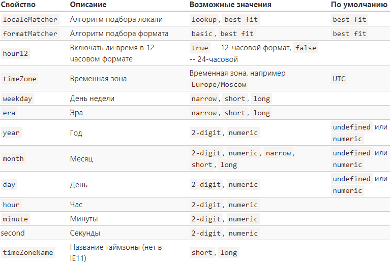
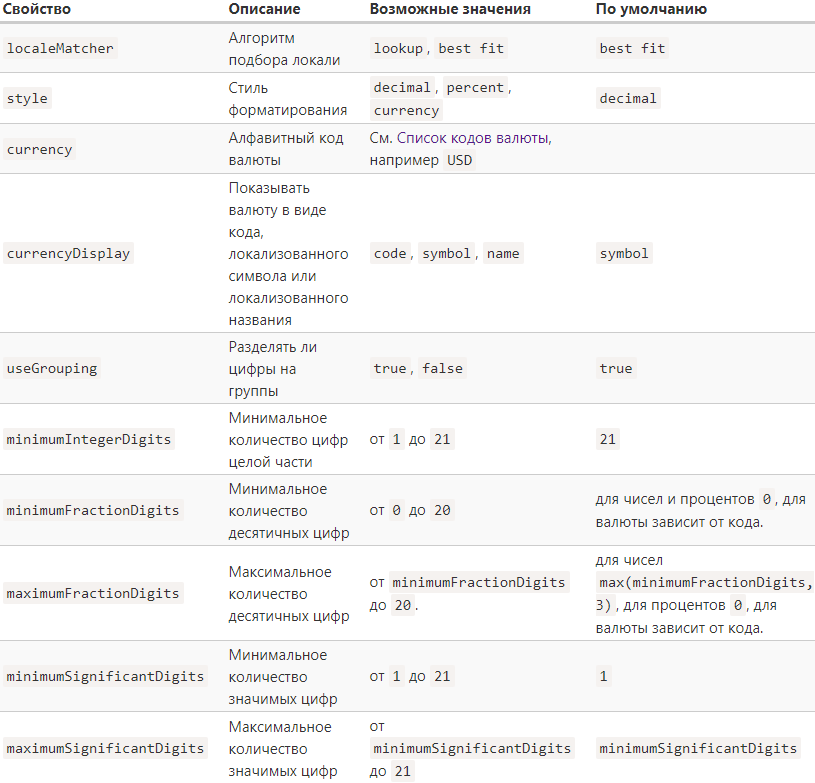

Основы JavaScript
Преобразование типов
Boolean(): При boolean преобразовании "", 0, NaN, false, null, undefined, 0n становятся false, все остальное становится true. Number(): При number преобразовании: " 123 " станет 123 true станет 1 false, null, "", " \t " станут 0 undefined станет NaNОператор "запятая"
Оператор «запятая» предоставляет возможность вычислять несколько выражений, разделяя их запятой. Каждое выражение выполняется, но возвращается результат только последнего. let a = (1 + 2, 3 + 4); // a = 7 Оператор "запятая" имеет самый низкий приоритет, поэтому скобки важны в приведенном примере. Иногда оператор используют в составе более сложных конструкций, чтобы сделать несколько действий в одной строке: for (a = 1, b = 3, c = a * b; a < 10; a++) { ... }Оператор объединения с null '??'
Оператор объединения с null ?? — это быстрый способ выбрать первое «определённое» значение из списка. Выражения «определено», если оно отличается от null или undefined. Результат выражения a ?? b будет следующим: a, если значение a определено, b, если значение a не определено. ?? хорошо срабатывает чтобы выбрать первое "определенное" значение из списка. let height = 0; console.log(height || 100); // 100 (здесь || не сработал, нужна проверка на 0) console.log(height ?? 100); // 0 Оператор ?? имеет очень низкий приоритет, лишь немного выше, чем у ? и =, поэтому при использовании его в выражении, скорее всего, потребуются скобки. Запрещено использовать вместе с || или && без явно указанных круглых скобок.Метки для break/continue
Пример использования: outer: for (let i = 0; i < 3; i++) { for (let j = 0; j < 3; j++) { do something.... // если cond, то выйти из обоих циклов if (cond..) break outer; // сделать что-нибудь со значениями... } } Метки не дают возможности передавать управление в произвольное место кода, лишь выйти из цикла. Вызов break/continue возможен только внутри цикла, и метка должна находиться где-то выше этой директивы.Функции
Function declaration
function sayHi() { alert('Привет'); }Function expression
let sayHi = function() { alert('Привет'); };Arrow functions
let sayHi = () => { alert('Привет'); }; let sayHi = n => n*2; // когда 1 аргумент, скобки ставить не нужно // Более короткая запись для Function expression. Для 1 выражения return не нужен.Anonymous functions
function ask(question, yes, no) { if (confirm(question)) yes() else no(); } ask( "Вы согласны?", function() { alert("Вы согласились."); }, // Анонимная (безымянная) функция () => { alert("Вы отменили выполнение."); } // Еще одна анонимная функция );Отличия function declaration от function expression
1) Function declaration можно использовать во всем скрипте (или блоке кода, если функция объявлена в блоке), даже до ее объявления. Функции, объявленные с помощью Function expression создаются только когда поток выполнения кода достигает их. 2) В строгом режиме, когда Function Declaration находится в блоке {...}, функция доступна везде внутри блока, но не снаружи него. if (true) { function func() { return 2; } } console.log( func() ); // Error: func is not defined 3) В браузере, если мы не используем модули, глобальные функции (объявленные глобально с помощью function declaration) становятся свойствами глобального объекта.Параметры по умолчанию
Если параметр не указан, то его значением становится undefined. Это не приведёт к ошибке: function showMessage(from, text) { // аргументы: from, text alert(from + ': ' + text); } showMessage("Аня"); // Aня: undefined В вызове не указан параметр text, поэтому предполагается, что text === undefined. Если мы хотим задать параметру text значение по умолчанию, мы должны указать его после = function showMessage(from, text = "текст не добавлен") { alert( from + ": " + text ); } showMessage("Аня"); // Аня: текст не добавленОбъекты
Объекты: основы
Создание объекта: let user = new Object(); // синтаксис "конструктор объекта" let user = {}; // синтаксис "литерал объекта" Если нужно менять имя свойства в зависимости от выполнения скрипта, то помогут квадратные скобки: let fruit = prompt("Какой фрукт купить?", "apple"); let bag = { [fruit]: 5, // имя свойства будет взято из переменной fruit }; Нет ограничений на имена свойств: let obj = { return: 1, let: 2 }; obj['for'] = 'hey'; console.log( obj ); // {return: 1, let: 2, for: "hey"} Проверить существование свойства можно с помощью оператора «in» Синтаксис оператора: "key" in object Цикл «for…in» используется для перебора всех свойств объекта. for (let key in obj) { alert( key ); alert( obj[key] ); } Сравнение по ссылке Операторы равенства == и строгого равенства === для объектов работают одинаково. Два объекта равны только в том случае, если это один и тот же объект. Клонирование и объединение объектов, Object.assign Объединение: let user = { name: "Иван" }; let permissions1 = { canView: true }; let permissions2 = { canEdit: true }; Object.assign(user, permissions1, permissions2); // теперь user = { name: "Иван", canView: true, canEdit: true } Клонирование: let clone = Object.assign({}, user); Вложенное клонирование Можно осуществить с помощью рекурсии, либо использовать метод _.cloneDeep(obj) из JavaScript-библиотеки lodash.Методы объектов
1 user.sayHi = function() { alert("Привет!"); }; // Функцию, которая является свойством объекта, называют методом этого объекта. 2 user = { sayHi: function() { alert("Привет"); } }; // Cинтаксис для методов в литерале объекта 3 user = { sayHi() { // то же самое, что и "sayHi: function()" alert("Привет"); } }; // Сокращенная записьСборка мусора
Сборка мусора Основной алгоритм сборки мусора – «алгоритм пометок» (англ. «mark-and-sweep»). Согласно этому алгоритму, сборщик мусора регулярно выполняет следующие шаги: Сборщик мусора «помечает» (запоминает) все корневые объекты. Затем он идёт по их ссылкам и помечает все найденные объекты. Затем он идёт по ссылкам помеченных объектов и помечает объекты, на которые есть ссылка от них. Все объекты запоминаются чтобы в будущем не посещать один и тот же объект дважды. …И так далее, пока не будут посещены все ссылки (достижимые от корней). Все непомеченные объекты удаляются."this"
Вызов функции без объекта означает, что this == undefined // в нестрогом режиме this это глобальный объект function sayHi() { alert(this); } sayHi(); // undefined В JavaScript this является «свободным», его значение вычисляется в момент вызова метода и не зависит от того, где этот метод был объявлен, а зависит от того, какой объект вызывает метод (какой объект стоит «перед точкой»). Стрелочные функции особенные: у них нет своего «собственного» this. Если использовать this внутри стрелочной функции, то его значение берётся из внешней «нормальной» функции. let user = { firstName: "Илья", sayHi() { let arrow = () => alert(this.firstName); arrow(); } }; user.sayHi(); // Илья // если бы вместо стрелочной использовали другое объявление функции, то в строгом режиме была бы ошибка, тк внешняя нормальная функция sayHi() не имеет своего собственного this // Здесь arrow() использует значение this из внешнего метода user.sayHi()Конструкторы, создание объектов через "new"
До этого момента разбирался синтаксис "литерал объекта": let user = {}; // синтаксис "литерал объекта" let user = new Object(); // синтаксис "конструктор объекта"Синтаксис "конструктор объекта"
Конструкторы следует вызывать при помощи оператора new. Такой вызов создаёт пустой this в начале выполнения и возвращает заполненный в конце. Вариант 1 (функция-конструктор с именем): function User(name) { this.name = name; } let user = new User('John'); // подходит для многоразового использования Когда функция вызывается как new User(...), происходит следующее: 1. Создаётся новый пустой объект, и он присваивается this. // this = {}; (неявно) 2. Выполняется код функции. Обычно он модифицирует this, добавляет туда новые свойства. 3. Возвращается значение this. // return this; (неявно) Вариант 2 (анонимная функция-конструктор) let user = new function() { this.name = "John"; }; // можно использовать только один разВозврат значения из конструктора return
Если функция-конструктор возвращает примитивное значение, то оно будет отброшено. Если же возвращаемое значение - объект, то вместо this будет возвращён этот объект. let obj = {}; function A() { return obj; } function B() { return obj; } alert( new A() == new B() ); // trueОпциональная цепочка
Опциональная цепочка ?. останавливает вычисление и возвращает undefined, если часть перед ?. имеет значение undefined или null. let user = {}; // пользователь без свойства address alert(user.address.street); // ошибка! alert( user.address?.street ); // undefined (без ошибки) Переменная перед ?. должна быть объявлена Если переменной user вообще не существует, то выражение user?.anything выдаст ошибку. Другие варианты применения: ?.(), ?.[] Например, ?.() используется для вызова потенциально несуществующей функции. ?.[] используется если значение свойства получаем с помощью квадратных скобок [], а не через точку.Тип данных Symbol
let id = Symbol(); // Создаём новый символ - id let id = Symbol("id"); // Создаём символ id с описанием (именем) "id" Символы уникальны (то есть не равны друг другу), даже если они имеют одинаковое описание. Символы не преобразуются автоматически в строки. let id = Symbol("id"); alert(id); // TypeError: Cannot convert a Symbol value to a string alert(id.toString()); // Symbol(id), теперь работает Если нужно вывести описание символа: let id = Symbol('Я символ'); console.log( id.description ); // Я символ Чтобы записать новое символьное свойство, или обратиться к уже созданному, используют []: let user = {}; let id = Symbol("id"); user[id] = 1; console.log( user[id] ); // 1 Символы в литеральном объявлении объекта: let id = Symbol("id"); let user = { [id]: 123 }; Символы игнорируются циклом for…in Object.keys(user) также игнорирует символы. Object.assign копирует и строковые, и символьные свойства.Глобальные символы
Иногда нужно, чтобы символы с одним именем были одной сущностью. Например, разные части нашего приложения хотят получить доступ к символу "id". Для этого существует глобальный реестр символов. Для чтения из реестра используется вызов Symbol.for(key). Он проверяет глобальный реестр и, при наличии в нём символа с именем key, возвращает его, иначе же создаётся новый символ Symbol(key) и записывается в реестр. let id = Symbol.for("id"); // если символа не существует, он будет создан // читаем символ из глобального реестра и записываем его в переменную let idAgain = Symbol.for("id"); // читаем его снова в другую переменную (возможно, из другого места кода) alert( id === idAgain ); // true Symbol.keyFor Для глобальных символов, кроме Symbol.for(key), который ищет символ по имени, существует обратный метод: Symbol.keyFor(key), который, наоборот, принимает глобальный символ и возвращает его имя. let sym = Symbol.for("name"); alert( Symbol.keyFor(sym) ); // nameИтого
Символ (symbol) – примитивный тип данных, использующийся для создания уникальных идентификаторов. Символы имеют два основных варианта использования: 1. «Скрытые» свойства объектов. 2. Существует множество системных символов, используемых внутри JavaScript, доступных как Symbol.* , например: Symbol.isConcatSpreadable Symbol.iterator Symbol.toPrimitive Для любых символов доступно свойство description. let globalSymbol = Symbol.for("name"); let localSymbol = Symbol("name"); console.log( Symbol.keyFor(globalSymbol) ); // name, глобальный символ console.log( Symbol.keyFor(localSymbol) ); // undefined для неглобального символа console.log( localSymbol.description ); // name console.log( globalSymbol.description ); // name Технически символы скрыты не на 100%, существуют методы для их получения: Object.getOwnPropertySymbols(obj) возвращает массив символьных ключей объекта. Reflect.ownKeys(obj) возвращает массив всех ключей объекта, включая символьные.Преобразование объектов в примитивы
Существует "три хинта", то есть 3 варианта преобразования объекта в примитив: "string", "number", "default". На практике все объекты кроме Date реализуют "default" так же, как и "number". И если мы считаем "default" и "number" одинаковыми, как большинство встроенных объектов, то остаются всего два варианта преобразований. В процессе преобразования движок JavaScript пытается найти и вызвать три следующих метода объекта: obj[Symbol.toPrimitive](hint) obj.toString() obj.valueOf() Порядок вызова: Вызывает obj[Symbol.toPrimitive](hint) если такой метод существует, и передаёт ему хинт. Иначе, если хинт равен "string" пытается вызвать obj.toString(), а если его нет, то obj.valueOf(), если он существует. В случае, если хинт равен "number" или "default" пытается вызвать obj.valueOf(), а если его нет, то obj.toString(), если он существует. Symbol.toPrimitive - это универсальный подход Пример: let user = { name: "John", money: 1000, [Symbol.toPrimitive](hint) { alert(`hint: ${hint}`); return hint == "string" ? `{name: "${this.name}"}` : this.money; } }; alert(user); // hint: string -> {name: "John"} alert(+user); // hint: number -> 1000 alert(user + 500); // hint: default -> 1500 Методы toString/valueOf Пример: let user = { name: "John", money: 1000, toString() { return `{name: "${this.name}"}`; }, valueOf() { return this.money; } }; alert(user); // toString -> {name: "John"} alert(+user); // valueOf -> 1000 alert(user + 500); // valueOf -> 1500 // результат тот же что и при использовании Symbol.toPrimitive На практике довольно часто достаточно реализовать только obj.toString() как «универсальный» метод для всех типов преобразований, возвращающий «читаемое» представление объекта, достаточное для логирования или отладки. Пример: let user = { name: "John", toString() { return this.name; } }; alert(user); // toString -> John alert(user + 500); // toString -> John500 // toString обработает все случаи преобразований к примитивам.Типы данных
Методы примитивов
Примитив как объект Язык позволяет осуществлять доступ к методам и свойствам строк, чисел, булевых значений и символов. Чтобы это работало, при таком доступе создаётся специальный «объект-обёртка», который предоставляет нужную функциональность, а после удаляется. Метод Number.isInteger(num) возвращает true, если num - целое число, иначе false. Метод toFixed(n) округляет число до n знаков после запятой и возвращает строковое представление результата: let num = 3.56; let str = num.toFixed(1); console.log( typeof str ); // stringЧисла
Способы записи числа console.log(7.3e3 === 7300); // true console.log(-2e-2 === -0.02); // true Шестнадцатеричные, двоичные и восьмеричные числа 0x - 16-ые, 0b - 2-ые, 0o - 8-ые. Примеры: alert( 0xff ); // 255 let num = 0b1111; // num = 15 Метод toString(base) возвращает строковое представление числа в системе счисления base где base от 2 до 36. Примеры: let num = 255; console.log( num.toString(16) ); // ff console.log( 250..toString(2) ); // 2 точки для вызова метода console.log( (250).toString(2) ); // либо круглые скобкиНеточные вычисления
alert( 0.1 + 0.2 == 0.3 ); // false Число хранится в памяти в бинарной форме. Дроби, такие как 0.1 и 0.2 являются бесконечной дробью в двоичной форме. В JavaScript нет возможности для хранения точных значений 0.1 или 0.2, используя двоичную систему, так же, как нет возможности хранить одну третью в десятичной системе счисления. Из 64 бит, отведённых на число, сами цифры числа занимают до 52 бит, остальные 11 бит хранят позицию десятичной точки и один бит – знак. Eсли 52 бит не хватает на цифры, то при записи пропадут младшие разряды. alert( 9999999999999999 ); // 10000000000000000 console.log(9999999999999999 === 1e16); // trueПроверка: isFinite и isNaN
Функция isNaN(value) преобразует значение в число и проверяет является ли оно NaN. Функция isFinite(value) преобразует аргумент в число и возвращает true, если оно является обычным числом, т.е. не NaN/Infinity/-Infinity: alert( isFinite("15") ); // true Значение NaN уникально тем, что оно не равно ни чему: console.log( NaN == NaN ); // false Метод Object.is(a, b) сравнивает значения как ===, но может работать с NaN и нулем: console.log( Object.is(NaN, NaN) ); // true console.log( Object.is(-0, 0) ); // false (технически эти значения разные)parseInt и parseFloat
Функции «читают» число из строки. Если в процессе чтения возникает ошибка, они возвращают полученное до ошибки число. Функция parseInt возвращает целое число, а parseFloat возвращает число с плавающей точкой: alert( parseInt('100px') ); // 100 alert( parseFloat('12.5em') ); // 12.5 alert( parseFloat('12.3.4') ); // 12.3 (произойдёт остановка чтения на второй точке) // возвращают NaN если первый символ - не число parseInt(str, base) имеет необязательный второй параметр, определяющий систему счисления (от 2 до 36): alert( parseInt('2n9c', 36) ); // 123456Математические функции
Math.floor - Округление в меньшую сторону Math.ceil - Округление в большую сторону Math.round - Округление до ближайшего целого Math.trunc - Производит удаление дробной части без округления // не поддерживается в IE Math.abs - Возвращает число по модулю Math.random() Возвращает псевдослучайное число в диапазоне от 0 (включительно) до 1 (но не включая 1) alert( Math.random() ); // 0.1234567894322 Math.max(a, b, c...) / Math.min(a, b, c...) Возвращает наибольшее/наименьшее число из перечисленных аргументов. alert( Math.max(3, 5, -10, 0, 1) ); // 5 Math.pow(n, power) - Возвращает число n, возведённое в степень powerСтроки
Кавычки let single = 'single-quoted'; // одинарные let double = "double-quoted"; // двойные let backticks = `backticks`; // обратные Обратные кавычки могут занимать более одной строки, в отличии от одинарных и двойных. Спецсимволы \n Перевод строки \t Знак табуляции \', \" Кавычки \\ Обратный слеш ( \ ) \uXXXX Символ в кодировке UTF-16 с шестнадцатеричным кодом XXXX \u{X…XXXXXX} Символ в кодировке UTF-32 Пример: \u{1F680} это 🚀 Длина строки Свойство length содержит длину строки: alert( `My\n`.length ); // 3Доступ к символам
1) С помощью метода str.charAt(pos). При отсутствии символа возвращает пустую строку. 2) C помощью квадратных скобок. При отсутствии символа возвращается undefined. Примеры: let str = 'Hello'; alert( str[0] ); // H alert( str.charAt(0) ); // H alert( str[str.length - 1] ); // o alert( str[1000] ); // undefined alert( str.charAt(1000) ); // '' (пустая строка) 3) Используя цикл for..of для перебора строки посимвольно: for (let char of "Hello") { alert(char); // H,e,l,l,o (char — сначала "H", потом "e", потом "l" и т. д.) } Строки неизменяемы, но можно создать новую строку и записать ее в ту же переменную: let str = 'Hi'; str[0] = 'h'; // ошибка (нельзя изменять строку) str = 'h' + str[1]; // заменяем строку console.log( str ); // hiИзменение регистра
Методы .toLowerCase() и .toUpperCase() возвращают строку в заданном регистре. alert( 'Interface'.toUpperCase() ); // INTERFACE alert( 'Interface'.toLowerCase() ); // interface alert( 'Interface'[2].toUpperCase() ); // 'T' (перевод конкретного символа)Поиск подстроки
Метод str.indexOf(substr, pos) ищет подстроку substr в строке str, начиная с позиции pos, и возвращает позицию, на которой располагается совпадение, либо -1 при отсутствии совпадений. let str = 'Widget with id'; console.log( str.indexOf('widget') ); // -1 console.log( str.indexOf("id") ); // 1 console.log( str.indexOf('id', 2) ) // 12 Метод str.lastIndexOf(substr, pos) ищет с конца строки (или с pos) до начала. Побитовое НЕ ~ для 32-разрядных целых чисел значение ~n равно -(n+1) console.log( ~2 ); // -3, то же, что -(2+1) console.log( ~1 ); // -2, то же, что -(1+1) console.log( ~0 ); // -1, то же, что -(0+1) console.log( ~-1 ); // 0, то же, что -(-1+1) Соответственно, прохождение проверки if ( ~str.indexOf("…") ) означает, что результат indexOf отличен от -1, совпадение есть. (Применяется в старом коде)includes, startsWith, endsWith
Метод str.includes(substr, pos) возвращает true, если в строке str есть подстрока substr, либо false, если нет. console.log( "Midget".includes("id", 3) ); // false, поиск начат с позиции 3 Методы str.startsWith и str.endsWith проверяют, соответственно, начинается ли и заканчивается ли строка определённой строкой: console.log( "Widget".startsWith("Wid") ); // true, "Wid" — начало "Widget" console.log( "Widget".endsWith("get") ); // true, "get" — окончание "Widget"Получение подстроки
Метод str.slice(start, end) возвращает часть строки от start до (не включая) end. let str = "stringify"; console.log( str.slice(0, 5) ); // 'strin' console.log( str.slice(2) ); // ringify, с позиции 2 и до конца console.log( str.slice(-4, -1) ); // gif // начинаем с позиции 4 справа, а заканчиваем на позиции 1 справа Метод str.substring(start, end) - почти такой же, но 1. можно задавать start больше end 2. отрицательные значение интерпретируются как 0. let str = "stringify"; console.log( str.substring(6, 2) ); // "ring" console.log( str.substring(2, -3) ); // "st" Метод str.substr(start, length) возвращает часть строки от start длины length. let str = "stringify"; console.log( str.substr(2, 4) ); // "ring" console.log( str.substr(-4, 2) ); // "gi" // если задать отрицательную длину, то это равносильно length = 0Стравнение строк
Строки кодируются в UTF-16. У любого символа есть соответствующий код. Метод str.codePointAt(pos) возвращает код для символа, находящегося на позиции pos. alert( "z".codePointAt(0) ); // 122 alert( "a".codePointAt() ); // 97 alert( "Z".codePointAt(0) ); // 90 Метод String.fromCodePoint(code) создаёт символ по его коду code. alert( String.fromCodePoint(90) ); // Z Метод str.localeCompare(str2) возвращает число, которое показывает, какая строка больше в соответствии с правилами языка: Отрицательное число, если str меньше str2. Положительное число, если str больше str2. 0, если строки равны. alert( 'Österreich'.localeCompare('Zealand') ); // -1 Метод str.trim() — убирает пробелы в начале и конце строки. Метод str.repeat(n) — повторяет строку n раз.Основное
str.length - свойство позволяет узнать длину строки. for..of - цикл для перебора строки посимвольно. str.indexOf(substr, pos) - поиск подстроки начиная с позиции pos. Возвращает позицию или -1. str.includes(substr, pos) - ищет substr начиная с pos. Возвращает true, если находит, либо false. str.slice(start, end) - метод возвращает часть строки от start (включ-но) и до end (не включая).Массивы
Объявление
1) let arr = new Array(); Также можно сразу добавить эл-ты. Например: let arr = new Array("Яблоко", "Груша", "и тд"); Однако, если new Array вызывается с одним аргументом, который представляет собой число, он создаёт массив без элементов, но с заданной длиной. 2) let arr = [];Методы pop/push, shift/unshift
.pop() - удаляет последний элемент из массива и возвращает его. .push(elem1, elem2...) - добавляет элемент (или несколько элементов) в конец массива и возвращает длину получившегося массива. .shift() - удаляет из массива первый элемент и возвращает его. .unshift(elem1, elem2...) - добавляет элемент (или несколько элементов) в начало массива и возвращает длину получившегося массива.Перебор элементов массива
for (let i = 0; i < arr.length; i++) – работает быстрее всего. for (let item of arr) – современный синтаксис только для значений элементов. Простой способ очистить массив – это arr.length = 0 (свойство length можно вручную перезаписать. Если его уменьшить, массив станет короче) toString Массивы не имеют ни Symbol.toPrimitive, ни функционирующего valueOf, они реализуют только toString, который возвращает список элементов, разделенных запятыми: let arr = [1,2 , 3]; // [1, 2, 3] console.log( arr.toString() ); // 1,2,3 console.log( arr.toString() === String(arr) ); // true console.log( arr + 1 ); // 1,2,31Методы массивов
Добавление/удаление элементов
splice - arr.splice(index[, deleteCount, elem1, ..., elemN]) // удаляет deleteCount элементов начиная с index и заменяет на elemN эл-ты. Возвращает массив удаленных элементов. Метод также может вставлять элементы без удаления если установить deleteCount в 0. slice - arr.slice([start], [end]) // возвращает новый массив, в который копирует элементы, начиная с индекса start и до end (не включая end). arr.slice() без аргументов создаёт копию массива arr. concat - arr.concat(arg1, arg2...) // создаёт новый массив, в который копирует данные из других массивов и дополнительные значения. Другие объекты добавляются как есть. alert( arr.concat(arrayLike) ); // 1,2,[object Object] …Но если объект имеет специальное свойство Symbol.isConcatSpreadable, то он обрабатывается concat как массив: вместо него добавляются его числовые свойства. Для корректной обработки в объекте должны быть числовые свойства и length: let arr = [1, 2]; let arrayLike = { 0: "что-то", 1: "ещё", [Symbol.isConcatSpreadable]: true, length: 2 }; alert( arr.concat(arrayLike) ); // 1,2,что-то,ещёПеребор: forEach
Метод forEach - arr.forEach(function(item, index, array) { ... }); // позволяет запускать функцию для каждого элемента массива. Результат ф-ции, если она что-то возвращает, игнорируется. ["Bilbo", "Gandalf", "Nazgul"].forEach((item, index, array) => { alert(`${item} имеет позицию ${index} в ${array}`); });Поиск в массиве
indexOf/lastIndexOf и includes делают то же самое, что и их строковые аналоги. arr.indexOf(item, from) ищет item, начиная с индекса from, и возвращает индекс, на котором был найден искомый элемент, в противном случае -1. arr.lastIndexOf(item, from) – то же самое, но ищет справа налево. arr.includes(item, from) – ищет item, начиная с индекса from, и возвращает true, если поиск успешен. arr.includes правильно обрабатывает NaN в отличии от arr.indexOf и arr.lastIndexOf. find и findIndex - arr.find(function(item, index, array) {...}); // находят элементы (индексы эл-тов) с определенным условием find - Если функция возвращает true, поиск прерывается и возвращается item. Если ничего не найдено, возвращается undefined. arr.findIndex - Возвращает индекс, на котором найден элемент или -1 если ничего не найдено. let users = [ {id: 1, name: "Вася"}, {id: 2, name: "Петя"}, {id: 3, name: "Маша"} ]; let user = users.find(item => item.id == 1); alert(user.name); // Вася filter - arr.filter(function(item, index, array) { ... }); // filter возвращает массив из всех подходящих элементов Возвращается пустой массив в случае, если ничего не найдено.Пребразование массива
map - arr.map(function(item, index, array) { ... }); // вызывает функцию для каждого элемента массива и возвращает массив результатов выполнения этой функции let lengths = ["Bilbo", "Gandalf", "Nazgul"].map(item => item.length); alert(lengths); // 5,7,6 sort(fn) - arr.sort() // возвращает отсортированный массив, но обычно возвращаемое значение игнорируется, так как изменяется сам arr. По умолчанию эл-ты сортируются как строки. Чтобы использовать наш собственный порядок сортировки, нужно предоставить функцию в качестве аргумента arr.sort(). Эта функция принимает два параметра, назовем их a и b. Функция сравнения этих двух элементов должна возвращать число: отрицательное, если a должно стоять перед b, положительное, если b должно стоять перед a, ноль, если значения равны и не требуют перестановки. function compare(a, b) { if (a > b) return 1; // 1 либо любое положительное число if (a == b) return 0; // не обязательно указывать if (a < b) return -1; // -1 либо любое отрицательное число } arr.sort( (a, b) => (a > b) ? 1 : -1 ); // так запись короче arr.sort( (a, b) => a - b ); // очень короткая запись reverse - arr.reverse() Метод меняет порядок элементов в arr на обратный. arr.reverse(); Также возвращает измененный arr. split - str.split(delim) Разбивает строку на массив по заданному разделителю delim Если delim не указан, возвращает всю строку в первом элементе массива. У метода split есть необязательный второй числовой аргумент – ограничение на количество элементов в массиве. Если их больше, чем указано, то остаток массива будет отброшен. let arr = names.split(', ', 2); join - arr.join(glue) // Вызов arr.join(glue) делает в точности противоположное split. Возвращает строку из элементов arr, вставляя glue между ними (запятую если glue не указан). reduce и reduceRight - arr.reduce(function(previousValue, item, index, array) { ... }, [initial]); Методы используются для вычисления единого значения на основе всего массива. // перебирают массив // при вызове функции результат её вызова передается в previousValue // первоначально previousValue берется из initial // метод возвращает результат конечной функции initial можно опустить, но в если массив будет пустой, возникнет ошибка let arr = []; arr.reduce((sum, current) => sum + current); // Error: Reduce of empty... array with no initial value Если initial указан, но массив пустой, то возвращает initial. Метод arr.reduceRight работает аналогично, но проходит по массиву справа налево.Array.isArray
Метод используется чтобы отличить простой объект от массива alert(Array.isArray({})); // false alert(Array.isArray([])); // true Большинство методов поддерживают «thisArg» // Почти все методы массива, которые вызывают функции – такие как find, filter, map, за исключением метода sort, принимают необязательный параметр thisArg. arr.find(func, thisArg); // пример Значение параметра thisArg становится this для func. let army = { minAge: 18, maxAge: 27, canJoin(user) { return user.age >= this.minAge && user.age < this.maxAge; } }; let users = [ {age: 16}, {age: 20}, {age: 23}, ]; // найти пользователей, для которых army.canJoin возвращает true let soldiers = users.filter(army.canJoin, army); console.log( soldiers ); // массив из двух объектов с age 20 и 23Другие методы
arr.some(fn)/arr.every(fn) проверяет массив. Функция fn вызывается для каждого элемента массива аналогично map. Если какие-либо/все результаты вызовов являются true, то метод возвращает true, иначе false. arr.fill(value, start, end) – заполняет массив повторяющимися value, начиная с индекса start до end. Меняет только уже существующие элементы. Возвращает измененный массив. arr.copyWithin(target, start, end) – копирует свои элементы, начиная со start и заканчивая end, в собственную позицию target (перезаписывает существующие). flat (стандарт ES2019) Создаёт новый массив из всех подмассивов в нём. Он принимает один параметр — глубину «сглаживания» массива: const numbers = [1, 2, [3, 4, [5, [6, 7]], [[[[8]]]]]] const numbersflattenOnce = numbers.flat() console.log(numbersflattenOnce) // [1, 2, 3, 4, Array[2], Array[1]] const numbersflattenTwice = numbers.flat(2) console.log(numbersflattenTwice) // [1, 2, 3, 4, 5, Array[2], Array[1]] const numbersFlattenInfinity = numbers.flat(Infinity) console.log(numbersFlattenInfinity) // [1, 2, 3, 4, 5, 6, 7, 8] flatMap (стандарт ES2019) Сначала он вызывает mapping-функцию для каждого элемента в массиве, а потом «выравнивает» их в один массив. const sentences = [ 'Это предложение', 'Это уже другое предложение', "Не могу ничего найти", ] const allWords = sentences.flatMap(sentence => sentence.split(' ')) console.log(allWords) // ["Это", "предложение", "Это", "уже", "другое", "предложение", "Не", "могу", "ничего", "найти"]Перебираемые объекты
Перебираемые (или итерируемые) объекты – это концепция, которая позволяет использовать любой объект в цикле for..of.Symbol.iterator
Чтобы сделать объект итерируемым (и позволить for..of работать с ним), нам нужно добавить в объект метод с именем Symbol.iterator (специальный встроенный Symbol, созданный как раз для этого). 1. Когда цикл for..of запускается, он вызывает этот метод один раз (или выдаёт ошибку, если метод не найден). Этот метод должен вернуть итератор – объект с методом next. 2. Дальше for..of работает только с этим возвращённым объектом. 3. Когда for..of хочет получить следующее значение, он вызывает метод next() этого объекта. 4. Результат вызова next() должен иметь вид {done: Boolean, value: any}, где done=true означает, что итерация закончена, в противном случае value содержит очередное значение. let range = { from: 1, to: 5 }; // 1. вызов for..of сначала вызывает эту функцию range[Symbol.iterator] = function() { // ...она возвращает объект итератора: // 2. Далее, for..of работает только с этим итератором, запрашивая у него новые значения return { current: this.from, last: this.to, // 3. next() вызывается на каждой итерации цикла for..of next() { // 4. он должен вернуть значение в виде объекта {done:.., value :...} if (this.current <= this.last) { return { done: false, value: this.current++ }; } else { return { done: true }; } } }; }; // работает for (let num of range) { alert(num); // 1, затем 2, 3, 4, 5 }Array.from
Метод Array.from принимает итерируемый объект (объект, который реализует метод Symbol.iterator) или псевдомассив (объект, у которого есть индексы и свойство length (в том числе строки)) и делает из него «настоящий» Array. Пример: let arrayLike = { 0: "Hello", 1: "World", length: 2 }; let arr = Array.from(arrayLike); // (*) alert(arr.pop()); // World (метод работает) Полный синтаксис Array.from позволяет указать необязательную «трансформирующую» функцию: Array.from(obj[, mapFn, thisArg]); let arr = Array.from(range, num => num * num); // range взят из примера вышеMap и Set
Перебор Map и Set всегда осуществляется в порядке добавления элементов, но поменять порядок элементов или получить элемент напрямую по его номеру нельзя.Map
Map – это коллекция пар ключ/значение, как и Object. Map позволяет использовать ключи любого типа. Методы и свойства: new Map() – создаёт коллекцию. map.set(key, value) – записывает по ключу key значение value. map.get(key) – возвращает значение по ключу или undefined, если ключ key отсутствует. map.has(key) – возвращает true, если ключ key присутствует в коллекции, иначе false. map.delete(key) – удаляет элемент по ключу key. map.clear() – очищает коллекцию от всех элементов. map.size – возвращает текущее количество элементов. Цепочка вызовов Каждый вызов map.set возвращает объект map, так что можно объединить вызовы в цепочку: map.set("1", "str1") .set(1, "num1") .set(true, "bool1");Перебор Map
map.keys() – возвращает итерируемый объект по ключам map.values() – возвращает итерируемый объект по значениям map.entries() – возвращает итерируемый объект по парам вида [ключ, значение], этот вариант используется по умолчанию в for..of. Вместе с циклом for..of: let recipeMap = new Map([ ["огурец", 500], ["помидор", 350], ["лук", 50] ]); for (let vegetable of recipeMap.keys()) { alert(vegetable); // огурец, помидор, лук } Кроме этого, Map имеет встроенный метод forEach: recipeMap.forEach((value, key, map) => { alert(`${key}: ${value}`); // огурец: 500 и так далее });Object.entries: Map из Object
Метод Object.entries(obj) возвращает массив пар ключ-значение (то, что нужно для создания Map) Способ 1: let map = new Map([ ['1', 'str1'], [1, 'num1'], [true, 'bool1'] ]); alert( map.get('1') ); // str1 Способ 2: let obj = { name: "John", age: 30 }; let map = new Map(Object.entries(obj));Object.fromEntries: Object из Map
Метод Object.fromEntries получив массив пар вида [ключ, значение], создаёт из них объект: let obj = Object.fromEntries(map.entries()); или короче: let obj = Object.fromEntries(map);Set
Объект Set – это особый вид коллекции: «множество» уникальных значений (без ключей), где каждое значение может появляться только один раз. Методы и свойства: new Set(iterable) – создаёт Set, и если в качестве аргумента был предоставлен итерируемый объект (обычно это массив), то копирует его значения в новый Set. set.add(value) – добавляет значение (если оно уже есть, то ничего не делает), возвращает получившийся set. set.delete(value) – удаляет значение, возвращает true, если value было в множестве на момент вызова, иначе false. set.has(value) – возвращает true, если значение присутствует в множестве, иначе false. set.clear() – удаляет все имеющиеся значения. set.size – возвращает количество элементов в множестве.Перебор Set
Можно перебирать как с помощью метода for..of, так и используя forEach: let set = new Set(["апельсин", "яблоко", "банан"]); for (let value of set) alert(value); // то же самое с forEach: set.forEach((value, valueAgain, set) => { alert(value); }); Set имеет те же встроенные методы, что и Map: set.values() – возвращает перебираемый объект для значений. set.keys() – то же самое, что и set.values(), присутствует для обратной совместимости с Map. set.entries() – возвращает перебираемый объект для пар вида. [значение, значение], присутствует для обратной совместимости с Map.WeakMap и WeakSet
Используются как вспомогательные структуры данных в дополнение к «основному» месту хранения объекта. Не являются перебираемыми.WeakMap
Ключи в WeakMap должны быть объектами. При использовании объекта в качестве ключа если больше нет ссылок на этот объект, он будет удалён из памяти (и из объекта WeakMap) автоматически вместе с соответствующим ему значением. WeakMap не поддерживает перебор и методы keys(), values(), entries(), так что нет способа взять все ключи или значения из неё. В WeakMap присутствуют только следующие методы: weakMap.get(key) weakMap.set(key, value) weakMap.delete(key) weakMap.has(key) Пример реализации счетчика посещений с помощью WeakMap: let visitsCountMap = new WeakMap(); // map: пользователь => число визитов // увеличиваем счётчик function countUser(user) { let count = visitsCountMap.get(user) || 0; visitsCountMap.set(user, count + 1); } После того, как объект john стал недостижим другими способами, кроме как через WeakMap, он удаляется из памяти вместе с информацией по такому ключу из WeakMap.WeakSet
По аналогии с WeakMap, в WeakSet можно добавлять только объекты. Объект присутствует в множестве только до тех пор, пока доступен где-то ещё. WeakSet поддерживает следующие методы: weakSet.add(value) weakSet.has(value) weakSet.delete(value)Object.keys, values, entries
Для простых объектов доступны следующие методы: Object.keys(obj) – возвращает массив ключей. Object.values(obj) – возвращает массив значений. Object.entries(obj) – возвращает массив пар [ключ, значение]. Object.keys/values/entries игнорируют символьные свойства. У объектов нет множества методов, которые есть в массивах, например map, filter и других. Если нужно их применить, можно использовать Object.entries с последующим вызовом Object.fromEntries: Object.fromEntries( Object.entries(obj).map(([key, value]) => [key, value * 2]) );Деструктурирующее присваивание
Это специальный синтаксис, который позволяет «распаковать» массивы или объекты в кучу переменныхДеструктуризация массива
let arr = ["Ilya", "Kantor"] let [firstName, surname] = arr; // записывает firstName=arr[0], surname=arr[1] Ненужные элементы массива также могут быть отброшены через запятую: let [firstName, , title] = ["Julius", "Caesar", "Consul", "..."]; alert( title ); // Consul Можно использовать что угодно «присваивающее» с левой стороны: let user = {}; [user.name, user.surname] = "Ilya Kantor".split(' '); alert(user.name); // Ilya Цикл с entries: for (let [key, value] of Object.entries(user)) { // user - простой объект alert(`${key}:${value}`); // name:John, затем age:30 } Остаточные параметры: let [name1, name2, ...rest] = ["Julius", "Caesar", "Consul", "Me"]; rest является массивом: alert(rest[0]); // Consul alert(rest[1]); // Me lert(rest.length); // 2 Если в массиве меньше значений, чем в присваивании, они считаются неопределёнными: let [firstName, surname] = []; alert(firstName); // undefined Если необходимо указать значения по умолчанию, то можно использовать = Они выполняются, только если значения отсутствуют: let [name = "Guest", surname = "Anonymous", info = prompt('')] = ["Julius"]; alert(name); // Julius (из массива) alert(surname); // Anonymous (значение по умолчанию) alert(info); // (результат prompt)Деструктуризация объекта
let options = { title: "Menu" }; let {width, height = prompt("height?"), title} = options; console.log(width); // undefined (нет такого свойства) console.log(height); // (результат prompt) console.log(title); // Menu Можно присвоить свойство объекта переменной с другим названием: let options = { title: "Menu" } let { title: t } = options; alert(t); // "Menu" Остаток объекта «…» // Можно использовать троеточие, как и для массивов. let options = { title: "Menu", height: 200, width: 100 }; let {title, ...rest} = options; console.log(rest) ; // {height: 200, width: 100} Вложенная деструктуризация: let options = { size: {width: 100, height: 200} }; let { size: { width: w, height, title = "Menu", }, } = options; console.log( size ) ; // error: size is not defined console.log( width ) ; // error: width is not defined console.log( w ) ; // 100 console.log( title ) ; // "Menu"Умные параметры функций
Есть ситуации, когда функция имеет много параметров, большинство из которых не обязательны. Например: function showMenu(title = "Untitled", width = 200, height = 100, items = []) {...} Можно передать параметры как объект, и функция немедленно деструктурирует его в переменные: let options = { title: "My menu", items: ["Item1", "Item2"] }; function showMenu({title = "Untitled", width = 200, height = 100, items = []}) {...} showMenu(options); Если нам нужны все значения по умолчанию, то нам следует передать пустой объект: showMenu({}); // ок, все значения - по умолчанию showMenu(); // так была бы ошибка Ошибку можно исправить, сделав {} значением по умолчанию для всего объекта параметров: function showMenu({ title = "Menu", width = 100, height = 200 } = {}) { alert( `${title} ${width} ${height}` ); } showMenu(); // Menu 100 200Дата и время
Date - встроенный объектСоздание
1) new Date() без аргументов – создать объект Date с текущими датой и временем. 2) new Date(milliseconds), где milliseconds - таймстамп, то есть кол-во миллисекунд, прошедших с 1 января 1970 года. 3) new Date(datestring) Формат строки должен быть следующим: YYYY-MM-DDTHH:mm:ss.sssZ, где: YYYY-MM-DD – это дата: год-месяц-день. Символ "T" используется в качестве разделителя. HH:mm:ss.sss – время: часы, минуты, секунды и миллисекунды. Необязательная часть 'Z' обозначает часовой пояс в формате +-hh:mm. Если указать просто букву Z, то получим UTC+0. Возможны и более короткие варианты, например, YYYY-MM-DD, или даже YYYY. let date = new Date("2021-06-06"); alert(date); // Sun Jun 06 2021 03:00:00 GMT+0300 (Москва, стандартное время) 4) new Date(year, month, date, hours, minutes, seconds, ms) // обязательны только первые 2 аргумента year должен состоять из четырёх цифр: значение 2013 корректно, 98 – нет. month начинается с 0 (январь) по 11 (декабрь). Параметр date - день месяца. Если параметр не задан, то принимается значение 1. Если параметры hours/minutes/seconds/ms отсутствуют, их значением становится 0. let date = new Date(2021, 5, 6, 8, 49); console.log( date ); // Sun Jun 06 2021 08:49:00 GMT+0300 (Москва, ...)Получение компонентов даты
Значения в соответствии с местным часовым поясом. Методы: getFullYear() - Получить год (4 цифры). getMonth() - Получить месяц, от 0 до 11. getDate() - Получить день месяца, от 1 до 31. getHours(), getMinutes(), getSeconds(), getMilliseconds() - соответственно названиям. getDay() - Вернуть день недели от 0 (воскресенье) до 6 (суббота). Значения по UTC: getUTCFullYear(), getUTCMonth(), getUTCDate(), getUTCHours(), getUTCMinutes(), getUTCSeconds(), getUTCMilliseconds(), getDay() console.log( new Date().getHours() ); // 9 console.log( new Date().getUTCHours() ); // 6 getTime() - Для заданной даты возвращает таймстамп console.log( new Date().getTime() ); // 1622959258175 getTimezoneOffset() - Возвращает разницу в минутах между местным часовым поясом и UTC: console.log( new Date().getTimezoneOffset() ); // -180Установка компонентов даты
Методы: setFullYear(year, [month], [date]) setMonth(month, [date]) setDate(date) setHours(hour, [min], [sec], [ms]) setMinutes(min, [sec], [ms]) setSeconds(sec, [ms]) setMilliseconds(ms) setTime(milliseconds) - устанавливает дату в виде целого кол-во ms, прошедших с 01.01.1970 UTC console.log( new Date().setHours(0) ); // 1622927664219 let date = new Date(2021, 5, 6, 8, 49); date.setHours(0); console.log( date ); // Sun Jun 06 2021 00:49:00 GMT+0300 (Моск...) Автоисправление даты // Можно устанавливать компоненты даты вне обычного диапазона значений (даже нулевые или даже отрицательные), а объект сам себя исправит. let date = new Date(2013, 0, 32); // 32 Jan 2013 ?!? alert(date); // ...1st Feb 2013! Если нужно изменить дату: let date = new Date(2016, 1, 28); date.setDate(date.getDate() + 2); alert( date ); // 1 Mar 2016 Пример с нулевым значением: let date = new Date(2016, 0, 2); // 2 Jan 2016 date.setDate(0); // выведется последнее число предыдущего месяца alert( date ); // 31 Dec 2015 Преобразование к числу, разность дат. // Если объект Date преобразовать в число, то получим таймстамп по аналогии с date.getTime(): console.log( +new Date() ); // 1622961034291 Поэтому даты можно вычитать, получая разность в миллисекундах. Пример: let start = new Date(); for (let i = 0; i < 1e6; i++) { let doSomething = i * i * i; } let end = new Date(); console.log(`Цикл отработал за ${end - start} миллисекунд`) Date.now() // для быстрого получения текущего времени в формате таймстампа. // семантически эквивалентен new Date().getTime(), но не создаёт промежуточный объект Date. Так что этот способ работает быстрее и не нагружает сборщик мусора.Бенчмаркинг
Например, нужно сравнить две функции, вычисляющие разницу между двумя датами: какая сработает быстрее? Такие вычисления, замеряющие производительность называют «бенчмарками» (benchmark). Для получения наиболее достоверных результатов тестирования производительности весь набор бенчмарков нужно запускать по нескольку раз. Нелишним будет добавить предварительный запуск для «разогрева»: function diffSubtract(date1, date2) { return date2 - date1; } // первая функция function diffGetTime(date1, date2) { return date2.getTime() - date1.getTime(); } // вторая функция function bench(f) { let date1 = new Date(0); let date2 = new Date(); let start = Date.now(); for (let i = 0; i < 100000; i++) f(date1, date2); return Date.now() - start; } // функция, которая тестирует нужные нам функции let time1 = 0; let time2 = 0; // добавляем для "разогрева" перед основным циклом bench(diffSubtract); bench(diffGetTime); for (let i = 0; i < 10; i++) { time1 += bench(diffSubtract); time2 += bench(diffGetTime); } // запускаем по 10 раз для каждой функции тест console.log( 'Время diffSubtract: ' + time1 ); // 198 console.log( 'Время diffGetTime: ' + time2 ); // 11 Разбор строки с датой // Метод Date.parse(str) считывает дату из строки. Формат такой же, как с синтаксисом new Date(datestring) Вызов Date.parse(str) обрабатывает строку в заданном формате и возвращает таймстамп. Если формат неправильный, возвращается NaN. Дополнительно: В браузерах есть метод performance.now(), возвращающий количество миллисекунд с начала загрузки страницы с точностью до микросекунд (3 цифры после точки): performance.now() // 8232.939999899827 (8 секунд) // корректными являются только первые три цифры после точки, остальные - это ошибка точности.Формат JSON, метод toJSON
Представление в формате JSON: Ключи объектов заключаются в двойные кавычки. Значения, если это строки, также заключаются в двойные кавычки. JSON поддерживает следующие типы данных: Объекты { ... } Массивы [ ... ] Примитивы: строки, числа, логические значения true/false, null.JSON.stringify
JSON.stringify - метод для преобразования объектов в JSON. JSON является независимой от языка спецификацией для данных, поэтому JSON.stringify пропускает некоторые специфические свойства объектов JavaScript. А именно: Свойства-функции (методы). Символьные свойства. Свойства, содержащие undefined. Пример: {"name":"John","age":30} let user = { sayHi() { // будет пропущено alert("Hello"); }, [Symbol("id")]: 123, // также будет пропущено something: undefined // как и это - пропущено }; alert( JSON.stringify(user) ); // {} (пустой объект) Ограничение: не должно быть циклических ссылок: JSON.stringify(meetup); // Ошибка: Преобразование цикличной структуры в JSONИсключаем и преобразуем: replacer
Полный синтаксис JSON: let json = JSON.stringify(value[, replacer, space]) value - Значение для кодирования. replacer - Массив свойств для кодирования или функция соответствия function(key, value). space - Дополнительное пространство (отступы), используемое для форматирования. Вместо replacer можно передать массив свойств, которые мы хотим записать в JSON: let meetup = { title: "Conference", participants: [{name: "John"}, {name: "Alice"}], } alert( JSON.stringify(meetup, ['title', 'participants']) ); // {"title":"Conference","participants":[{},{}]} // свойств name не будет, так как их нет в массиве свойств Также на месте replacer можно написать функцию, а не массив. Она будет вызываться для каждой пары (key, value) и должна возвращать замененное значение вместо исходного, либо undefined чтобы пропустить значение. alert( JSON.stringify(meetup, function replacer(key, value) { alert(`${key}: ${value}`); return (key == 'occupiedBy') ? undefined : value; })); Первый вызов – особенный. Ему передаётся специальный «объект-обёртка»: {"": meetup}. Другими словами, первая (key, value) пара имеет пустой ключ, а значением является целевой объект в общем. Первая строка из примера выше будет ":[object Object]". Форматирование: space space указывает на кол-во пробелов для удобного форматирования. Сделать это можно так: alert(JSON.stringify(user, null, 2));Пользовательский «toJSON»
// Если объект имеет метод toJSON для преобразования в JSON, то он вызывается через JSON.stringify let room = { number: 23, toJSON() { return this.number; } }; let meetup = { title: "Conference", room }; alert( JSON.stringify(meetup) ); // {"title":"Conference","room": 23}JSON.parse
JSON.parse - метод для преобразования JSON обратно в объект. Синтаксис: let value = JSON.parse(str, [reviver]); str - это сам JSON для преобразования в объект reviver - необязательная ф-ция, которая будет вызываться для каждой пары (ключ, значение) и преобразовывать значения. Использование reviver Чтобы значения объектов date не оставались строками после преобразования, надо использовать функцию: let str = '{"title":"Conference","date":"2017-11-30T12:00:00.000Z"}'; let meetup = JSON.parse(str, function(key, value) { if (key == 'date') return new Date(value); return value; }); // работает и для вложенных объектовПродвинутая работа с функциями
Рекурсия и стек
Рекурсия - это вызов функцией самой себя function pow(x, n) { if (n == 1) { return x; } else { return x * pow(x, n - 1); } } Рекурсивное решение задачи обычно короче, чем итеративное. Общее количество вложенных вызовов (включая первый) называют глубиной рекурсии. В примере выше она будет равна ровно n. Максимальная глубина рекурсии ограничена движком JavaScript. // обычно можно рассчитывать на 10000 вложенных вызовов. Это ограничивает применение рекурсии, но она всё равно широко распространена: для решения большого числа задач рекурсивный способ решения даёт более простой код, который легче поддерживать.Контекст выполнения, стек
Информация о процессе выполнения запущенной функции хранится в её контексте выполнения (execution context). Контекст выполнения – специальная внутренняя структура данных, которая содержит информацию о вызове функции. Она включает в себя конкретное место в коде, на котором находится интерпретатор, локальные переменные функции, значение this и прочую служебную информацию. Один вызов функции имеет ровно один контекст выполнения, связанный с ним. Когда функция производит вложенный вызов, происходит следующее: Выполнение текущей функции приостанавливается. Контекст выполнения, связанный с ней, запоминается в специальной структуре данных – стеке контекстов выполнения. Выполняются вложенные вызовы, для каждого из которых создаётся свой контекст выполнения. После их завершения старый контекст достаётся из стека, и выполнение внешней функции возобновляется с того места, где она была остановлена.Пример: pow(2, 3)
В начале вызова pow(2, 3) контекст выполнения будет хранить переменные: x = 2, n = 3, выполнение находится на первой строке функции. Контекст: { x: 2, n: 3, строка 1 } (схематически) строка 1 function pow(x, n) { 2 if (n == 1) { 3 return x; 4 } else { 5 return x * pow(x, n - 1); 6 } 7 } Условие n == 1 ложно, поэтому выполнение идёт во вторую ветку if. актуальный контекст: Контекст: { x: 2, n: 3, строка 5 } Чтобы вычислить выражение x * pow(x, n - 1), требуется произвести запуск pow с новыми аргументами pow(2, 2). pow(2, 2) Для выполнения вложенного вызова JavaScript запоминает текущий контекст выполнения в стеке контекстов выполнения. Для любых функций процесс одинаков: Текущий контекст «запоминается» на вершине стека. Создаётся новый контекст для вложенного вызова. Когда выполнение вложенного вызова заканчивается – контекст предыдущего вызова восстанавливается, и выполнение соответствующей функции продолжается. Вид контекста в начале выполнения вложенного вызова pow(2, 2): Контекст: { x: 2, n: 2, строка 1 } - вызов pow(2, 2) Контекст: { x: 2, n: 3, строка 5 } - вызов pow(2, 3) новый контекст находится на вершине стека, а предыдущие, запомненные - под ним. pow(2, 1) Процесс повторяется: производится новый вызов в строке 5, теперь с аргументами x=2, n=1. Создаётся новый контекст выполнения, предыдущий контекст добавляется в стек: Контекст: { x: 2, n: 1, строка 1 } - вызов pow(2, 1) Контекст: { x: 2, n: 2, строка 5 } - вызов pow(2, 2) Контекст: { x: 2, n: 3, строка 5 } - вызов pow(2, 3) Теперь в стеке 2 старых контекста и один текущий для pow(2, 1). Выход При выполнении pow(2, 1), в отличие от предыдущих запусков, условие n == 1 истинно, поэтому выполняется первая ветка условия if: Вложенных вызовов больше нет, поэтому функция завершается, возвращая 2. Когда функция заканчивается, контекст её выполнения больше не нужен, поэтому он удаляется из памяти, а из стека восстанавливается предыдущий: Контекст: { x: 2, n: 2, строка 5 } - вызов pow(2, 2) Контекст: { x: 2, n: 3, строка 5 } - вызов pow(2, 3) Возобновляется обработка вызова pow(2, 2). Имея результат pow(2, 1), он может закончить свою работу x * pow(x, n - 1), вернув 4. Восстанавливается контекст предыдущего вызова: Контекст: { x: 2, n: 3, строка 5 } - вызов pow(2, 3) Самый внешний вызов заканчивает свою работу, его результат: pow(2, 3) = 8. Глубина рекурсии в данном случае составила 3. Глубина рекурсии равна максимальному числу контекстов, одновременно хранимых в стеке.Рекурсивный vs итеративный вариант
Рекурсия приводит к хранению всех данных для неоконченных внешних вызовов в стеке. В данном случае это приводит к тому, что возведение в степень n хранит в памяти n различных контекстов. Итеративный вариант функции pow использует один контекст, в котором будут последовательно меняться значения. При этом объём затрачиваемой памяти небольшой, фиксированный и не зависит от n. Любая рекурсия может быть переделана в цикл. Как правило, вариант с циклом будет эффективнее. Но переделка рекурсии в цикл может быть нетривиальной. Оптимизация может быть ненужной и совершенно нестоящей усилий. Часто код с использованием рекурсии более короткий, лёгкий для понимания и поддержки. Оптимизация требуется не везде, как правило, важен хороший код, поэтому она и используется.Пример: рекурсивные обходы
Другим отличным применением рекурсии является рекурсивный обход. let company = { sales: [{name: 'John', salary: 1000}, {name: 'Alice', salary: 600 }], development: { sites: [{name: 'Peter', salary: 2000}, {name: 'Alex', salary: 1800 }], internals: [{name: 'Jack', salary: 1300}] } }; function sumSalaries(department) { // Функция для подсчёта суммы зарплат if (Array.isArray(department)) { // конечный случай return department.reduce((prev, current) => prev + current.salary, 0); // сумма элементов массива } else { // случай (2) let sum = 0; for (let subdep of Object.values(department)) { sum += sumSalaries(subdep); // рекурсивно вызывается для подотделов, суммируя результаты } return sum; } } console.log(sumSalaries(company)); // 6700Рекурсивные структуры
Рекурсивная (рекурсивно определяемая) структура данных – это структура, которая повторяет саму себя в своих частях. Рассмотрим рекурсивную структуру под названием «связанный список». Связанный список Например, нужно хранить упорядоченный список объектов. Естественным выбором будет массив: let arr = [obj1, obj2, obj3]; …Но у массивов есть недостатки. Операции «удалить элемент» и «вставить элемент» являются дорогостоящими. (arr.shift(obj) или arr.unshift(obj) должны переиндексировать все элементы). Массив будет довольно медленным для больших очередей, когда приходится работать с его началом. Если нужны быстрые вставка/удаление, можно выбрать другую структуру данных, называемую связанный список. Элемент связанного списка определяется рекурсивно как объект с: value, next – свойство, ссылающееся на следующий элемент связанного списка или null, если это последний элемент. let list = { value: 1, next: { value: 2, next: { value: 3, next: { value: 4, next: null } } } }; Пример 1: нужно вывести список по порядку: function printList(list) { alert(list.value); if (list.next) { printList(list.next); } } printList(list); Пример 2: нужно вывести список в обратном порядке: function printReverseList(list) { if (list.next) { printReverseList(list.next); } alert(list.value); } printReverseList(list); Рекурсивное клонирование объекта: function deepClone(obj) { let clone = {}; for (let key in obj) { if (typeof obj[key] === 'object') { clone[key] = deepClone(obj[key]); } else { clone[key] = obj[key]; } } return clone; }Остаточные параметры и оператор расширения
Многие встроенные функции JavaScript поддерживают произвольное количество аргументов: Math.max(arg1, arg2, ..., argN) Object.assign(dest, src1, ..., srcN)Остаточные параметры (...)
Вызывать функцию можно с любым количеством аргументов независимо от того, как она была определена. Лишние аргументы не вызовут ошибку. let sum = (a, b) => a + b; console.log( sum(1, 2, 3, 4, 5) ); // 3 Остаточные параметры могут быть обозначены через три точки ... Буквально это значит: «собери оставшиеся параметры и положи их в массив». function sumAll(...args) { // args — имя массива let sum = 0; for (let arg of args) sum += arg; return sum; } alert( sumAll(1) ); // 1 alert( sumAll(1, 2) ); // 3 alert( sumAll(1, 2, 3) ); // 6 Остаточные параметры должны располагаться в конце function f(arg1, ...rest, arg2) { // arg2 после ...rest ?! // SyntaxError: Rest parameter must be last formal parameter }Переменная "arguments"
Все аргументы функции находятся в псевдомассиве arguments под своими порядковыми номерами. function showName() { alert( arguments.length ); alert( arguments[0] ); alert( arguments[1] ); // Объект arguments можно перебирать ( for (let arg of arguments) alert(arg); ) } showName("Юлий", "Цезарь"); // Юлий, Цезарь arguments все же не массив и не поддерживает методы массивов. Для более удобной работы с аргументами лучше использовать остаточные параметры. У стрелочных функций помимо this нет своего arguments.Оператор расширения (spread)
Допустим, у нас есть массив чисел [3, 5, 1]. Как вызвать для него Math.max? Просто так их не вставишь — Math.max ожидает получить список чисел, а не один массив. Поможет оператор расширения. Он похож на остаточные параметры – тоже использует ..., но делает совершенно противоположное. Когда ...arr используется при вызове функции, он «расширяет» перебираемый объект arr в список аргументов. let arr = [3, 5, 1]; alert( Math.max(...arr) ); // 5 (оператор "раскрывает" массив в список аргументов) Этим способом можно передать несколько итерируемых объектов или комбинировать оператор расширения с обычными значениями: let arr1 = [1, -2, 3, 4]; let arr2 = [8, 3, -8, 1]; alert( Math.max(1, ...arr1, 2, ...arr2, 25) ); // 25 Оператор расширения можно использовать и для слияния массивов: let arr = [3, 5, 1]; let arr2 = [8, 9, 15]; let merged = [0, ...arr, 2, ...arr2]; alert(merged); // 0,3,5,1,2,8,9,15 (0, затем arr, затем 2, в конце arr2) Оператор расширения работает с любым перебираемым объектом. Например, он подойдёт для того, чтобы превратить строку в массив символов: let str = "Привет"; alert( [...str] ); // П,р,и,в,е,т Array.from работает как с псевдомассивами, так и с итерируемыми объектами Оператор расширения работает только с итерируемыми объектамиИтого
Если ... располагается в конце списка аргументов функции, то это «остаточные параметры». Он собирает остальные неуказанные аргументы и делает из них массив. Если ... встретился в вызове функции или где-либо ещё, то это «оператор расширения». Он извлекает элементы из массива. Остаточные параметры используются, чтобы создавать новые функции с неопределённым числом аргументов. С помощью оператора расширения можно вставить массив в функцию, которая по умолчанию работает с обычным списком аргументов. Вместе эти конструкции помогают легко преобразовывать наборы значений в массивы и обратно. К аргументам функции можно обращаться и по-старому — через псевдомассив arguments.Замыкание
Лексическое Окружение
В JavaScript у каждой выполняемой функции, блока кода и скрипта есть связанный с ними внутренний (скрытый) объект, называемый лексическим окружением LexicalEnvironment. Объект лексического окружения состоит из двух частей: 1. Environment Record – объект, в котором как свойства хранятся все локальные переменные (а также некоторая другая информация, такая как значение this). 2. Ссылка на внешнее лексическое окружение – то есть то, которое соответствует коду снаружи (снаружи от текущих фигурных скобок). Лексическое окружение, связанное со всем скриптом называется глобальным. У глобального лексического окружения нет внешнего окружения, то есть ссылка на внешнее лексическое окружение имеет значение null. Переменная – это свойство специального внутреннего объекта, связанного с текущим выполняющимся блоком/функцией/скриптом. Работа с переменными – это на самом деле работа со свойствами этого объекта.Внутреннее и внешнее лексическое окружение
let phrase = "Hello"; function say(name) { alert( '${name}, ${phrase}` ); } say("John"); В процессе вызова функции есть два лексических окружения: внутреннее (для вызываемой функции) и внешнее (глобальное): Внутреннее лексическое окружение соответствует текущему выполнению say. В нём находится одна переменная name, аргумент функции. Мы вызываем say("John"), так что значение переменной name равно "John" , то есть {name: "John"} Во внешнем лексическом окружении находятся переменная phrase и сама функция. У внутреннего окружения есть ссылка на внешнее. Когда код хочет получить доступ к переменной – сначала происходит поиск во внутреннем лексическом окружении, затем во внешнем, затем в следующем и так далее, до глобального. Старые значения переменных нигде не сохраняются. Когда функция хочет получить доступ к переменной, она берёт её текущее значение из своего или внешнего лексического окружения. Новое лексическое окружение функции создаётся каждый раз, когда функция выполняется. И, если функция вызывается несколько раз, то для каждого вызова будет своё лексическое окружение, со своими, специфичными для этого вызова, локальными переменными и параметрами.Вложенные функции
Функция называется «вложенной», когда она создаётся внутри другой функции. function makeCounter() { let count = 0; return function() { return count++; // есть доступ к внешней переменной "count" }; } let counter1 = makeCounter(); alert( counter1() ); // 0 alert( counter1() ); // 1 alert( counter1() ); // 2 let counter2 = makeCounter(); console.log( counter2() ); // 0 console.log( counter2() ); // 1 // Для каждого вызова makeCounter() создаётся новое лексическое окружение функции, со своим собственным count. Так что, получившиеся функции counter – независимы. function Counter() { let count = 0; this.up = function() { return ++count; }; this.down = function() { return --count; }; } let counter = new Counter(); alert( counter.up() ); // 1 alert( counter.up() ); // 2 alert( counter.down() ); // 1 // Обе вложенные функции были созданы с одним и тем же внешним лексическим окружением, так что они имеют доступ к одной и той же переменной countОкружение в деталях
Все функции «при рождении» получают скрытое свойство [[Environment]], которое ссылается на лексическое окружение места, где они были созданы. В данном случае, makeCounter создана в глобальном лексическом окружении, так что [[Environment]] содержит ссылку на него. Функция навсегда запоминает ссылку на лексическое окружение, где она была создана. И [[Environment]] – скрытое свойство функции, которое содержит эту ссылку. Замыкание – это функция, которая запоминает свои внешние переменные и может получить к ним доступ. В JS все функции изначально являются замыканиями (исключение: функции, созданные с помощью "new Function", всегда ссылаются на глобальное лексическое окружение). То есть, функции автоматически запоминают, где были созданы с помощью скрытого свойства [[Environment]]Блоки кода и циклы
Функция в if: let phrase = "Hello"; if (true) { let user = "John"; function sayHi() { alert(`${phrase}, ${user}`); } } sayHi(); // ReferenceError: sayHi is not defined Когда выполнение попадает в блок if, для этого блока создаётся новое лексическое окружение. У него есть ссылка на внешнее окружение, так что phrase может быть найдена. Но все переменные и Function Expression, объявленные внутри if, остаются в его лексическом окружении и не видны снаружи. For, while // У каждой итерации цикла своё собственное лексическое окружение Блоки кода Можно использовать «простые» блоки кода {...}, чтобы изолировать переменные в «локальной области видимости». Например, в браузере все скрипты (кроме type="module") разделяют одну общую глобальную область. Так что, если создать глобальную переменную в одном скрипте, она станет доступна и в других. Что может стать источником конфликтов (при использовании одной переменной). Если мы хотим этого избежать, мы можем использовать блок кода для изоляции всего скрипта или какой-то его части: { // что-то делаем с локальными переменными, которые не должны быть видны снаружи let message = "Hello"; alert(message); // Hello } alert(message); // Ошибка: переменная message не определенаIIFE
В прошлом в JavaScript не было лексического окружения на уровне блоков кода. Так что программистам пришлось что-то придумать. И то, что они сделали, называется «immediately-invoked function expressions» (аббревиатура IIFE), что означает функцию, запускаемую сразу после объявления. IIFE выглядит так: (function() { let message = "Hello"; alert(message); // Hello })(); Function Expression обёрнуто в скобки (function {...}), потому что, когда JavaScript встречает "function" в основном потоке кода, он воспринимает это как начало Function Declaration. Но у Function Declaration должно быть имя, так что такой код вызовет ошибку: function() { // Error: Function statements require a function name let message = "Hello"; alert(message); // Hello }(); Однако, даже если добавить имя, это не сработает, потому что JavaScript не позволяет вызывает Function Delaration немедленно: function go() { }(); // Error: Unexpected token ')' Кроме скобок, существуют и другие пути показать JavaScript, что мы имеем в виду Function Expression: // Пути создания IIFE (function() { alert("Скобки вокруг функции"); })(); (function() { alert("Скобки вокруг всего"); }()); !function() { alert("Выражение начинается с логического оператора NOT"); }(); +function() { alert("Выражение начинается с унарного плюса"); }();Сборка мусора
Объект лексического окружения умирает, когда становится недоступным (как и любой другой объект). Другими словами, он существует только до того момента, пока есть хотя бы одна вложенная функция, которая ссылается на него. function f() { let value = Math.random(); function g() { alert(value); } return g; } let random1 = f(); let random2 = f(); // две функции, каждая из них ссылается на лексическое окружение из соответствующего вызова f() let random1 = null; // память соответствующего лексического окружения очищенаОптимизация на практике
В теории, пока функция жива, все внешние переменные тоже сохраняются. Но на практике движки JavaScript пытаются это оптимизировать. Они анализируют использование переменных и, если легко по коду понять, что внешняя переменная не используется – она удаляется. Одним из важных побочных эффектов в V8 (Chrome, Opera) является то, что такая переменная становится недоступной при отладке. Это может приводить к забавным (если удаётся решить быстро) проблемам при отладке. Одна из них – мы можем увидеть не ту внешнюю переменную при совпадающих названиях: let value = "Сюрприз!"; function f() { let value = "ближайшее значение"; function g() { debugger; // в консоли: напишите alert(value); Сюрприз! } return g; } let g = f(); g();Устаревшее ключевое слово "var"
Для «var» не существует блочной области видимости. Область видимости переменных var ограничивается либо функцией, либо, если переменная глобальная, то скриптом. Такие переменные доступны за пределами блока. for (var i = 0; i < 10; i++) { // ... } alert(i); // 10, переменная i доступна вне цикла, т.к. является глобальной Если блок кода находится внутри функции, то var становится локальной переменной в этой функции: function sayHi() { if (true) { var phrase = "Привет"; } alert(phrase); // срабатывает и выводит "Привет" } alert(phrase); // Ошибка: phrase не определена «var» обрабатываются в начале запуска функции: function sayHi() { phrase = "Привет"; // (*) if (false) { var phrase; } alert(phrase); } sayHi(); Это поведение называется «hoisting» (всплытие, поднятие), потому что все объявления переменных var «всплывают» в самый верх функции. Условие if (false) никогда не выполнится. Но это не препятствует созданию переменной var phrase, которая находится внутри него, поскольку объявления var «всплывают» в начало функции. Т.е. в момент присвоения значения (*) переменная уже существует. Объявления переменных «всплывают», но присваивания значений – нет. function sayHi() { alert(phrase); var phrase = "Привет"; } sayHi(); // получится alert(undefined) Объявление переменной обрабатывается в начале выполнения функции («всплывает»), однако присвоение значения всегда происходит в той строке кода, где оно указано. Т.е. код выполняется по следующему сценарию: Вызов alert происходил без ошибки, потому что переменная phrase уже существовала. Но её значение ещё не было присвоено, поэтому получали undefined. Существует 2 основных отличия var от let/const: 1. Переменные var не имеют блочной области видимости, они ограничены телом функции, либо скриптом, если переменная глобальная. 2. Объявления (инициализация) переменных var производится в начале исполнения функции (или скрипта для глобальных переменных). 3. (из следующей главы) Глобальные переменные, объявленные с помощью var становятся свойствами глобального объекта.Глобальный объект
Глобальный объект хранит переменные и функции, доступные в любом месте программы. По умолчанию это те, что встроены в язык или среду исполнения. В браузере он называется window, в Node.js — global, в другой среде исполнения может называться иначе. Недавно globalThis был добавлен в язык как стандартизированное имя для глобального объекта. Далее мы будем использовать window, полагая, что наша среда – браузер. Если скрипт может выполняться и в другом окружении, лучше будет globalThis. Ко всем свойствам глобального объекта можно обращаться напрямую: window.alert("Привет"); // то же, что и просто alert("Привет") window.innerHeight // высота окна браузера В браузере глобальные функции и переменные, объявленные с помощью var (не let/const!), становятся свойствами глобального объекта (*): var name = 'Sergey'; let age = 23; console.log( window.name ); // Sergey console.log( window.age ); // undefined // (*) Такое поведение поддерживается для совместимости и в современных проектах, использующих JavaScript-модули, такого не происходит. Если свойство настолько важное, что нужно сделать его доступным для всей программы, то, чтобы код был проще и в будущем его легче было поддерживать, следует обращаться к свойствам глобального объекта напрямую: window.currentUser = { name: "John" }; console.log(currentUser.name); // John (либо window.currenUser.name) Использование для полифилов. Глобальный объект можно использовать, чтобы проверить поддержку современных возможностей языка: if (!window.Promise) { // проверка наличия встроенного объекта Promise window.Promise = ... // собственная реализация современной возможности языка } // создаем полифил и добавляем функции, существующие в современном стандартеОбъект функции, NFE
В JavaScript функция – это значение. Каждое значение в JavaScript имеет свой тип. А функция – это какой тип? В JavaScript функции – это объекты. Функции можно не только вызывать, но и использовать их как обычные объекты: добавлять/удалять свойства, передавать их по ссылке и т.д.Свойство «name»
Например, имя функции нам доступно как свойство «name»: function sayHi() { } console.log( sayHi.name ); Это работает даже в случае присваивания значения по умолчанию: function f(sayHi = function() {}) { alert(sayHi.name); // sayHi (работает!) } f(); Также имена имеют и методы объекта: let user = { sayHi() { ... }, sayBye: function() { ... } } alert(user.sayHi.name); // sayHi alert(user.sayBye.name); // sayBye Когда корректное имя определить невозможно, свойство name имеет пустое значение: let arr = [function() {}]; console.log(arr[0].name); // пустая строкаСвойство «length»
Встроенное свойство «length» содержит количество параметров функции в её объявлении. function f1(a) {} function f2(a, b) {} function many(a, b, ...more) {} alert(f1.length); // 1 alert(f2.length); // 2 alert(many.length); // 2 Троеточие, обозначающее «остаточные параметры», здесь как бы «не считается» function ask(question, ...handlers) { let isYes = confirm(question); for(let handler of handlers) { if (handler.length == 0) { if (isYes) handler(); } else { handler(isYes); } } } // для положительных ответов вызываются оба типа обработчиков // для отрицательных - только второго типа ask("Вопрос?", () => alert('Вы ответили да'), result => alert(result)); Это частный случай так называемого Ad-hoc-полиморфизма – обработка аргументов в зависимости от их типа или, как в нашем случае – от значения length.Пользовательские свойства
Можно добавить свои собственные свойства: function sayHi() { alert("Hi"); sayHi.counter++; // посчитаем, сколько вызовов мы сделали } sayHi.counter = 0; // начальное значение sayHi(); // Hi sayHi(); // Hi alert( `Вызвана ${sayHi.counter} раза` ); // Вызвана 2 раза Иногда свойства функции могут использоваться вместо замыканий. Например, можно переписать функцию-счётчик из главы Замыкание, используя её свойство: function makeCounter() { function counter() { return counter.count++; }; counter.count = 0; return counter; } let counter = makeCounter(); alert( counter() ); // 0 alert( counter() ); // 1 Отличие в том, что если оно присвоено как свойство функции, то мы можем его получить: counter.count = 10; alert( counter() ); // 10 Если же значение count живёт во внешней переменной (как в главе Замыкание), то оно не доступно для внешнего кода.Named Function Expression
Named Function Expression или NFE – это термин для Function Expression, у которого есть имя. Например, объявим Function Expression: let sayHi = function(who) { alert(`Hello, ${who}`); }; И присвоим ему имя: let sayHi = function func(who) { alert(`Hello, ${who}`); }; Функция всё ещё задана как Function Expression. Добавление "func" после function не превращает объявление в Function Declaration, потому что оно все ещё является частью выражения присваивания. Добавление такого имени ничего не ломает, функция доступна как sayHi() Есть две важные особенности имени func, ради которого оно даётся: 1. Оно позволяет функции ссылаться на себя же. 2. Оно не доступно за пределами функции. let sayHi = function func(who) { if (who) { alert(`Hello, ${who}`); } else { func("Guest"); // использует func, чтобы снова вызвать себя же (*) } }; sayHi(); // Hello, Guest func(); // Ошибка, func не определена (недоступна вне функции) (*) Если для вложенного вызова вместо func использовать sayHi, то в случае присвоения sayHi другого значения, функция "сломается" let welcome = sayHi; sayHi = null; welcome(); // Error: sayHi is not a functionСинтаксис "new Function"
Существует ещё один вариант объявлять функции. Синтаксис: let func = new Function([arg1, arg2, ...argN], functionBody); Пример 1: let sum = new Function('a', 'b', 'return a + b'); alert( sum(1, 2) ); // 3 Пример 2: let sayHi = new Function('alert("Hello")'); sayHi(); // Hello new Function позволяет превратить любую строку в функцию. Например, можно получить новую функцию с сервера и затем выполнить её: let str = ... код, полученный с сервера динамически ... let func = new Function(str); func();Замыкание
Когда функция создаётся с использованием new Function, в её [[Environment]] записывается ссылка не на внешнее лексическое окружение, в котором она была создана, а на глобальное. Поэтому такая функция имеет доступ только к глобальным переменным: function getFunc() { let value = "test"; let func = new Function('alert(value)'); return func; } getFunc()(); // Error: value is not defined Сравним это с обычным объявлением: function getFunc() { let value = "test"; let func = function() { alert(value); }; return func; } getFunc()(); // "test" (из лексического окружения функции getFunc) Эта особенность new Function выглядит странно, но оказывается очень полезной на практике. Перед отправкой JavaScript-кода на реальные работающие проекты код сжимается с помощью минификатора – специальной программы, которая уменьшает размер кода, удаляя комментарии, лишние пробелы, и, что самое главное, локальным переменным даются укороченные имена. Например, если в функции объявляется переменная let userName, то минификатор изменяет её на let a (или другую букву, если она не занята) и изменяет её везде. Обычно так делать безопасно, потому что переменная является локальной, и никто снаружи не имеет к ней доступ. И внутри функции минификатор заменяет каждое её упоминание. Если бы new Function имела доступ к внешним переменным, были бы проблемы с минификаторами. Кроме того, такой код был бы архитектурно хуже и более подвержен ошибкам. По историческим причинам аргументы также могут быть объявлены через запятую в одной строке. Эти 3 объявления ниже эквивалентны: new Function('a', 'b', 'return a + b'); // стандартный синтаксис new Function('a,b', 'return a + b'); // через запятую в одной строке new Function('a , b', 'return a + b'); // через запятую с пробелами в одной строкеПланирование: setTimeout и setInterval
Можно вызвать функцию не в данный момент, а позже, через заданный интервал времени. Это называется «планирование вызова». Для этого существуют два метода: setTimeout позволяет вызвать функцию один раз через определённый интервал времени. setInterval позволяет вызывать функцию регулярно, повторяя вызов через определённый интервал времени. Эти методы не являются частью спецификации JavaScript. Но большинство сред выполнения JS-кода имеют внутренний планировщик и предоставляют доступ к этим методам. В частности, они поддерживаются во всех браузерах и Node.js.setTimeout
Синтаксис: let timerId = setTimeout(func|code, [delay], [arg1], [arg2], ...) func|code Функция или строка кода для выполнения. Обычно это функция. По историческим причинам можно передать и строку кода, но это не рекомендуется. delay Задержка перед запуском в миллисекундах. Значение по умолчанию – 0. arg1, arg2… Аргументы, передаваемые в функцию. Например, данный код вызывает sayHi() спустя одну секунду: function sayHi(phrase, who) { alert( phrase + ', ' + who ); } setTimeout(sayHi, 1000, "Привет", "Джон"); // Привет, Джон Если первый аргумент является строкой, то JavaScript создаст из неё функцию. setTimeout("alert('Привет')", 1000); Но использование строк не рекомендуется. Вместо этого лучше использовать функции: setTimeout(() => alert('Привет'), 1000); Отмена через clearTimeout Вызов setTimeout возвращает «идентификатор таймера» timerId, который можно использовать для отмены дальнейшего выполнения. let timerId = setTimeout(...); clearTimeout(timerId);setInterval
Метод setInterval имеет такой же синтаксис как setTimeout: let timerId = setInterval(func|code, [delay], [arg1], [arg2], ...) Функция запускается не один раз, а периодически через указанный интервал времени. Чтобы остановить дальнейшее выполнение функции, необходимо вызвать clearInterval(timerId) Следующий пример выводит сообщение каждые 2 секунды. Через 5 секунд вывод прекращается: let timerId = setInterval(() => alert('tick'), 2000); // повторить с интервалом 2 секунды setTimeout(() => { clearInterval(timerId); alert('stop'); }, 5000); // остановить вывод через 5 секунд // Во время показа alert время тоже идётРекурсивный setTimeout
Метод setTimeout выше планирует следующий вызов прямо после окончания текущего: let timerId = setTimeout(function tick() { alert('tick'); timerId = setTimeout(tick, 2000); // (*) }, 2000); Рекурсивный setTimeout позволяет задать задержку между выполнениями более точно, чем setInterval. Реальная задержка между вызовами func с помощью setInterval меньше, чем указано в коде, потому что время, затраченное на выполнение func, использует часть заданного интервала времени. Рекурсивный setTimeout гарантирует фиксированную задержку. Сборка мусора и колбэк setTimeout/setInterval Когда функция передаётся в setInterval/setTimeout, на неё создаётся внутренняя ссылка и сохраняется в планировщике. Это предотвращает попадание функции в сборщик мусора, даже если на неё нет других ссылок.setTimeout с нулевой задержкой
Особый вариант использования: setTimeout(func, 0) или просто setTimeout(func). Это планирует вызов func настолько быстро, насколько это возможно. Но планировщик будет вызывать функцию только после завершения выполнения текущего кода. setTimeout('console.log("Привет")'); for (let i = 0; i < 1000; i++) { console.log('hey'); } // hey (1000 times); Привет Ограничение браузера для setInterval и вложенных setTimeout: после пяти и более вложенных вызовов интервал должен составлять минимум 4 мс. Все методы планирования не гарантируют точную задержку. Таймер в браузере может замедляться по многим причинам, например, если перегружен процессор.Декораторы и переадресация вызова, call/apply
Прозрачное кеширование
Допустим, есть функция slow(x), выполняющая ресурсоемкие вычисления, но возвращающая стабильные результаты (для одного и того же x один результат). Если функция вызывается часто, мы хотим запоминать (кешировать) возвращаемые ею результаты чтобы не делать повторных вычислений. Вместо того, чтобы ее усложнять, заключим ее в функцию-обертку "wrapper", которая добавит кеширование: function slow(x) { alert(`Called with ${x}`); return x; } function cachingDecorator(func) { let cache = new Map(); return function(x) { if (cache.has(x)) { // если кеш содержит такой x, return cache.get(x); // читаем из него результат } let result = func(x); // иначе, вызываем функцию cache.set(x, result); // и кешируем (запоминаем) результат return result; }; } slow = cachingDecorator(slow); alert( slow(1) ); // Called with 1; 1 // slow(1) кешируем alert( "Again: " + slow(1) ); // Again: 1 //возвращаем из кеша cachingDecorator – это декоратор, специальная функция, которая принимает другую функцию и изменяет её поведение. Идея состоит в том, что можно вызвать cachingDecorator с любой функцией, в результате чего получим кеширующую обёртку. Отделяя кеширующий код от основного кода, также сохраняем чистоту и простоту последнего.Применение «func.call» для передачи контекста
Упомянутый выше кеширующий декоратор не подходит для работы с методами объектов. В приведённом ниже коде worker.slow() перестаёт работать после применения декоратора: // сделаем worker.slow кеширующим let worker = { someMethod() { return 1; }, slow(x) { console.log("Called with " + x); return x * this.someMethod(); // (*) } }; function cachingDecorator(func) { let cache = new Map(); return function(x) { if (cache.has(x)) return cache.get(x); let result = func(x); // (**) cache.set(x, result); return result; } } console.log(worker.slow(5)); // оригинальный метод работает worker.slow = cachingDecorator(worker.slow); console.log(worker.slow(5)); // TypeError: Cannot read property 'someMethod' of undefined Ошибка возникает в строке (*). Функция пытается получить доступ к this.someMethod. Причина в том, что в строке (**) декоратор вызывает оригинальную функцию. как func(x), и она в данном случае получает this = undefined. Мы бы наблюдали похожую ситуацию, если бы попытались запустить: let func = worker.slow; func(2); Т.е. декоратор передаёт вызов оригинальному методу, но без контекста. Следовательно – ошибка. Существует специальный встроенный метод функции func.call(context, …args), который позволяет вызывать функцию, явно устанавливая this. func.call(context, arg1, arg2, ...) Исправим строку (**) в коде выше: let result = func.call(this, x); // теперь 'this' передаётся правильно При выполнении worker.slow(5) обёртка получает 5 в качестве аргумента и this=worker (так как это объект перед точкой). Здесь используется call для вызова say с заданным контекстом и фразой: function say(phrase) { alert(this.name + ': ' + phrase); } let user = { name: "John" }; // 'user' становится 'this', и "Hello" становится первым аргументом say.call( user, "Hello" ); // John: HelloПереходим к нескольким аргументам с «func.apply»
Чтобы кешировать метод с несколькими аргументами worker.slow, можно соединить два значения в одно. В данном случае можно использовать строку "min,max" как ключ к Map. Также понадобится заменить func.call(this, x) на func.call(this, ...arguments). let worker = { slow(min, max) { alert(`Called with ${min},${max}`); return min + max; } }; function cachingDecorator(func, hash) { let cache = new Map(); return function() { let key = hash(arguments); // (*) if (cache.has(key)) { return cache.get(key); } let result = func.call(this, ...arguments); // (**) cache.set(key, result); return result; }; } function hash(...args) { return args[0] + ',' + args[1]; } worker.slow = cachingDecorator(worker.slow, hash); alert( worker.slow(3, 5) ); // работает alert( "Again " + worker.slow(3, 5) ); // аналогично (из кеша) Вместо func.call(this, ...arguments) можно было написать func.apply(this, arguments). Синтаксис встроенного метода func.apply: func.apply(context, args) Разница в синтаксисе между call и apply состоит в том, что call ожидает список аргументов, в то время как apply принимает псевдомассив. Передача всех аргументов вместе с контекстом другой функции называется «перенаправлением вызова» (call forwarding). Простейший вид такого перенаправления: let wrapper = function() { return func.apply(this, arguments); };Заимствование метода
function hash() { alert( arguments.join() ); // Ошибка: arguments.join не является функцией } function hash() { alert( [].join.call(arguments) ); // 1,2 } Мы берём (заимствуем) метод join из обычного массива [].join. И используем [].join.call, чтобы выполнить его в контексте arguments. Это связано с тем, что внутренний алгоритм встроенного метода arr.join(glue) очень прост: 1. Пускай первым аргументом будет glue или, в случае отсутствия аргументов, им будет запятая "," 2. Пускай result будет пустой строкой "". 3. Добавить this[0] к result. 4. Добавить glue и this[1]. 5. Добавить glue и this[2]. 6. …выполнять до тех пор, пока this.length элементов не будет склеено. 7. Вернуть result. Таким образом, он принимает this и объединяет this[0], this[1]… и т.д. вместе. Он написан так, что допускает любой псевдомассив this. Вот почему он также работает с this=arguments. ИТОГО: func.call(context, arg1, arg2…) – вызывает func с данным контекстом и аргументами. func.apply(context, args) – вызывает func, передавая context как this и псевдомассив args как список аргументов.Привязка контекста к функции
Потеря «this»
Как только метод передаётся отдельно от объекта – this теряется. let user = { firstName: "Вася", sayHi() { alert(`Привет, ${this.firstName}!`); } }; setTimeout(user.sayHi, 1000); // Привет, undefined! То есть последняя строка может быть переписана как: let f = user.sayHi; setTimeout(f, 1000); // контекст user потеряли Решение 1: сделать функцию-обёртку setTimeout(function() { user.sayHi(); // Привет, Вася! }, 1000); Однако, если до момента срабатывания setTimeout в переменную user будет записано другое значение, тогда вызов будет совсем не тот!Решение 2: привязать контекст с помощью bind
Базовый синтаксис bind: let boundFunc = func.bind(context); let user = { firstName: "Вася" }; function f() { console.log(this.firstName); } let func = f.bind(user); func(); // Вася Если у объекта много методов и мы планируем их активно передавать, то можно привязать контекст для них всех в цикле: for (let key in user) { if (typeof user[key] == 'function') { user[key] = user[key].bind(user); } } Некоторые JS-библиотеки предоставляют встроенные функции для удобной массовой привязки контекста, например _.bindAll(obj) в lodash.Частичное применение
Частичное применение - это создание новой функции с фиксированием одного или нескольких из существующих параметров. Полный синтаксис bind: let bound = func.bind(context, [arg1], [arg2], ...); function mul(a, b) { return a * b; } let double = mul.bind(null, 2); // создаём новую функцию double, которая передаёт вызов mul, фиксируя null как контекст, и 2 – как первый аргумент. Следующие аргументы передаются как есть. alert( double(3) ); // = mul(2, 3) = 6 alert( double(4) ); // = mul(2, 4) = 8Частичное применение без контекста
Встроенный bind не позволяет зафиксировать некоторые аргументы, без контекста. В таком случае можно создать вспомогательную функцию, которая будет привязывать только аргументы. Также есть готовый вариант _.partial из библиотеки lodash. Пример: function partial(func, ...argsBound) { return function(...args) { // (*) return func.call(this, ...argsBound, ...args); } } let user = { firstName: "John", say(time, phrase) { alert(`[${time}] ${this.firstName}: ${phrase}!`); } }; // добавляем частично применённый метод с фиксированным временем user.sayNow = partial(user.say, new Date().getHours() + ':' + new Date().getMinutes()); user.sayNow("Hello"); // [10:00] John: Hello!Каррирование
Каррирование – это трансформация функций таким образом, чтобы они принимали аргументы не как f(a, b, c), а как f(a)(b)(c). Каррирование не вызывает функцию. Оно просто трансформирует её. Создадим вспомогательную функцию curry(f), которая выполняет каррирование функции f с двумя аргументами. Другими словами, curry(f) для функции f(a, b) трансформирует её в f(a)(b). function curry(f) { // curry(f) выполняет каррирование return function(a) { return function(b) { return f(a, b); }; }; } // использование function sum(a, b) { return a + b; } let carriedSum = curry(sum); console.log( carriedSum(1)(2) ); // 3 Более продвинутые реализации каррирования, как например _.curry из библиотеки lodash, возвращают обёртку, которая позволяет запустить функцию как обычным образом, так и частично: function sum(a, b) { return a + b; } let carriedSum = _.curry(sum); // используем _.curry из lodash alert( carriedSum(1, 2) ); // 3, можно вызывать как обычно alert( carriedSum(1)(2) ); // 3, а можно частичноПродвинутая реализация каррирования
Без привязки контекста: function curry(func) { return function curried(...args) { if (args.length >= func.length) { return func(...args); // выполнится только когда curried накопит достаточно args } else { return function(...args2) { return curried(...args, ...args2); } } } } Универсальная реализация: function curry(func) { return function curried(...args) { if (args.length >= func.length) { return func.apply(this, args); } else { return function(...args2) { return curried.apply(this, args.concat(args2)); } } }; }Каррирование? Зачем?
Пускай есть функция: function log(date, importance, message) { alert(`[${date.getHours()}:${date.getMinutes()}] [${importance}] ${message}`); } log = _.curry(log); // применим к ней каррирование log(new Date(), "DEBUG", "some debug"); // продолжает работать нормально log(new Date())("DEBUG")("some debug"); // а также работает с вариант с каррированием Теперь сделаем удобную функцию для логов с текущим временем: let logNow = log(new Date()); // частичное применение функции log с фиксированным первым аргументом logNow("INFO", "message"); // [HH:mm] INFO message // Теперь logNow – это log с фиксированным первым аргументом, то есть, «частично применённая» функция. Можно пойти дальше и сделать удобную функцию для именно отладочных логов с текущим временем: let debugNow = logNow("DEBUG"); Итак: Мы ничего не потеряли после каррирования: log всё так же можно вызывать нормально. Мы можем легко создавать частично применённые функции, как сделали для логов с текущим временем.Повторяем стрелочные функции
У стрелочных функций нет «this»
Это можно использовать для итерации внутри метода объекта: let group = { title: "Our Group", students: ["John", "Pete", "Alice"], showList() { this.students.forEach( student => alert(this.title + ': ' + student) ); } }; // Если бы вместо стрелочной использовалась обычная функция, то возникла бы ошибкаСтрелочные функции нельзя использовать с new
Отсутствие this естественным образом ведёт к другому ограничению: стрелочные функции не могут быть использованы как конструкторы. Они не могут быть вызваны с new. let User = () => { this.name = "John"; } let user = new User(); // TypeError: User is not a constructorСтрелочные функции не имеют «arguments»
У стрелочных функций также нет переменной arguments. (У них также нет super, но про это будет в главе Наследование классов).Свойства объекта, их конфигурация
Флаги и дескрипторы свойств
Флаги свойств
Помимо значения value, свойства объекта имеют три специальных атрибута (так называемые «флаги»). writable – если true, свойство можно изменить, иначе оно только для чтения. enumerable – если true, свойство перечисляется в циклах, в противном случае циклы его игнорируют. configurable – если true, свойство можно удалить, а эти атрибуты можно изменять, иначе этого делать нельзя. Когда мы создаём свойство «обычным способом», все они имеют значение true. Метод Object.getOwnPropertyDescriptor позволяет получить полную информацию о свойстве. Синтаксис: let descriptor = Object.getOwnPropertyDescriptor(obj, propertyName); obj - Объект, из которого мы получаем информацию. propertyName - Имя свойства. let user = { name: "John", } let descriptor = Object.getOwnPropertyDescriptor(user, 'name'); console.log(descriptor); // {value: "John", writable: true, enumerable: true, configurable: true} Чтобы изменить флаги, мы можем использовать метод Object.defineProperty. Синтаксис: Object.defineProperty(obj, propertyName, descriptor) obj, propertyName - Объект и его свойство, для которого нужно применить дескриптор. descriptor - Применяемый дескриптор. Если свойство существует, defineProperty обновит его флаги. В противном случае метод создаёт новое свойство с указанным значением и флагами; если какой-либо флаг не указан явно, ему присваивается значение false. let user = {}; Object.defineProperty(user, "name", { value: "John" }); let descriptor = Object.getOwnPropertyDescriptor(user, 'name'); alert( JSON.stringify(descriptor, null, 2 ) ); /* { "value": "John", "writable": false, "enumerable": false, "configurable": false } */Только для чтения
Сделаем свойство user.name доступным только для чтения. Для этого изменим флаг writable: let user = { name: "John" }; Object.defineProperty(user, "name", { writable: false }); user.name = "Pete"; // TypeError: Cannot assign to read only property 'name'... Ошибки появляются только в строгом режиме В нестрогом режиме, без use strict, мы не увидим никаких ошибок при записи в свойства «только для чтения» и т.п. Но эти операции всё равно не будут выполнены успешно.Неперечислимое свойство
Встроенный метод toString в объектах – неперечислимый, его не видно в цикле for..in. Но если мы напишем свой собственный метод toString, цикл for..in будет выводить его: let user = { name: "John", toString() { return this.name; } }; for (let key in user) alert(key); // name, toString Если мы этого не хотим, можно установить для свойства enumerable:false. Тогда оно перестанет появляться в цикле for..in аналогично встроенному toString: let user = { name: "John", toString() { return this.name; } }; Object.defineProperty(user, "toString", { enumerable: false }); for (let key in user) alert(key); // name Неперечислимые свойства также не возвращаются Object.keys: alert(Object.keys(user)); // nameНеконфигурируемое свойство
Флаг неконфигурируемого свойства (configurable:false) иногда предустановлен для некоторых встроенных объектов и свойств. Неконфигурируемое свойство не может быть удалено. Например, свойство Math.PI – только для чтения, неперечислимое и неконфигурируемое: let descriptor = Object.getOwnPropertyDescriptor(Math, 'PI'); alert( JSON.stringify(descriptor, null, 2 ) ); /* { "value": 3.141592653589793, "writable": false, "enumerable": false, "configurable": false } */ Определение свойства как неконфигурируемого – это дорога в один конец. Невозможно отменить это действие, потому что defineProperty не работает с неконфигурируемыми свойствами. Object.defineProperty(Math, 'PI', {writable: true}) // TypeError: Cannot redefine property: PI Ошибки отображаются только в строгом режиме. Операции всё равно не будут выполнены успешно.Метод Object.defineProperties
Существует метод Object.defineProperties(obj, descriptors), который позволяет определять множество свойств сразу. Синтаксис: Object.defineProperties(obj, { prop1: descriptor1, prop2: descriptor2 // ... }); Например: Object.defineProperties(user, { name: { value: "John", writable: false }, surname: { value: "Smith", writable: false }, // ... }); Таким образом, мы можем определить множество свойств одной операцией.Object.getOwnPropertyDescriptors
Чтобы получить все дескрипторы свойств сразу, можно воспользоваться методом Object.getOwnPropertyDescriptors(obj). Вместе с Object.defineProperties этот метод можно использовать для клонирования объекта (не глубокого) вместе с его флагами: let clone = Object.defineProperties({}, Object.getOwnPropertyDescriptors(obj)); Object.getOwnPropertyDescriptors возвращает дескрипторы всех свойств, включая свойства-символы.Глобальное запечатывание объекта
Но ещё есть методы, которые ограничивают доступ ко всему объекту: Object.preventExtensions(obj) - Запрещает добавлять новые свойства в объект. Object.seal(obj) - Запрещает добавлять/удалять свойства. Устанавливает configurable: false для всех существующих свойств. Object.freeze(obj) - Запрещает добавлять/удалять/изменять свойства. Устанавливает configurable: false, writable: false для всех существующих свойств. А также есть методы для их проверки: Object.isExtensible(obj) - Возвращает false, если добавление свойств запрещено, иначе true. Object.isSealed(obj) - Возвращает true, если добавление/удаление свойств запрещено и для всех существующих свойств установлено configurable: false. Object.isFrozen(obj) - Возвращает true, если добавление/удаление/изменение свойств запрещено, и для всех текущих свойств установлено configurable: false, writable: false.Свойства - геттеры и сеттеры
Есть два типа свойств объекта. Первый тип это свойства-данные (data properties). Мы уже знаем, как работать с ними. Второй тип это свойства-аксессоры (accessor properties). По своей сути это функции, которые используются для присвоения и получения значения, но во внешнем коде они выглядят как обычные свойства объекта.Геттеры и сеттеры
Свойства-аксессоры представлены методами: «геттер» – для чтения и «сеттер» – для записи. При литеральном объявлении объекта они обозначаются get и set: let obj = { get propName() { // геттер, срабатывает при чтении obj.propName }, set propName(value) { // сеттер, срабатывает при записи obj.propName = value } }; Геттер срабатывает, когда obj.propName читается, сеттер – когда значение присваивается. Например, есть объект user со свойствами name и surname: let user = { name: "John", surname: "Smith" }; А теперь добавим свойство объекта fullName для полного имени, которое в нашем случае "John Smith". Само собой, мы не хотим дублировать уже имеющуюся информацию, так что реализуем его при помощи аксессора: let user = { name: "John", surname: "Smith", get fullName() { return `${this.name} ${this.surname}`; } }; alert(user.fullName); // John Smith Снаружи свойство-аксессор выглядит как обычное свойство. В этом и заключается смысл свойств-аксессоров. Мы не вызываем user.fullName как функцию, а читаем как обычное свойство. let user = { get fullName() { return `...`; } }; user.fullName = "Тест"; // TypeError: Cannot set property fullName of obj which has only a getter Исправим это, добавив сеттер для user.fullName: let user = { name: "John", surname: "Smith", get fullName() { return `${this.name} ${this.surname}`; }, set fullName(value) { [this.name, this.surname] = value.split(" "); } }; // set fullName запустится с данным значением user.fullName = "Alice Cooper"; alert(user.name); // Alice alert(user.surname); // Cooper В итоге мы получили «виртуальное» свойство fullName. Его можно прочитать и изменить.Дескрипторы свойств доступа
Дескрипторы свойств-аксессоров отличаются от «обычных» свойств-данных. Свойства-аксессоры не имеют value и writable, но взамен предлагают функции get и set. То есть, дескриптор аксессора может иметь: get – функция без аргументов, которая сработает при чтении свойства, set – функция, принимающая один аргумент, вызываемая при присвоении свойства, enumerable – то же самое, что и для свойств-данных, configurable – то же самое, что и для свойств-данных. let user = { name: "John", surname: "Smith" }; Object.defineProperty(user, 'fullName', { get() { return `${this.name} ${this.surname}`; }, set(value) { [this.name, this.surname] = value.split(" "); } }); alert(user.fullName); // John Smith for(let key in user) alert(key); // name, surname Свойство объекта может быть либо свойством-аксессором (с методами get/set), либо свойством-данным (со значением value). При попытке указать и get, и value в одном дескрипторе будет ошибка: Object.defineProperty({}, 'prop', { get() { return 1 }, value: 2 }); // TypeError: Invalid property descriptor. Cannot both specify accessors and a value or writtable attribute.Умные геттеры/сеттеры
Геттеры/сеттеры можно использовать как обёртки над «реальными» значениями свойств, чтобы получить больше контроля над операциями с ними. Например, если мы хотим запретить устанавливать короткое имя для user, мы можем использовать сеттер name для проверки, а само значение хранить в отдельном свойстве _name: let user = { get name() { return this._name; }, set name(value) { if (value.length < 4) { alert("Имя слишком короткое, должно быть более 4 символов"); return; } this._name = value; } }; user.name = "Pete"; alert(user.name); // Pete user.name = ""; // Имя слишком короткое... Таким образом, само имя хранится в _name, доступ к которому производится через геттер и сеттер. Технически, внешний код всё ещё может получить доступ к имени напрямую с помощью user._name, но существует соглашение о том, что свойства, которые начинаются с символа "_", являются внутренними, и к ним не следует обращаться из-за пределов объекта.Использование для совместимости
У аксессоров есть интересная область применения – они позволяют в любой момент взять «обычное» свойство и изменить его поведение, поменяв на геттер и сеттер. Например, мы начали реализовывать объект user, используя свойства-данные имя name и возраст age: function User(name, age) { this.name = name; this.age = age; } let john = new User("John", 25); alert( john.age ); // 25 …Но рано или поздно всё может измениться. Взамен возраста age мы можем решить хранить дату рождения birthday, потому что так более точно и удобно: function User(name, birthday) { this.name = name; this.birthday = birthday; } let john = new User("John", new Date(1992, 6, 1)); Что нам делать со старым кодом, который использует свойство age? Мы можем попытаться найти все такие места и изменить их, но это отнимает время и может быть невыполнимо, если код используется другими людьми. И кроме того, age – это отличное свойство для user. Давайте его сохраним. Добавление геттера для age решит проблему: function User(name, birthday) { this.name = name; this.birthday = birthday; // возраст рассчитывается из текущей даты и дня рождения Object.defineProperty(this, "age", { get() { let todayYear = new Date().getFullYear(); return todayYear - this.birthday.getFullYear(); } }); } let john = new User("John", new Date(1992, 6, 1)); alert( john.birthday ); // доступен как день рождения alert( john.age ); // ...так и возраст Теперь старый код тоже работает, и у нас есть отличное дополнительное свойство!Прототипы, наследование
Прототипное наследование
В программировании мы часто хотим взять что-то и расширить. Например, есть объект user со своими свойствами и методами, и мы хотим создать объекты admin и guest как его слегка изменённые варианты. Мы хотели бы повторно использовать то, что есть у объекта user, не копировать/переопределять его методы, а просто создать новый объект на его основе. Прототипное наследование — это возможность языка, которая помогает в этом.[[Prototype]]
В JavaScript объекты имеют специальное скрытое свойство [[Prototype]] , которое либо равно null, либо ссылается на другой объект. Этот объект называется «прототип». Прототип даёт нам немного «магии». Когда мы хотим прочитать свойство из object, а оно отсутствует, JavaScript автоматически берёт его из прототипа. В программировании такой механизм называется «прототипным наследованием». Свойство [[Prototype]] является внутренним и скрытым, но есть много способов задать его. Одним из них является использование __proto__, например так: let animal = { eats: true }; let rabbit = { jumps: true }; rabbit.__proto__ = animal; Свойство __proto__ - исторически обусловленный геттер/сеттер для [[Prototype]]. Он существует по историческим причинам, в современном языке его заменяют функции Object.getPrototypeOf/Object.setPrototypeOf, которые также получают/устанавливают прототип. По спецификации __proto__ должен поддерживаться только браузерами, но по факту все среды, включая серверную, поддерживают его. Если мы ищем свойство в rabbit, а оно отсутствует, JavaScript автоматически берёт его из animal. Например: let animal = { eats: true }; let rabbit = { jumps: true }; rabbit.__proto__ = animal; // (*) // теперь мы можем найти оба свойства в rabbit: alert( rabbit.eats ); // true (**) alert( rabbit.jumps ); // true Здесь строка (*) устанавливает animal как прототип для rabbit. Затем, когда alert пытается прочитать свойство rabbit.eats (**), его нет в rabbit, поэтому JavaScript следует по ссылке [[Prototype]] и находит его в animal. Здесь мы можем сказать, что "animal является прототипом rabbit" или "rabbit прототипно наследует от animal". Так что если у animal много полезных свойств и методов, то они автоматически становятся доступными у rabbit. Такие свойства называются «унаследованными». Цепочка прототипов может быть длиннее: let animal = { eats: true, walk() { alert("Animal walk"); } }; let rabbit = { jumps: true, __proto__: animal }; let longEar = { earLength: 10, __proto__: rabbit }; // walk взят из цепочки прототипов longEar.walk(); // Animal walk alert(longEar.jumps); // true (из rabbit) Есть только два ограничения: 1. Ссылки не могут идти по кругу. JavaScript выдаст ошибку, если мы попытаемся назначить __proto__ по кругу. 2. Значение __proto__ может быть объектом или null. Другие типы игнорируются. Это вполне очевидно, но всё же: может быть только один [[Prototype]]. Объект не может наследоваться от двух других объектов.Операция записи не использует прототип
Прототип используется только для чтения свойств. Операции записи/удаления работают напрямую с объектом. В приведённом ниже примере мы присваиваем rabbit собственный метод walk: let animal = { eats: true, walk() { /* этот метод не будет использоваться в rabbit */ } }; let rabbit = { __proto__: animal }; rabbit.walk = function() { alert("Rabbit! Bounce-bounce!"); }; rabbit.walk(); // Rabbit! Bounce-bounce! Теперь вызов rabbit.walk() находит метод непосредственно в объекте и выполняет его, не используя прототип. Свойства-аксессоры – исключение, так как запись в него обрабатывается функцией-сеттером. То есть, это, фактически, вызов функции. По этой причине admin.fullName работает корректно в приведённом ниже коде: let user = { name: "John", surname: "Smith", set fullName(value) { [this.name, this.surname] = value.split(" "); }, get fullName() { return `${this.name} ${this.surname}`; } }; let admin = { __proto__: user, isAdmin: true }; console.log(admin.fullName); // John Smith (*) admin.fullName = "Alice Cooper"; // (**) console.log(admin.name); // Alice console.log(admin.surname); // Cooper console.log(admin.fullName); // Alice Cooper Здесь в строке (*) свойство admin.fullName имеет геттер в прототипе user, поэтому вызывается он. В строке (**) свойство также имеет сеттер в прототипе, который и будет вызван.Значение «this»
В приведённом выше примере может возникнуть интересный вопрос: каково значение this внутри set fullName(value)? Куда записаны свойства this.name и this.surname: в user или в admin? Ответ прост: прототипы никак не влияют на this. Неважно, где находится метод: в объекте или его прототипе. При вызове метода this — всегда объект перед точкой. Таким образом, вызов сеттера admin.fullName= в качестве this использует admin, а не user. У нас может быть большой объект со множеством методов, от которого можно наследовать. Затем наследующие объекты могут вызывать его методы, но они будут изменять своё состояние, а не состояние объекта-родителя. Например, здесь animal представляет собой «хранилище методов», и rabbit использует его. Вызов rabbit.sleep() устанавливает this.isSleeping для объекта rabbit: // методы animal let animal = { walk() { if (!this.isSleeping) { alert(`I walk`); } }, sleep() { this.isSleeping = true; } }; let rabbit = { name: "White Rabbit", __proto__: animal }; // модифицирует rabbit.isSleeping rabbit.sleep(); alert(rabbit.isSleeping); // true alert(animal.isSleeping); // undefined (нет такого свойства в прототипе) this при вызове каждого метода будет соответствовать объекту (перед точкой), на котором происходит вызов, а не animal. Поэтому, когда мы записываем данные в this, они сохраняются в этих объектах. В результате методы являются общими, а состояние объекта — нет.Цикл for…in
Цикл for..in проходит не только по собственным, но и по унаследованным свойствам объекта. let animal = { eats: true }; let rabbit = { jumps: true, __proto__: animal }; // Object.keys возвращает только собственные ключи alert(Object.keys(rabbit)); // jumps // for..in проходит и по своим, и по унаследованным ключам for(let prop in rabbit) alert(prop); // jumps, затем eats Если унаследованные свойства нам не нужны, то мы можем отфильтровать их при помощи встроенного метода obj.hasOwnProperty(key): он возвращает true, если у obj есть собственное, не унаследованное, свойство с именем key. let animal = { eats: true }; let rabbit = { jumps: true, __proto__: animal }; for(let prop in rabbit) { let isOwn = rabbit.hasOwnProperty(prop); if (isOwn) { alert(`Our: ${prop}`); // Our: jumps } else { alert(`Inherited: ${prop}`); // Inherited: eats } } В этом примере цепочка наследования выглядит так: rabbit наследует от animal, который наследует от Object.prototype. Метод rabbit.hasOwnProperty берётся из Object.prototype.hasOwnProperty. То есть, он унаследован. …Но почему hasOwnProperty не появляется в цикле for..in в отличие от eats и jumps? Он ведь перечисляет все унаследованные свойства. Ответ: оно не перечислимо. То есть, у него внутренний флаг enumerable стоит false, как и у других свойств Object.prototype. Итого В JavaScript все объекты имеют скрытое свойство [[Prototype]], которое является либо другим объектом, либо null. Мы можем использовать obj.__proto__ для доступа к нему (исторически обусловленный геттер/сеттер). Объект, на который ссылается [[Prototype]], называется «прототипом». Если мы хотим прочитать свойство obj или вызвать метод, которого не существует у obj, тогда JavaScript попытается найти его в прототипе. Операции записи/удаления работают непосредственно с объектом, они не используют прототип (если это обычное свойство, а не сеттер). Если мы вызываем obj.method(), а метод при этом взят из прототипа, то this всё равно ссылается на obj. Таким образом, методы всегда работают с текущим объектом, даже если они наследуются. Цикл for..in перебирает как свои, так и унаследованные свойства. Остальные методы получения ключей/значений работают только с собственными свойствами объекта. С точки зрения производительности, для современных движков неважно, откуда берётся свойство – из объекта или из прототипа. Они запоминают, где было найдено свойство, и повторно используют его в следующем запросе.F.prototype
__proto__ Любого объекта ссылается на свойство prototype функции-конструктора, с помощью которой был создан. Любая функция, которая может быть конструктором (все кроме стрелочной) имеет prototype: // Object, Array, Function, Number, String, Boolean - встроенные функции console.log(typeof Object); // function console.log(typeof Array); // function console.log(typeof Boolean); // function они являются конструкторами для разных типов данных, а потому у них есть prototype Function declaration и function expression также имеют свойство prototype Как мы помним, новые объекты могут быть созданы с помощью функции-конструктора new F(). Если в F.prototype содержится объект, оператор new устанавливает его в качестве [[Prototype]] для нового объекта. // В старые времена, прямого доступа к прототипу объекта не было. Надёжно работало только свойство "prototype" функции-конструктора, описанное в этой главе. Поэтому оно используется во многих скриптах. Обратите внимание, что F.prototype означает обычное свойство с именем "prototype" для F. Это ещё не «прототип объекта», а обычное свойство F с таким именем. let animal = { eats: true }; function Rabbit(name) { this.name = name; } Rabbit.prototype = animal; let rabbit = new Rabbit("White Rabbit"); // rabbit.__proto__ == animal alert( rabbit.eats ); // true Установка Rabbit.prototype = animal буквально говорит интерпретатору следующее: "При создании объекта через new Rabbit() запиши ему animal в [[Prototype]]". F.prototype используется только в момент вызова new F() F.prototype используется только при вызове new F() и присваивается в качестве свойства [[Prototype]] нового объекта. После этого F.prototype и новый объект ничего не связывает. После создания F.prototype может измениться, и новые объекты, созданные с помощью new F(), будут иметь другой объект в качестве [[Prototype]], но уже существующие объекты сохранят старый.F.prototype по умолчанию, свойство constructor
У каждой функции по умолчанию уже есть свойство "prototype". По умолчанию "prototype" – объект с единственным свойством constructor, которое ссылается на функцию-конструктор. function Rabbit() {} alert( Rabbit.prototype.constructor == Rabbit ); // true Мы можем использовать свойство constructor существующего объекта для создания нового. function Rabbit(name) { this.name = name; alert(name); } let rabbit = new Rabbit("White Rabbit"); let rabbit2 = new rabbit.constructor("Black Rabbit"); Это удобно, когда у нас есть объект, но мы не знаем, какой конструктор использовался для его создания, а нам необходимо создать ещё один такой объект. Если мы заменим прототип по умолчанию на другой объект, то свойства "constructor" в нём не будет. function Rabbit() {} Rabbit.prototype = { jumps: true }; let rabbit = new Rabbit(); alert(rabbit.constructor === Rabbit); // false Таким образом, чтобы сохранить верное свойство "constructor", мы должны добавлять/удалять/изменять свойства у прототипа по умолчанию вместо того, чтобы перезаписывать его целиком: function Rabbit() {} Rabbit.prototype.jumps = true // Не перезаписываем Rabbit.prototype полностью, а добавляем к нему свойство // Прототип по умолчанию сохраняется, и мы всё ещё имеем доступ к Rabbit.prototype.constructor Или мы можем заново создать свойство constructor: Rabbit.prototype = { jumps: true, constructor: Rabbit }; // теперь свойство constructor снова корректное, так как мы добавили его Итого В этой главе мы кратко описали способ задания [[Prototype]] для объектов, создаваемых с помощью функции-конструктора. Свойство F.prototype (не путать с [[Prototype]]) устанавливает[[Prototype]] для новых объектов при вызове new F(). Значение F.prototype должно быть либо объектом, либо null. Другие значения не будут работать. Свойство "prototype" является особым, только когда оно назначено функции-конструктору, которая вызывается оператором new. В обычных объектах prototype не является чем-то особенным: let user = { name: "John", prototype: "Bla-bla" // никакой магии нет - обычное свойство }; По умолчанию все функции имеют F.prototype = { constructor: F }, поэтому мы можем получить конструктор объекта через свойство "constructor".Встроенные прототипы
Свойство "prototype" широко используется внутри самого языка JavaScript. Все встроенные функции-конструкторы используют его.Object.prototype
Давайте выведем пустой объект: let obj = {}; alert( obj ); // "[object Object]" ? Где код, который генерирует строку "[object Object]"? Это встроенный метод toString, но где он? obj ведь пуст! …Но краткая нотация obj = {} – это то же самое, что и obj = new Object(), где Object – встроенная функция-конструктор для объектов с собственным свойством prototype, которое ссылается на огромный объект с методом toString и другими. Когда вызывается new Object() (или создаётся объект с помощью литерала {...}), свойство [[Prototype]] этого объекта устанавливается на Object.prototype. Таким образом, когда вызывается obj.toString(), метод берётся из Object.prototype. Мы можем проверить это так: let obj = {}; alert(obj.__proto__ === Object.prototype); // true // obj.toString === obj.__proto__.toString == Object.prototype.toString По цепочке прототипов выше Object.prototype больше нет свойства [[Prototype]]: alert(Object.prototype.__proto__); // nullДругие встроенные прототипы
Другие встроенные объекты, такие как Array, Date, Function и другие, также хранят свои методы в прототипах. Например, при создании массива [1, 2, 3] внутренне используется конструктор массива Array. Поэтому прототипом массива становится Array.prototype, предоставляя ему свои методы. Это позволяет эффективно использовать память. Согласно спецификации, наверху иерархии встроенных прототипов находится Object.prototype. Поэтому иногда говорят, что «всё наследует от объектов». Вот более полная картина (для трёх встроенных объектов):Проверим прототипы: let arr = [1, 2, 3]; alert( arr.__proto__ === Array.prototype ); // true (наследует от Array.prototype) alert( arr.__proto__.__proto__ === Object.prototype ); // true (наследует от Object.prototype) alert( arr.__proto__.__proto__.__proto__ ); // null (вершина иерархии) Некоторые методы в прототипах могут пересекаться, например, у Array.prototype есть свой метод toString, который выводит элементы массива через запятую: let arr = [1, 2, 3] alert(arr); // 1,2,3 <-- результат Array.prototype.toString Как мы видели ранее, у Object.prototype есть свой метод toString, но так как Array.prototype ближе в цепочке прототипов, то берётся именно вариант для массивов. В браузерных инструментах, таких как консоль разработчика, можно посмотреть цепочку наследования (возможно, потребуется использовать console.dir для встроенных объектов). Другие встроенные объекты устроены аналогично. Даже функции – они объекты встроенного конструктора Function, и все их методы (call/apply и другие) берутся из Function.prototype. Также у функций есть свой метод toString. function f() {} alert(f.__proto__ == Function.prototype); // true alert(f.__proto__.__proto__ == Object.prototype); // true, наследует от Object
Примитивы
Если мы попытаемся получить доступ к их свойствам, то будет создан временный объект-обёртка с использованием встроенных конструкторов String, Number и Boolean, который предоставит методы и после этого исчезнет. Эти объекты создаются невидимо для нас, и большая часть движков оптимизирует этот процесс, но спецификация описывает это именно таким образом. Методы этих объектов также находятся в прототипах, доступных как String.prototype, Number.prototype и Boolean.prototype. console.log('строка'.__proto__); // String {"", constructor: ƒ, anchor: ƒ, …} console.log((21).__proto__); // Number {0, constructor: ƒ, toExponential: ƒ, …} console.log(true.__proto__); // Boolean {false, constructor: ƒ, toString: ƒ, …} Значения null и undefined не имеют объектов-обёрток. Также у них нет соответствующих прототипов.Изменение встроенных прототипов
Встроенные прототипы можно изменять. Например, если добавить метод к String.prototype, метод становится доступен для всех строк: String.prototype.show = function() { alert(this); }; "BOOM!".show(); // BOOM! Важно: Прототипы глобальны, поэтому очень легко могут возникнуть конфликты. Если две библиотеки добавляют метод String.prototype.show, то одна из них перепишет метод другой. Так что, в общем, изменение встроенных прототипов считается плохой идеей. В современном программировании есть только один случай, в котором одобряется изменение встроенных прототипов. Это создание полифилов. Полифил – это термин, который означает эмуляцию метода, который существует в спецификации JavaScript, но ещё не поддерживается текущим движком JavaScript. Тогда мы можем реализовать его сами и добавить во встроенный прототип. Например: if (!String.prototype.repeat) { // Если такого метода нет // добавляем его в прототип String.prototype.repeat = function(n) { // повторить строку n раз // на самом деле код должен быть немного более сложным // (полный алгоритм можно найти в спецификации) // но даже неполный полифил зачастую достаточно хорош для использования return new Array(n + 1).join(this); }; } alert( "La".repeat(3) ); // LaLaLaЗаимствование у прототипов
В главе Декораторы и переадресация вызова, call/apply мы говорили о заимствовании методов. Это когда мы берём метод из одного объекта и копируем его в другой. Некоторые методы встроенных прототипов часто одалживают. Например, если мы создаём объект, похожий на массив (псевдомассив), мы можем скопировать некоторые методы из Array в этот объект. let obj = { 0: "Hello", 1: "world!", length: 2, }; obj.join = Array.prototype.join; alert( obj.join(',') ); // Hello,world! Это работает, потому что для внутреннего алгоритма встроенного метода join важны только корректность индексов и свойство length, он не проверяет, является ли объект на самом деле массивом. И многие встроенные методы работают так же. Альтернативная возможность – мы можем унаследовать от массива, установив obj.__proto__ как Array.prototype, таким образом все методы Array станут автоматически доступны в obj. Но это будет невозможно, если obj уже наследует от другого объекта. Мы можем наследовать только от одного объекта одновременно. Заимствование методов – гибкий способ, позволяющий смешивать функциональность разных объектов по необходимости.Методы прототипов, объекты без свойства __proto__
Свойство __proto__ считается устаревшим, и по стандарту оно должно поддерживаться только браузерами. Современные же методы это: Object.create(proto, [descriptors]) – создаёт пустой объект со свойством [[Prototype]], указанным как proto, и необязательными дескрипторами свойств descriptors. Object.getPrototypeOf(obj) – возвращает свойство [[Prototype]] объекта obj. Object.setPrototypeOf(obj, proto) – устанавливает свойство [[Prototype]] объекта obj как proto. Эти методы нужно использовать вместо __proto__. let animal = { eats: true }; // создаём новый объект с прототипом animal let rabbit = Object.create(animal); alert(rabbit.eats); // true alert(Object.getPrototypeOf(rabbit) === animal); // прототип объекта rabbit Object.setPrototypeOf(rabbit, {}); // заменяем прототип объекта rabbit на {} У Object.create есть необязательный второй аргумент: дескрипторы свойств. Мы можем добавить дополнительное свойство новому объекту таким образом: let animal = { eats: true }; let rabbit = Object.create(animal, { jumps: { value: true } }); alert(rabbit.jumps); // true Мы также можем использовать Object.create для «продвинутого» клонирования объекта, более мощного, чем копирование свойств в цикле for..in: // клон obj c тем же прототипом (с поверхностным копированием свойств) let clone = Object.create(Object.getPrototypeOf(obj), Object.getOwnPropertyDescriptors(obj)); Вызов создаёт точную копию объекта, включая все свойства: перечисляемые и неперечисляемые, геттеры/сеттеры для свойств – и всё это с правильным свойством [[Prototype]]Краткая история
Если пересчитать все способы управления прототипом, то их будет много! И многие из них делают одно и то же! Почему так? В силу исторических причин. Свойство "prototype" функции-конструктора существует с совсем давних времён. Позднее, в 2012 году, в стандарте появился метод Object.create. Это давало возможность создавать объекты с указанным прототипом, но не позволяло устанавливать/получать его. Тогда браузеры реализовали нестандартный аксессор __proto__, который позволил устанавливать/получать прототип в любое время. Позднее, в 2015 году, в стандарт были добавлены Object.setPrototypeOf и Object.getPrototypeOf, заменяющие собой аксессор __proto__, который упоминается в Приложении Б стандарта, которое не обязательно к поддержке в небраузерных окружениях. При этом де-факто __proto__ всё ещё поддерживается везде. Не меняйте [[Prototype]] существующих объектов, если важна скорость! Технически мы можем установить/получить [[Prototype]] в любое время. Но обычно мы устанавливаем прототип только раз во время создания объекта, а после не меняем. И JavaScript движки хорошо оптимизированы для этого. Изменение прототипа «на лету» с помощью Object.setPrototypeOf или obj.__proto__= – очень медленная операция, которая ломает внутренние оптимизации для операций доступа к свойствам объекта."Простейший" объект
Как мы знаем, объекты можно использовать как ассоциативные массивы для хранения пар ключ/значение. …Но если мы попробуем хранить созданные пользователями ключи (например, словари с пользовательским вводом), мы можем заметить интересный сбой: все ключи работают как ожидается, за исключением "__proto__". let obj = {}; let key = prompt("What's the key?", "__proto__"); obj[key] = "some value"; alert(obj[key]); // [object Object], не "some value"! Если пользователь введёт __proto__, присвоение проигнорируется! Конкретно в этом примере последствия не так ужасны, но если мы присваиваем объектные значения, то прототип и в самом деле может быть изменён. В результате дальнейшее выполнение пойдёт совершенно непредсказуемым образом. Это делает такие ошибки сложным для отлавливания или даже превращает их в уязвимости, особенно когда JavaScript используется на сервере. Как же избежать проблемы? Во-первых, мы можем переключиться на использование коллекции Map, и тогда всё будет в порядке. Но и Object может также хорошо подойти, потому что создатели языка уже давно продумали решение проблемы. Свойство __proto__ – не обычное, а аксессор, заданный в Object.prototype. __proto__ – это способ доступа к свойству [[Prototype]], но не само свойство [[Prototype]]. Если мы хотим использовать объект как ассоциативный массив, мы можем сделать это с помощью небольшого трюка: let obj = Object.create(null); let key = prompt("What's the key?", "__proto__"); obj[key] = "some value"; alert(obj[key]); // "some value" Object.create(null) создаёт пустой объект без прототипа ([[Prototype]] будет null). Таким образом не будет унаследованного геттера/сеттера для __proto__. Теперь это свойство обрабатывается как обычное свойство, и приведённый выше пример работает правильно. Мы можем назвать такой объект «простейшим» или «чистым словарным объектом», потому что он ещё проще, чем обычные объекты {...}. Недостаток в том, что у таких объектов не будет встроенных методов объекта, таких как toString: let obj = Object.create(null); alert(obj); // Error (no toString) …Но обычно это нормально для ассоциативных массивов. Обратите внимание, что большая часть методов, связанных с объектами, имеют вид Object.something(...). К примеру, Object.keys(obj). Подобные методы не находятся в прототипе, так что они продолжат работать для таких объектов: let chineseDictionary = Object.create(null); chineseDictionary.hello = "你好"; chineseDictionary.bye = "再见"; alert(Object.keys(chineseDictionary)); // hello,bye Итого Встроенный геттер/сеттер __proto__ не безопасен, если мы хотим использовать созданные пользователями ключи в объекте. Object.create даёт нам лёгкий способ создать поверхностную копию объекта со всеми дескрипторами: let a = Object.create(Object.getPrototypeOf(obj), Object.getOwnPropertyDescriptors(obj)); Ещё методы: Object.keys(obj) / Object.values(obj) / Object.entries(obj) – возвращают массив всех перечисляемых собственных строковых ключей/значений/пар ключ-значение. Object.getOwnPropertySymbols(obj) – возвращает массив всех собственных символьных ключей. Object.getOwnPropertyNames(obj) – возвращает массив всех собственных строковых ключей. Reflect.ownKeys(obj) – возвращает массив всех собственных ключей. obj.hasOwnProperty(key): возвращает true, если у obj есть собственное (не унаследованное) свойство с именем key. Все методы, которые возвращают свойства объектов (такие как Object.keys и другие), возвращают «собственные» свойства. Если мы хотим получить и унаследованные, можно воспользоваться циклом for..in.Классы
Класс: базовый синтаксис
Синтаксис "class"
Базовый синтаксис выглядит так: class MyClass { // методы класса constructor() { ... } method1() { ... } method2() { ... } method3() { ... } ... } Пример: class User { constructor(name) { this.name = name; } sayHi() { alert(this.name); } } // Использование: let user = new User("Иван"); user.sayHi(); Когда вызывается new User("Иван"): 1. Создаётся новый объект. 2. constructor запускается с заданным аргументом и сохраняет его в this.name. …Затем можно вызывать на объекте методы, такие как user.sayHi(). Методы в классе не разделяются запятой! Внутри классов запятые не требуются.Что такое класс?
В JavaScript класс – это разновидность функции. class User { constructor(name) { this.name = name; } sayHi() { alert(this.name); } } alert(typeof User); // function Вот что на самом деле делает конструкция class User {...}: 1. Создаёт функцию с именем User, которая становится результатом объявления класса. Код функции берётся из метода constructor (она будет пустой, если такого метода нет). 2. Сохраняет все методы, такие как sayHi, в User.prototype. При вызове метода объекта new User он будет взят из прототипа. Таким образом, объекты new User имеют доступ к методам класса.Не просто синтаксический сахар
Иногда говорят, что class – это просто «синтаксический сахар» в JavaScript (синтаксис для улучшения читаемости кода, но не делающий ничего принципиально нового), потому что мы можем сделать всё то же самое без конструкции class: Перепишем класс User на чистых функциях: function User(name) { // Создаём функцию constructor this.name = name; } // каждый прототип функции имеет свойство constructor по умолчанию, // поэтому нам нет необходимости его создавать User.prototype.sayHi = function() { // Добавляем метод в прототип alert(this.name); }; let user = new User("Иван"); user.sayHi(); Результат этого кода очень похож. Однако есть важные отличия: 1. Функция, созданная с помощью class, помечена специальным внутренним свойством [[FunctionKind]]:"classConstructor". Поэтому это не совсем то же самое, что создавать её вручную. В отличие от обычных функций, конструктор класса не может быть вызван без new: class User { constructor() {} } alert(typeof User); // function User(); // Error: Class constructor User cannot be invoked without 'new' Кроме того, строковое представление конструктора класса в большинстве движков JavaScript начинается с «class …» class User { constructor() {} } alert(User); // class User { ... } 2. Методы класса являются неперечислимыми. Определение класса устанавливает флаг enumerable в false для всех методов в "prototype". И это хорошо, так как если мы проходимся циклом for..in по объекту, то обычно мы не хотим при этом получать методы класса. 3. Классы всегда используют use strict. Весь код внутри класса автоматически находится в строгом режиме.Class Expression
Как и функции, классы можно определять внутри другого выражения, передавать, возвращать, присваивать и т.д. Пример Class Expression (по аналогии с Function Expression): let User = class { sayHi() { alert("Привет"); } }; Аналогично Named Function Expression, Class Expression может иметь имя. Если у Class Expression есть имя, то оно видно только внутри класса: // "Named Class Expression" // (в спецификации нет такого термина, но происходящее похоже на Named Function Expression) let User = class MyClass { sayHi() { alert(MyClass); // имя MyClass видно только внутри класса } }; new User().sayHi(); // работает, выводит определение MyClass alert(MyClass); // ошибка, имя MyClass не видно за пределами класса Мы даже можем динамически создавать классы «по запросу»: function makeClass(phrase) { // объявляем класс и возвращаем его return class { sayHi() { alert(phrase); }; }; } // Создаём новый класс let User = makeClass("Привет"); new User().sayHi(); // ПриветГеттеры/сеттеры, другие сокращения
Как и в литеральных объектах, в классах можно объявлять вычисляемые свойства, геттеры/сеттеры и т.д. Вот пример user.name, реализованного с использованием get/set: class User { constructor(name) { // вызывает сеттер this.name = name; } get name() { return this._name; } set name(value) { if (value.length < 4) { alert("Имя слишком короткое."); return; } this._name = value; } } let user = new User("Иван"); alert(user.name); // Иван user = new User(""); // Имя слишком короткое. При объявлении класса геттеры/сеттеры создаются на User.prototype, вот так: Object.defineProperties(User.prototype, { name: { get() { return this._name }, set(name) { // ... } } }); Пример с вычисляемым свойством в скобках [...]: class User { ['say' + 'Hi']() { alert("Привет"); } } new User().sayHi(); // ПриветСвойства классов
Старым браузерам может понадобиться полифил. Свойства классов добавлены в язык недавно. В приведённом выше примере у класса User были только методы. Давайте добавим свойство: class User { name = "Аноним"; sayHi() { alert(`Привет, ${this.name}!`); } } new User().sayHi(); Свойство name не устанавливается в User.prototype. Вместо этого оно создаётся оператором new перед запуском конструктора, это именно свойство объекта.Итого
Класс - разновидность функции class MyClass { property1 = value1; // свойство constructor(...) { // конструктор // ... } get prop1() {} // геттер set prop1(value) {} // сеттер method1() {} // метод method2() {} [Symbol.iterator]() {} // метод с вычисляемым именем (здесь - символом) } Методы (в т.ч. геттеры и сеттеры) записываются в MyClass.prototype Конструктор класса не может быть вызван без new Методы класса неперечислимы Классы используют 'use strict' let User = class {...} // "class expression" let User = class MyClass {...} // "named class expression"Наследование классов
Допустим, у нас есть два класса: Animal и Rabbit. Они полностью независимы. Но мы хотим, чтобы Rabbit расширял Animal. Другими словами, кролики должны происходить от животных, т.е. иметь доступ к методам Animal и расширять функциональность Animal своими методами. Для того, чтобы наследовать класс от другого, мы должны использовать ключевое слово "extends" и указать название родительского класса перед {..}. Ниже Rabbit наследует от Animal: class Animal { constructor(name) { this.speed = 0; this.name = name; } run(speed) { this.speed = speed; alert(`${this.name} бежит со скоростью ${this.speed}.`); } stop() { this.speed = 0; alert(`${this.name} стоит.`); } } // Наследуем от Animal указывая "extends Animal" class Rabbit extends Animal { hide() { alert(`${this.name} прячется!`); } } let rabbit = new Rabbit("Белый кролик"); rabbit.run(5); // Белый кролик бежит со скоростью 5. rabbit.hide(); // Белый кролик прячется! Ключевое слово extends работает, используя прототипы. Оно устанавливает Rabbit.prototype.[[Prototype]] в Animal.prototype. Так что если метод не найден в Rabbit.prototype, JavaScript берёт его из Animal.prototype. После extends разрешены любые выражения. Синтаксис создания класса допускает указывать после extends не только класс, но любое выражение. Пример вызова функции, которая генерирует родительский класс: function f(phrase) { return class { sayHi() { alert(phrase) } } } class User extends f("Привет") {} new User().sayHi(); // Привет Здесь class User наследует от результата вызова f("Привет"). Это может быть полезно для продвинутых приёмов проектирования, где мы можем использовать функции для генерации классов в зависимости от многих условий и затем наследовать их.Переопределение методов
Сейчас Rabbit наследует от Animal метод stop, который устанавливает this.speed = 0. Если мы определим свой метод stop в классе Rabbit, то он будет использоваться взамен родительского: class Rabbit extends Animal { stop() { // ...будет использован для rabbit.stop() } } …Впрочем, обычно мы не хотим полностью заменить родительский метод, а скорее хотим сделать новый на его основе, изменяя или расширяя его функциональность. Мы делаем что-то в нашем методе и вызываем родительский метод до/после или в процессе. У классов есть ключевое слово "super" для таких случаев. super.method(...) вызывает родительский метод. super(...) вызывает родительский конструктор (работает только внутри нашего конструктора). Пусть наш кролик автоматически прячется при остановке: class Animal { constructor(name) { this.speed = 0; this.name = name; } run(speed) { this.speed = speed; alert(`${this.name} бежит со скоростью ${this.speed}.`); } stop() { this.speed = 0; alert(`${this.name} стоит.`); } } class Rabbit extends Animal { hide() { alert(`${this.name} прячется!`); } stop() { super.stop(); // вызываем родительский метод stop this.hide(); // и затем hide } } let rabbit = new Rabbit("Белый кролик"); rabbit.run(5); // Белый кролик бежит со скоростью 5. rabbit.stop(); // Белый кролик стоит. Белый кролик прячется! Теперь у класса Rabbit есть метод stop, который вызывает родительский super.stop() в процессе выполнения. У стрелочных функций нет super При обращении к super стрелочной функции он берётся из внешней функции: class Rabbit extends Animal { stop() { setTimeout(() => super.stop(), 1000); // вызывает родительский stop } } // Если бы мы указали здесь «обычную» функцию, была бы ошибка.Переопределение конструктора
С конструкторами немного сложнее. До сих пор у Rabbit не было своего конструктора. Согласно спецификации, если класс расширяет другой класс и не имеет конструктора, то автоматически создаётся такой «пустой» конструктор: class Rabbit extends Animal { // генерируется для классов-потомков, у которых нет своего конструктора constructor(...args) { super(...args); } } Как мы видим, он просто вызывает конструктор родительского класса. Так будет происходить, пока мы не создадим собственный конструктор. Давайте добавим конструктор для Rabbit. Он будет устанавливать earLength в дополнение к name: class Animal { constructor(name) { this.speed = 0; this.name = name; } // ... } class Rabbit extends Animal { constructor(name, earLength) { this.speed = 0; this.name = name; this.earLength = earLength; } // ... } // Не работает! let rabbit = new Rabbit("Белый кролик", 10); // ReferenceError: Must call super constructor in derived class before accessing 'this' or returning from derived constructor В классах-потомках конструктор обязан вызывать super(...), и (!) делать это перед использованием this. В JavaScript существует различие между «функцией-конструктором наследующего класса» и всеми остальными. В наследующем классе соответствующая функция-конструктор помечена специальным внутренним свойством [[ConstructorKind]]:"derived". Разница в следующем: Когда выполняется обычный конструктор, он создаёт пустой объект и присваивает его this . Когда запускается конструктор унаследованного класса, он этого не делает. Вместо этого он ждёт, что это сделает конструктор родительского класса. Поэтому, если мы создаём собственный конструктор, мы должны вызвать super, в противном случае объект для this не будет создан, и мы получим ошибку. Чтобы конструктор Rabbit работал, он должен вызвать super() до того, как использовать this, чтобы не было ошибки: class Animal { constructor(name) { this.speed = 0; this.name = name; } // ... } class Rabbit extends Animal { constructor(name, earLength) { super(name); this.earLength = earLength; } // ... } // теперь работает let rabbit = new Rabbit("Белый кролик", 10); alert(rabbit.name); // Белый кролик alert(rabbit.earLength); // 10Устройство super, [[HomeObject]]
Давайте заглянем «под капот» super. Вообще, исходя из наших знаний до этого момента, super вообще не может работать! Давайте спросим себя – как он должен работать, чисто технически? Когда метод объекта выполняется, он получает текущий объект как this. Если мы вызываем super.method(), то движку необходимо получить method из прототипа текущего объекта. И как ему это сделать? Задача может показаться простой, но это не так. Движок знает текущий this и мог бы попытаться получить родительский метод как this.__proto__.method. Однако, увы, такой «наивный» путь не работает. Продемонстрируем проблему. Без классов, используя простые объекты для наглядности. В примере ниже rabbit.__proto__ = animal. Попробуем в rabbit.eat() вызвать animal.eat(), используя this.__proto__: let animal = { name: "Animal", eat() { alert(`${this.name} ест.`); } }; let rabbit = { __proto__: animal, name: "Кролик", eat() { // вот как предположительно может работать super.eat() this.__proto__.eat.call(this); // (*) } }; rabbit.eat(); // Кролик ест. В строке (*) мы берём eat из прототипа (animal) и вызываем его в контексте текущего объекта. Обратите внимание, что .call(this) здесь неспроста: простой вызов this.__proto__.eat() будет выполнять родительский eat в контексте прототипа, а не текущего объекта. Приведённый выше код работает так, как задумано: выполняется нужный alert. Теперь давайте добавим ещё один объект в цепочку наследования и увидим, как все сломается: let animal = { name: "Животное", eat() { alert(`${this.name} ест.`); } }; let rabbit = { __proto__: animal, eat() { // ...делаем что-то специфичное для кролика и вызываем родительский (animal) метод this.__proto__.eat.call(this); // (*) } }; let longEar = { __proto__: rabbit, eat() { // ...делаем что-то, связанное с длинными ушами и вызываем родительский (rabbit) метод this.__proto__.eat.call(this); // (**) } }; longEar.eat(); // Error: Maximum call stack size exceeded Теперь код не работает! Ошибка возникает при попытке вызова longEar.eat(). На первый взгляд все не так очевидно, но если мы проследим вызов longEar.eat(), то сможем понять причину ошибки. В обеих строках (*) и (**) значение this – это текущий объект (longEar). Это важно: для всех методов объекта this указывает на текущий объект, а не на прототип или что-то ещё. Итак, в обеих линиях (*) и (**) значение this.__proto__ одно и то же: rabbit. В обоих случаях метод rabbit.eat вызывается в бесконечном цикле не поднимаясь по цепочке вызовов. Проблема не может быть решена с помощью одного только this.[[HomeObject]]
Для решения этой проблемы в JavaScript было добавлено специальное внутреннее свойство для функций: [[HomeObject]]. Когда функция объявлена как метод внутри класса или объекта, её свойство [[HomeObject]] становится равно этому объекту. Затем super использует его, чтобы получить прототип родителя и его методы. Давайте посмотрим, как это работает – опять же, используя простые объекты: let animal = { name: "Животное", eat() { // animal.eat.[[HomeObject]] == animal alert(`${this.name} ест.`); } }; let rabbit = { __proto__: animal, name: "Кролик", eat() { // rabbit.eat.[[HomeObject]] == rabbit super.eat(); } }; let longEar = { __proto__: rabbit, name: "Длинноух", eat() { // longEar.eat.[[HomeObject]] == longEar super.eat(); } }; // работает верно longEar.eat(); // Длинноух ест. Это работает как задумано благодаря [[HomeObject]]. Метод, такой как longEar.eat, знает свой [[HomeObject]] и получает метод родителя из его прототипа. Вообще без использования this.Методы не «свободны»
До этого мы неоднократно видели, что функции в JavaScript «свободны», не привязаны к объектам. Их можно копировать между объектами и вызывать с любым this. Но само существование [[HomeObject]] нарушает этот принцип, так как методы запоминают свои объекты. [[HomeObject]] нельзя изменить, эта связь – навсегда. Единственное место в языке, где используется [[HomeObject]] – это super. Поэтому если метод не использует super, то мы все ещё можем считать его свободным и копировать между объектами. А вот если super в коде есть, то возможны побочные эффекты. Вот пример неверного результата super после копирования: let animal = { sayHi() { console.log("Я животное"); } }; // rabbit наследует от animal let rabbit = { __proto__: animal, sayHi() { super.sayHi(); } }; let plant = { sayHi() { console.log("Я растение"); } }; // tree наследует от plant let tree = { __proto__: plant, sayHi: rabbit.sayHi // (*) }; tree.sayHi(); // Я животное (?!?) Вызов tree.sayHi() показывает «Я животное». Определённо неверно. Причина проста: В строке (*), метод tree.sayHi скопирован из rabbit. Возможно, мы хотели избежать дублирования кода? Его [[HomeObject]] – это rabbit, ведь он был создан в rabbit. Свойство [[HomeObject]] никогда не меняется. В коде tree.sayHi() есть вызов super.sayHi(). Он идёт вверх от rabbit и берёт метод из animal.Методы, а не свойства-функции
Свойство [[HomeObject]] определено для методов как классов, так и обычных объектов. Но для объектов методы должны быть объявлены именно как method(), а не "method: function()". Для нас различий нет, но они есть для JavaScript. В приведённом ниже примере используется синтаксис не метода, свойства-функции. Поэтому у него нет [[HomeObject]], и наследование не работает: let animal = { eat: function() { // ... } }; let rabbit = { __proto__: animal, eat: function() { // намеренно пишем так, а не eat() { ... } super.eat(); } }; rabbit.eat(); // SytaxError: 'super' keyword unexpected here // потому что нет [[HomeObject]]Итого
1) Ключевое слово extends работает, используя прототипы. Оно устанавливает Child.prototype.[[Prototype]] в Parent.prototype (Child.prototype.__proto__ === Parent.prototype) После extends разрешены любые выражения 2) super(...) вызывает родительский конструктор (работает только внутри нашего конструктора). Если класс расширяет другой класс и не имеет конструктора, то автоматически создаётся такой же конструктор, как у родителя. Переопределение конструктора: Когда запускается конструктор унаследованного класса, он не создаёт пустой объект, присваивая его this. Вместо этого он ждёт, что это сделает конструктор родительского класса. Поэтому, если мы создаём собственный конструктор, мы должны вызвать super, в противном случае объект для this не будет создан, и мы получим ошибку. 3) super.method(...) вызывает родительский метод. У стрелочных функций нет super (он берётся из внешней функции). Если метод использует "super", он запоминает свой объект с помощью свойства [[HomeObject]], то есть он не свободен и при копировании его между объектами возможны побочные эффекты. Свойство [[HomeObject]] определено для методов как классов, так и обычных объектов. Но для объектов методы должны быть объявлены именно как "method()", а не "method: function()".Статические свойства и методы
Мы также можем присвоить метод самой функции-классу, а не её "prototype". Такие методы называются статическими. В классе такие методы обозначаются ключевым словом static, например: class User { static staticMethod() { alert(this === User); } } User.staticMethod(); // true Это фактически то же самое, что присвоить метод напрямую как свойство функции: class User { } User.staticMethod = function() { alert(this === User); }; Обычно статические методы используются для реализации функций, принадлежащих классу, но не к каким-то конкретным его объектам. Например, есть объекты статей Article, и нужна функция для их сравнения. Естественное решение – сделать для этого метод Article.compare: class Article { constructor(title, date) { this.title = title; this.date = date; } static compare(articleA, articleB) { return articleA.date - articleB.date; } } // использование let articles = [ new Article("HTML", new Date(2019, 1, 1)), new Article("CSS", new Date(2019, 0, 1)), new Article("JavaScript", new Date(2019, 11, 1)) ]; articles.sort(Article.compare); alert( articles[0].title ); // CSS Здесь метод Article.compare стоит «над» статьями, как способ их сравнения. Это метод не отдельной статьи, а всего класса. Другой пример: class Article { constructor(title, date) { this.title = title; this.date = date; } static createTodays() { // помним, что this = Article return new this("Сегодняшний дайджест", new Date()); } } let article = Article.createTodays(); alert( article.title ); // Сегодняшний дайджест Теперь каждый раз, когда нам нужно создать сегодняшний дайджест, нужно вызывать Article.createTodays(). Ещё раз, это не метод одной статьи, а метод всего класса. Статические методы используются для функциональности, принадлежат классу «в целом», а не относятся к конкретному объекту класса.Статические свойства
Статические свойства также возможны, они выглядят как свойства класса, но с static в начале: class Article { static publisher = "Minas Gerais"; } alert( Article.publisher ); // Minas Gerais Это то же самое, что и прямое присваивание Article: Article.publisher = "Minas Gerais";Наследование статических свойств и методов
Статические свойства и методы наследуются. Например, метод Animal.compare в коде ниже наследуется и доступен как Rabbit.compare: class Animal { constructor(name, speed) { this.speed = speed; this.name = name; } run(speed = 0) { this.speed += speed; alert(`${this.name} бежит со скоростью ${this.speed}.`); } static compare(animalA, animalB) { return animalA.speed - animalB.speed; } } // Наследует от Animal class Rabbit extends Animal { hide() { alert(`${this.name} прячется!`); } } let rabbits = [ new Rabbit("Белый кролик", 10), new Rabbit("Чёрный кролик", 5) ]; rabbits.sort(Rabbit.compare); rabbits[0].run(); // Чёрный кролик бежит со скоростью 5. Мы можем вызвать Rabbit.compare, при этом будет вызван унаследованный Animal.compare. Это работает использованием прототипов. extends даёт Rabbit ссылку [[Prototype]] на Animal.Так что Rabbit extends Animal создаёт две ссылки на прототип: 1. Функция Rabbit прототипно наследует от функции Animal. 2. Rabbit.prototype прототипно наследует от Animal.prototype. В результате наследование работает как для обычных, так и для статических методов. Давайте это проверим кодом: class Animal {} class Rabbit extends Animal {} // для статики alert(Rabbit.__proto__ === Animal); // true // для обычных методов alert(Rabbit.prototype.__proto__ === Animal.prototype); // true Как мы уже знаем, все объекты наследуют от Object.prototype и имеют доступ к «общим» методам объекта, например hasOwnProperty. Но что если мы явно напишем "class Rabbit extends Object" – тогда результат следующим:
Таким образом, Rabbit предоставляет доступ к статическим методам Object через Rabbit, например: class Rabbit extends Object {} // обычно мы вызываем Object.getOwnPropertyNames alert ( Rabbit.getOwnPropertyNames({a: 1, b: 2})); // a,b С обычным Rabbit была бы ошибка (Rabbit.getOwnPropertyNames is not a function)
Итого
Синтаксис: class MyClass { static property = ...; static method() { ... } } Статическое объявление – это то же самое, что и запись в свойство класса: MyClass.property = ... MyClass.method = function() {...} Статические свойства и методы наследуются. Для class B extends A прототип класса B указывает на A: B.[[Prototype]] = A. В таком случае если мы явно обращаемся к классу B и не находим нужный метод или свойство, то поиск продолжается в A.Приватные и защищённые методы и свойства
Один из важнейших принципов объектно-ориентированного программирования – разделение внутреннего и внешнего интерфейсов. В терминах ООП отделение внутреннего интерфейса от внешнего называется инкапсуляция. Это даёт следующие выгоды: 1. Защита для пользователей. 2. Поддерживаемость (Код постоянно подвергается разработке и улучшению) 3. Если мы чётко отделим внутренний интерфейс, то разработчик класса сможет свободно менять его внутренние свойства и методы, даже не информируя пользователей. 4. Сокрытие сложности (Люди обожают использовать простые вещи). 5. Удобно, когда детали реализации скрыты, и доступен простой, хорошо документированный внешний интерфейс.Внутренний и внешний интерфейсы
В объектно-ориентированном программировании свойства и методы разделены на 2 группы: 1. Внутренний интерфейс – методы и свойства, доступные из других методов класса, но не снаружи класса. 2. Внешний интерфейс – методы и свойства, доступные снаружи класса. В JavaScript есть два типа полей (свойств и методов) объекта: 1. Публичные: доступны отовсюду. Они составляют внешний интерфейс. До этого момента мы использовали только публичные свойства и методы. 2. Приватные: доступны только внутри класса. Они для внутреннего интерфейса.Защищённое свойство
Давайте для начала создадим простой класс для описания кофеварки: class CoffeeMachine { waterAmount = 0; // количество воды внутри constructor(power) { this.power = power; alert( `Создана кофеварка, мощность: ${power}` ); } } // создаём кофеварку let coffeeMachine = new CoffeeMachine(100); // добавляем воды coffeeMachine.waterAmount = 200; Прямо сейчас свойства waterAmount и power публичные. Мы можем легко получать и устанавливать им любое значение извне. Давайте изменим свойство waterAmount на защищённое, чтобы иметь больше контроля над ним. Например, мы не хотим, чтобы кто-либо устанавливал его ниже нуля. Защищённые свойства обычно начинаются с префикса _. Это не синтаксис языка: есть хорошо известное соглашение между программистами, что такие свойства и методы не должны быть доступны извне. Большинство программистов следуют этому соглашению. Так что наше свойство будет называться _waterAmount: class CoffeeMachine { _waterAmount = 0; set waterAmount(value) { if (value < 0) throw new Error("Отрицательное количество воды"); this._waterAmount = value; } get waterAmount() { return this._waterAmount; } constructor(power) { this._power = power; } } // создаём новую кофеварку let coffeeMachine = new CoffeeMachine(100); // устанавливаем количество воды coffeeMachine.waterAmount = -10; // Error: Отрицательное количество воды Теперь доступ под контролем, поэтому указать воду ниже нуля не удалось.Свойство только для чтения
Давайте сделаем свойство power доступным только для чтения. Иногда нужно, чтобы свойство устанавливалось только при создании объекта и после этого никогда не изменялось. Это как раз требуется для кофеварки: мощность никогда не меняется. Для этого нам нужно создать только геттер, но не сеттер: class CoffeeMachine { // ... constructor(power) { this._power = power; } get power() { return this._power; } } // создаём кофеварку let coffeeMachine = new CoffeeMachine(100); alert(`Мощность: ${coffeeMachine.power}W`); // Мощность: 100W coffeeMachine.power = 25; // Error (no setter) Геттеры/сеттеры Здесь мы использовали синтаксис геттеров/сеттеров. Но в большинстве случаев использование функций get.../set... предпочтительнее: class CoffeeMachine { _waterAmount = 0; setWaterAmount(value) { if (value < 0) throw new Error("Отрицательное количество воды"); this._waterAmount = value; } getWaterAmount() { return this._waterAmount; } } new CoffeeMachine().setWaterAmount(100); Это выглядит немного длиннее, но функции более гибкие. Они могут принимать несколько аргументов (даже если они нам сейчас не нужны). Итак, если нам надо что-то отрефакторить, функции – более безопасный выбор. С другой стороны, синтаксис get/set короче. Если мы унаследуем class MegaMachine extends CoffeeMachine, ничто не помешает нам обращаться к this._waterAmount или this._power из методов нового класса. Таким образом защищённые методы, конечно же, наследуются. В отличие от приватных полей.Приватное свойство «#waterLimit»
Есть новшество в языке JavaScript, которое почти добавлено в стандарт: оно добавляет поддержку приватных свойств и методов. Приватные свойства и методы должны начинаться с #. Они доступны только внутри класса. Например, в классе ниже есть приватное свойство #chwaterLimit и приватный метод #chcheckWater для проверки количества воды: class CoffeeMachine { #waterLimit = 200; #chcheckWater(value) { if (value < 0) throw new Error("Отрицательный уровень воды"); if (value > this.#waterLimit) throw new Error("Слишком много воды"); } } let coffeeMachine = new CoffeeMachine(); // снаружи нет доступа к приватным методам класса coffeeMachine.#checkWater(); // Error coffeeMachine.#waterLimit = 1000; // Error На уровне языка #ch является специальным символом, который означает, что поле приватное. Мы не можем получить к нему доступ извне или из наследуемых классов. Приватные поля не конфликтуют с публичными. У нас может быть два поля одновременно – приватное #waterAmount и публичное waterAmount. Например, давайте сделаем аксессор waterAmount для #chwaterAmount: class CoffeeMachine { #waterAmount = 0; get waterAmount() { return this.#waterAmount; } set waterAmount(value) { if (value < 0) throw new Error("Отрицательный уровень воды"); this.#waterAmount = value; } } let machine = new CoffeeMachine(); machine.waterAmount = 100; alert(machine.#waterAmount); // Error В отличие от защищённых, функциональность приватных полей обеспечивается самим языком. Но если мы унаследуем от CoffeeMachine, то мы не получим прямого доступа к #chwaterAmount. class MegaCoffeeMachine extends CoffeeMachine { method() { alert( this.#waterAmount ); // Error: can only access from CoffeeMachine } } Мы будем вынуждены полагаться на геттер/сеттер waterAmount: class User { #name = "John"; get name() { return this.#name; } set name(value) { this.#name = value; } } class User2 extends User { } let user = new User2(); user.name = "Pete"; console.log(user.name); // Pete Во многих случаях такое ограничение слишком жёсткое. Раз уж мы расширяем CoffeeMachine, у нас может быть вполне законная причина для доступа к внутренним методам и свойствам. Поэтому защищённые свойства используются чаще, хоть они и не поддерживаются синтаксисом языка. Важно: Приватные поля особенные. Как мы помним, обычно мы можем получить доступ к полям объекта с помощью this[name]: class User { ... sayHi() { let fieldName = "name"; alert(`Hello, ${this[fieldName]}`); } } С приватными свойствами такое невозможно: this['#name'] не работает. Это ограничение синтаксиса сделано для обеспечения приватности. class User { name = "John"; #name = "Pete"; sayHi() { let fieldName = "name"; console.log(`Hello, ${this[fieldName]}`); } sayHi2() { let fieldName = "#name"; console.log(`Hello, ${this[fieldName]}`); } } let user = new User(); user.sayHi(); // Hello, John user.sayHi2(); // Hello, undefinedИтого
Для сокрытия внутреннего интерфейса мы используем защищённые или приватные свойства. Защищенные свойства - это обычные свойства, которые имеют префикс '_'. Это известное соглашение, не поддерживаемое на уровне языка. Программисты должны обращаться к полю, начинающемуся с _ только из его класса и классов, унаследованных от него. Приватные свойства имеют префикс '#'. JavaScript гарантирует, что мы можем получить доступ к таким полям только внутри класса. В настоящее время приватные поля не очень хорошо поддерживаются в браузерах, но можно использовать полифил. Приватные свойства не наследуются (из унаследованного класса доступ к ним можно получить только через геттер/сеттер родительского). Приватные свойства не конфликтуют с публичными. У нас может быть два поля одновременно – приватное #waterAmount и публичное waterAmount. К приватным свойствам невозможно обратиться через this['#name'].Расширение встроенных классов
От встроенных классов, таких как Array, Map и других, тоже можно наследовать. Например, в этом примере PowerArray наследуется от встроенного Array: // добавим один метод (можно более одного) class PowerArray extends Array { isEmpty() { return this.length === 0; } } let arr = new PowerArray(1, 2, 5, 10, 50); alert(arr.isEmpty()); // false let filteredArr = arr.filter(item => item >= 10); alert(filteredArr); // 10, 50 alert(filteredArr.isEmpty()); // false В примере выше arr.constructor === PowerArray Поэтому при вызове метода arr.filter() он внутри создаёт массив результатов, именно используя arr.constructor, а не обычный массив. Это замечательно, поскольку можно продолжать использовать методы PowerArray далее на результатах. Более того, мы можем настроить это поведение. При помощи специального статического геттера Symbol.species можно вернуть конструктор, который JavaScript будет использовать в filter, map и других методах для создания новых объектов. Если бы мы хотели, чтобы методы map, filter и т.д. возвращали обычные массивы, мы могли бы вернуть Array в Symbol.species, вот так: class PowerArray extends Array { isEmpty() { return this.length === 0; } // встроенные методы массива будут использовать этот метод как конструктор static get [Symbol.species]() { return Array; } } let arr = new PowerArray(1, 2, 5, 10, 50); alert(arr.isEmpty()); // false // filter создаст новый массив, используя arr.constructor[Symbol.species] как конструктор let filteredArr = arr.filter(item => item >= 10); // filteredArr не является PowerArray, это Array alert(filteredArr.isEmpty()); // Error: filteredArr.isEmpty is not a function Как вы видите, теперь .filter возвращает Array. Расширенная функциональность не будет передаваться далее. Аналогично работают другие коллекции Другие коллекции, такие как Map, Set, работают аналогично. Они также используют Symbol.species.Внутренняя реализация Symbol.species
class A extends Array { static get [Symbol.species]() { return Array; } } let arr = new A(1, 5, 10, 15); Array.prototype.map = function(callback) { // у встроенного Array есть Symbol.species, который возвращает возвращает this // для [Symbol.species] в (*) this это объект перед точкой, т.е this.constructor // this === arr , this.consructor === A , this.constructor[Symbol.species] === A Species = this.constructor[Symbol.species]; // (*) // в классе A [Symbol.species] задан, поэтому сейчас Species === Array а не A let returnValue = new Species(this.length); this.forEach(function (item, index, array) { returnValue[index] = callback(item, index, array); }); return returnValue; } let originalArr = arr.map(x => x);Отсутствие статического наследования встроенных классов
У встроенных объектов есть собственные статические методы, например Object.keys, Array.isArray и т. д. Как мы уже знаем, встроенные классы расширяют друг друга. Обычно, когда один класс наследует другой, то наследуются и статические методы. Это было подробно разъяснено в главе Статические свойства и методы. Но встроенные классы – исключение. Они не наследуют статические методы друг друга. Например, и Array, и Date наследуют от Object, так что в их экземплярах доступны методы из Object.prototype. Но Array.[[Prototype]] не ссылается на Object, поэтому нет методов Array.keys() или Date.keys(). Ниже вы видите структуру Date и Object:Как видите, нет связи между Date и Object. Они независимы, только Date.prototype наследует от Object.prototype. В этом важное отличие наследования встроенных объектов от того, что мы получаем с использованием extends.
Итого
От встроенных классов можно наследовать. Можно добавить классу специальный статический геттер Symbol.species. Если он есть, то он должен возвращать конструктор, который JavaScript будет использовать для создания новых сущностей в map, filter и тд. если надо, чтобы расширенная функциональность не распространялась дальше. Встроенные классы не наследуют статические методы друг друга.Проверка класса: "instanceof"
Оператор instanceof позволяет проверить, к какому классу принадлежит объект, с учётом наследования.Оператор instanceof
Синтаксис: obj instanceof Class Оператор вернёт true, если obj принадлежит классу Class или наследующему от него. class Rabbit {} let rabbit = new Rabbit(); // это объект класса Rabbit? alert( rabbit instanceof Rabbit ); // true Также это работает с функциями-конструкторами: function Rabbit() {} // вместо класса alert( new Rabbit() instanceof Rabbit ); // true …И для встроенных классов, таких как Array: let arr = [1, 2, 3]; alert( arr instanceof Array ); // true alert( arr instanceof Object ); // true arr также принадлежит классу Object, потому что Array наследует от Object. Обычно оператор instanceof просматривает для проверки цепочку прототипов. Но это поведение может быть изменено при помощи статического метода Symbol.hasInstance. Алгоритм работы obj instanceof Class работает примерно так: 1. Если имеется статический метод Symbol.hasInstance, тогда вызвать его: Class[Symbol.hasInstance](obj). Он должен вернуть либо true, либо false, и это конец. Это как раз и есть возможность ручной настройки instanceof. // проверка instanceof будет полагать, // что всё со свойством canEat - животное Animal class Animal { static [Symbol.hasInstance](obj) { if (obj.canEat) return true; } } let obj = { canEat: true }; alert(obj instanceof Animal); // true: вызван Animal[Symbol.hasInstance](obj) 2. Большая часть классов не имеет метода Symbol.hasInstance. В этом случае используется стандартная логика: проверяется, равен ли Class.prototype одному из прототипов в прототипной цепочке obj. Другими словами, сравнивается: obj.__proto__ === Class.prototype? obj.__proto__.__proto__ === Class.prototype? obj.__proto__.__proto__.__proto__ === Class.prototype? ... // если какой-то из ответов true - возвратить true // если дошли до конца цепочки - false В примере выше rabbit.__proto__ === Rabbit.prototype, так что результат будет получен немедленно. В случае с наследованием, совпадение будет на втором шаге: class Animal {} class Rabbit extends Animal {} let rabbit = new Rabbit(); alert(rabbit instanceof Animal); // true // rabbit.__proto__ === Rabbit.prototype // rabbit.__proto__.__proto__ === Animal.prototype (совпадение!) Кстати, есть метод objA.isPrototypeOf(objB), который возвращает true, если объект objA есть где-то в прототипной цепочке объекта objB. Так что obj instanceof Class можно перефразировать как Class.prototype.isPrototypeOf(obj). Забавно, но сам конструктор Class не участвует в процессе проверки! Важна только цепочка прототипов Class.prototype. Это может приводить к интересным последствиям при изменении свойства prototype после создания объекта. Как, например, тут: function Rabbit() {} let rabbit = new Rabbit(); // заменяем прототип Rabbit.prototype = {}; // ...больше не rabbit! alert( rabbit instanceof Rabbit ); // falseObject.prototype.toString возвращает тип
Мы уже знаем, что обычные объекты преобразуется к строке как [object Object]: let obj = {}; alert(obj); // [object Object] alert(obj.toString()); // то же самое Но у метода toString имеются скрытые возможности, которые делают метод гораздо более мощным. Мы можем использовать его как расширенную версию typeof. Согласно спецификации, встроенный метод toString может быть позаимствован у объекта и вызван в контексте любого другого значения. И результат зависит от типа этого значения. Для числа это будет [object Number] Для булева типа это будет [object Boolean] Для null: [object Null] Для undefined: [object Undefined] Для массивов: [object Array] …и т.д. (поведение настраивается). Давайте продемонстрируем: // скопируем метод toString в переменную для удобства let objectToString = Object.prototype.toString; // какой это тип? let arr = []; alert( objectToString.call(arr) ); // [object Array] Внутри алгоритм метода toString анализирует контекст вызова this и возвращает соответствующий результат. Больше примеров: let s = Object.prototype.toString; alert( s.call(123) ); // [object Number] alert( s.call(null) ); // [object Null] alert( s.call(alert) ); // [object Function]Symbol.toStringTag
Поведение метода объектов toString можно настраивать, используя специальное свойство объекта Symbol.toStringTag. Например: let user = { [Symbol.toStringTag]: "User" }; alert( {}.toString.call(user) ); // [object User] Такое свойство есть у большей части объектов, специфичных для определённых окружений. Вот несколько примеров для браузера: // toStringTag для браузерного объекта и класса alert( window[Symbol.toStringTag]); // window alert( XMLHttpRequest.prototype[Symbol.toStringTag] ); // XMLHttpRequest alert( {}.toString.call(window) ); // [object Window] alert( {}.toString.call(new XMLHttpRequest()) ); // [object XMLHttpRequest] Как вы можете видеть, результат – это значение Symbol.toStringTag (если он имеется) обёрнутое в [object ...]. В итоге мы получили «typeof на стероидах», который не только работает с примитивными типами данных, но также и со встроенными объектами, и даже может быть настроен. Можно использовать {}.toString.call вместо instanceof для встроенных объектов, когда мы хотим получить тип в виде строки, а не просто сделать проверку. Обобщим, какие методы для проверки типа мы знаем: 1. typeof - работает для примитивов, возвращаемый тип - строка. 2. {}.toString - работает для примитивов, встроенных объектов, объектов с Symbol.toStringTag, возвращаемый тип - строка. 3. instanceof - работает для объектов, возвращаемый тип - boolean. Как мы можем видеть, технически {}.toString «более продвинут», чем typeof. А оператор instanceof – отличный выбор, когда мы работаем с иерархией классов и хотим делать проверки с учётом наследования.Итого
Синтаксис obj instanceof Class вернет true если obj принадлежит классу Class или наследующему от него и false, если нет. Статический(!) метод [Symbol.hasInstance](obj) позволяет настраивать это поведение. Object.prototype.toString.call(nameOfVariable) возвращает тип переменной. (к какому встроенному классу она относится, например: [object Array]). С помощью Symbol.toStringTag у объектов можно настраивать поведение метода toString: let obj = { [Symbol.toStringTag]: "I'm Albatros!" } console.log( {}.toString.call(obj) ); // [object I'm Albatros!]Примеси
В JavaScript можно наследовать только от одного объекта. Объект имеет единственный [[Prototype]]. И класс может расширить только один другой класс. Иногда это может ограничивать нас. Например, у нас есть класс StreetSweeper и класс Bicycle, а мы хотим создать их смесь: StreetSweepingBicycle. Или у нас есть класс User, который реализует пользователей, и класс EventEmitter, реализующий события. Мы хотели бы добавить функциональность класса EventEmitter к User, чтобы пользователи могли легко генерировать события. Для таких случаев существуют «примеси». Примесь – это класс, методы которого предназначены для использования в других классах, причём без наследования от примеси. Другими словами, примесь определяет методы, которые реализуют определённое поведение. Мы не используем примесь саму по себе, а используем её, чтобы добавить функциональность другим классам.Пример примеси
Простейший способ реализовать примесь в JavaScript – это создать объект с полезными методами, которые затем могут быть легко добавлены в прототип любого класса. В примере ниже примесь sayHiMixin имеет методы, которые придают объектам класса User возможность вести разговор: // примесь let sayHiMixin = { sayHi() { alert(`Привет, ${this.name}`); }, sayBye() { alert(`Пока, ${this.name}`); } }; // использование: class User { constructor(name) { this.name = name; } } // копируем методы Object.assign(User.prototype, sayHiMixin); // теперь User может сказать Привет new User("Вася").sayHi(); // Привет, Вася! Это не наследование, а просто копирование методов. Таким образом, класс User может наследовать от другого класса, но при этом также включать в себя примеси, «подмешивающие» другие методы, например: class User extends Person { // ... } Object.assign(User.prototype, sayHiMixin); Примеси могут наследовать друг друга. В примере ниже sayHiMixin наследует от sayMixin: let sayMixin = { say(phrase) { alert(phrase); } }; let sayHiMixin = { __proto__: sayMixin, // (или мы можем использовать Object.create для задания прототипа) sayHi() { // вызываем метод родителя super.say(`Привет, ${this.name}`); // (*) }, sayBye() { super.say(`Пока, ${this.name}`); // (*) } }; class User { constructor(name) { this.name = name; } } // копируем методы Object.assign(User.prototype, sayHiMixin); // теперь User может сказать Привет new User("Вася").sayHi(); // Привет, Вася! Обратим внимание, что при вызове родительского метода super.say() из sayHiMixin (строки, помеченные (*)) этот метод ищется в прототипе самой примеси, а не класса. Это связано с тем, что методы sayHi и sayBye были изначально созданы в объекте sayHiMixin. Несмотря на то, что они скопированы, их внутреннее свойство [[HomeObject]] ссылается на sayHiMixin. Так как super ищет родительские методы в [[HomeObject]].[[Prototype]], это означает sayHiMixin.[[Prototype]], а не User.[[Prototype]].EventMixin
Многие объекты в браузерной разработке (и не только) обладают важной способностью – они могут генерировать события. События – отличный способ передачи информации всем, кто в ней заинтересован. Давайте создадим примесь, которая позволит легко добавлять функциональность по работе с событиями любым классам/объектам. Примесь добавит метод .trigger(name, [data]) для генерации события. Аргумент name – это имя события, за которым могут следовать другие аргументы с данными для события. Также будет добавлен метод .on(name, handler), который назначает обработчик для события с заданным именем. Обработчик будет вызван, когда произойдёт событие с указанным именем name, и получит данные из .trigger. …и метод .off(name, handler), который удаляет обработчик указанного события. После того, как все методы примеси будут добавлены, объект user сможет сгенерировать событие "login" после входа пользователя в личный кабинет. А другой объект, к примеру, calendar сможет использовать это событие, чтобы показывать зашедшему пользователю актуальный для него календарь. Или menu может генерировать событие "select", когда элемент меню выбран, а другие объекты могут назначать обработчики, чтобы реагировать на это событие, и т.п. Вот код примеси: let eventMixin = { /** * Подписаться на событие, использование: * menu.on('select', function(item) { ... } */ on(eventName, handler) { if (!this._eventHandlers) this._eventHandlers = {}; if (!this._eventHandlers[eventName]) { this._eventHandlers[eventName] = []; } this._eventHandlers[eventName].push(handler); }, /** * Отменить подписку, использование: * menu.off('select', handler) */ off(eventName, handler) { let handlers = this._eventHandlers && this._eventHandlers[eventName]; if (!handlers) return; for (let i = 0; i < handlers.length; i++) { if (handlers[i] === handler) { handlers.splice(i--, 1); } } }, /** * Сгенерировать событие с указанным именем и данными * this.trigger('select', data1, data2); */ trigger(eventName, ...args) { if (!this._eventHandlers || !this._eventHandlers[eventName]) { return; // обработчиков для этого события нет } // вызовем обработчики this._eventHandlers[eventName].forEach(handler => handler.apply(this, args)); } }; Итак, у нас есть 3 метода: 1) .on(eventName, handler) – назначает функцию handler, чтобы обработать событие с заданным именем. Обработчики хранятся в свойстве _eventHandlers, представляющим собой объект, в котором имя события является ключом, а массив обработчиков – значением. 2) .off(eventName, handler) – убирает функцию из списка обработчиков. 3) .trigger(eventName, ...args) – генерирует событие: все назначенные обработчики из _eventHandlers[eventName] вызываются, и ...args передаются им в качестве аргументов. Использование: // Создадим класс class Menu { choose(value) { this.trigger("select", value); } } // Добавим примесь с методами для событий Object.assign(Menu.prototype, eventMixin); let menu = new Menu(); // Добавить обработчик, который будет вызван при событии "select": menu.on("select", value => alert(`Выбранное значение: ${value}`)); // Генерирует событие => обработчик выше запускается и выводит: menu.choose("123"); // Выбранное значение: 123 Теперь если у нас есть код, заинтересованный в событии "select", то он может слушать его с помощью menu.on(...). А eventMixin позволяет легко добавить такое поведение в любой класс без вмешательства в цепочку наследования. Итак, Примесь – общий термин в объектно-ориентированном программировании: класс, который содержит в себе методы для других классов. Некоторые другие языки допускают множественное наследование. JavaScript не поддерживает множественное наследование, но с помощью примесей мы можем реализовать нечто похожее, скопировав методы в прототип. Мы можем использовать примеси для расширения функциональности классов, например, для обработки событий, как мы сделали это выше. С примесями могут возникнуть конфликты, если они перезаписывают существующие методы класса. Стоит помнить об этом и быть внимательнее при выборе имён для методов примеси, чтобы их избежать.Итого
Примеси используют чтобы расширить функциональность классов, но не используют отдельно. Простой способ реализовать примесь - создать объект с полезными методами, которые затем добавить в прототип любого класса, например так: Object.assign(MyClass.prototype, mixinObj); // это не наследование, а просто копирование методов Примеси могут наследовать друг от друга. Примеси перезаписывают существующие методы класса с таким же именем.Обработка ошибок
Обработка ошибок, "try..catch"
Обычно скрипт в случае ошибки «падает» (сразу же останавливается), с выводом ошибки в консоль. Но есть синтаксическая конструкция try..catch, которая позволяет «ловить» ошибки и вместо падения делать что-то более осмысленное.Синтаксис «try…catch»
Конструкция try..catch состоит из двух основных блоков: try, и затем catch: try { // код... } catch (err) { // обработка ошибки } Работает она так: 1. Сначала выполняется код внутри блока try {...}. 2. Если в нём нет ошибок, то блок catch(err) игнорируется: выполнение доходит до конца try и потом далее, полностью пропуская catch. 3. Если же в нём возникает ошибка, то выполнение try прерывается, и поток управления переходит в начало catch(err). Переменная err (можно использовать любое имя) содержит объект ошибки с подробной информацией о произошедшем.Таким образом, при ошибке в блоке try {…} скрипт не «падает», и мы получаем возможность обработать ошибку внутри catch. Давайте рассмотрим примеры. Пример без ошибок: выведет alert (1) и (2): try { alert('Начало блока try'); // (1) <-- // ...код без ошибок alert('Конец блока try'); // (2) <-- } catch(err) { alert('Catch игнорируется, так как нет ошибок'); // (3) } Пример с ошибками: выведет (1) и (3): try { alert('Начало блока try'); // (1) <-- lalala; // ошибка, переменная не определена! alert('Конец блока try (никогда не выполнится)'); // (2) } catch(err) { alert(`Возникла ошибка!`); // (3) <-- } try..catch работает только для ошибок, возникающих во время выполнения кода Чтобы try..catch работал, код должен быть выполнимым. Другими словами, это должен быть корректный JavaScript-код. Он не сработает, если код синтаксически неверен, например, содержит несовпадающее количество фигурных скобок: try { {{{{{{{{{{{{ } catch(e) { alert("Движок не может понять этот код, он некорректен"); } JavaScript-движок сначала читает код, а затем исполняет его. Ошибки, которые возникают во время фазы чтения, называются ошибками парсинга. Их нельзя обработать (изнутри этого кода), потому что движок не понимает код. Таким образом, try..catch может обрабатывать только ошибки, которые возникают в корректном коде. Такие ошибки называют «ошибками во время выполнения», а иногда «исключениями». try..catch работает синхронно Исключение, которое произойдёт в коде, запланированном «на будущее», например в setTimeout, try..catch не поймает: try { setTimeout(function() { noSuchVariable; // скрипт упадёт тут }, 1000); } catch (e) { alert( "не сработает" ); } Это потому, что функция выполняется позже, когда движок уже покинул конструкцию try..catch. Чтобы поймать исключение внутри запланированной функции, try..catch должен находиться внутри самой этой функции: setTimeout(function() { try { noSuchVariable; // try..catch обрабатывает ошибку! } catch { alert( "ошибка поймана!" ); } }, 1000);
Объект ошибки
Когда возникает ошибка, JavaScript генерирует объект, содержащий её детали. Затем этот объект передаётся как аргумент в блок catch: try { // ... } catch(err) { // <-- объект ошибки, можно использовать другое название вместо err // ... } Для всех встроенных ошибок этот объект имеет два основных свойства: name - Имя ошибки. Например, для неопределённой переменной это "ReferenceError". message - Текстовое сообщение о деталях ошибки. В большинстве окружений доступны и другие, нестандартные свойства. Одно из самых широко используемых и поддерживаемых – это: stack - Текущий стек вызова: строка, содержащая информацию о последовательности вложенных вызовов, которые привели к ошибке. Используется в целях отладки. try { lalala; // ошибка, переменная не определена! } catch(err) { alert(err.name); // ReferenceError alert(err.message); // lalala is not defined alert(err.stack); // ReferenceError: lalala is not defined at (...стек вызовов) // Можем также просто вывести ошибку целиком // Ошибка приводится к строке вида "name: message" alert(err); // ReferenceError: lalala is not defined }Блок «catch» без переменной
Если нам не нужны детали ошибки, в catch можно её пропустить: try { // ... } catch { // <-- без (err) // ... }Использование «try…catch»
Как мы уже знаем, JavaScript поддерживает метод JSON.parse(str) для чтения JSON. Обычно он используется для декодирования данных, полученных по сети, от сервера или из другого источника. Получается, что если вдруг что-то не так с данными, то посетитель никогда (если, конечно, не откроет консоль) об этом не узнает. А люди очень не любят, когда что-то «просто падает» без всякого сообщения об ошибке. Давайте используем try..catch для обработки ошибки: let json = "{ некорректный JSON }"; try { let user = JSON.parse(json); // <-- тут возникает ошибка... alert( user.name ); // не сработает } catch (e) { // ...выполнение прыгает сюда alert( "Извините, в данных ошибка, мы попробуем получить их ещё раз." ); alert( e.name ); alert( e.message ); } Здесь мы используем блок catch только для вывода сообщения, но мы также можем сделать гораздо больше: отправить новый сетевой запрос, предложить посетителю альтернативный способ, отослать информацию об ошибке на сервер для логирования, … Всё лучше, чем просто «падение».Генерация собственных ошибок
Что если json синтаксически корректен, но не содержит необходимого свойства name? Например, так: let json = '{ "age": 30 }'; // данные неполны try { let user = JSON.parse(json); // <-- выполнится без ошибок alert( user.name ); // нет свойства name! } catch (e) { alert( "не выполнится" ); } Здесь JSON.parse выполнится без ошибок, но на самом деле отсутствие свойства name для нас ошибка. Для того, чтобы унифицировать обработку ошибок, мы воспользуемся оператором throw. Оператор «throw» генерирует ошибку. Синтаксис: throw <объект ошибки> Технически в качестве объекта ошибки можно передать что угодно. Это может быть даже примитив, число или строка, но всё же лучше, чтобы это был объект, желательно со свойствами name и message (для совместимости со встроенными ошибками). В JavaScript есть множество встроенных конструкторов для стандартных ошибок: Error, SyntaxError, ReferenceError, TypeError и другие. Можно использовать и их для создания объектов ошибки. Их синтаксис: let error = new Error(message); // или let error = new SyntaxError(message); let error = new ReferenceError(message); // ... Для встроенных ошибок (не для любых объектов, только для ошибок), свойство name – это в точности имя конструктора. А свойство message берётся из аргумента. let error = new Error(" Ого, ошибка! o_O"); alert(error.name); // Error alert(error.message); // Ого, ошибка! o_O Давайте посмотрим, какую ошибку генерирует JSON.parse: try { JSON.parse("{ bad json o_O }"); } catch(e) { alert(e.name); // SyntaxError alert(e.message); // Unexpected token b in JSON at position 2 } Как мы видим, это SyntaxError. В нашем случае отсутствие свойства name – это ошибка, ведь пользователи должны иметь имена. Сгенерируем её: let json = '{ "age": 30 }'; // данные неполны try { let user = JSON.parse(json); // <-- выполнится без ошибок if (!user.name) { throw new SyntaxError("Данные неполны: нет имени"); // (*) } alert( user.name ); } catch(e) { alert( "JSON Error: " + e.message ); // JSON Error: Данные неполны: нет имени }Проброс исключения
В примере выше мы использовали try..catch для обработки некорректных данных. А что, если в блоке try {...} возникнет другая неожиданная ошибка? Например, программная (неопределённая переменная) или какая-то ещё, а не ошибка, связанная с некорректными данными. Пример: let json = '{ "age": 30 }'; // данные неполны try { user = JSON.parse(json); // <-- забыл добавить "let" перед user // ... } catch(err) { alert("JSON Error: " + err); // JSON Error: ReferenceError: user is not defined // (не JSON ошибка на самом деле) } Возможно все! Программисты совершают ошибки. В нашем случае try..catch предназначен для выявления ошибок, связанных с некорректными данными. Но по своей природе catch получает все свои ошибки из try. Здесь он получает неожиданную ошибку, но всё также показывает то же самое сообщение "JSON Error". Это неправильно и затрудняет отладку кода. К счастью, мы можем выяснить, какую ошибку мы получили, например, по её свойству name: try { user = { /*...*/ }; } catch(e) { alert(e.name); // "ReferenceError" из-за неопределённой переменной } Блок catch должен обрабатывать только те ошибки, которые ему известны, и «пробрасывать» все остальные. Техника «проброс исключения» выглядит так: 1. Блок catch получает все ошибки. 2. В блоке catch(err) {...} мы анализируем объект ошибки err. 3. Если мы не знаем как её обработать, тогда делаем throw err. В коде ниже мы используем проброс исключения, catch обрабатывает только SyntaxError: let json = '{ "age": 30 }'; // данные неполны try { let user = JSON.parse(json); if (!user.name) { throw new SyntaxError("Данные неполны: нет имени"); } blabla(); // неожиданная ошибка alert( user.name ); } catch(e) { if (e.name == "SyntaxError") { alert( "JSON Error: " + e.message ); } else { throw e; // проброс (*) } } Ошибка в строке (*) из блока catch «выпадает наружу» и может быть поймана другой внешней конструкцией try..catch (если есть), или «убьёт» скрипт. Таким образом, блок catch фактически обрабатывает только те ошибки, с которыми он знает, как справляться, и пропускает остальные. Пример ниже демонстрирует, как такие ошибки могут быть пойманы с помощью ещё одного уровня try..catch: function readData() { let json = '{ "age": 30 }'; try { // ... blabla(); // ошибка! } catch (e) { // ... if (e.name != 'SyntaxError') { throw e; // проброс исключения (не знаю как это обработать) } } } try { readData(); } catch (e) { alert( "Внешний catch поймал: " + e ); // поймал! } Здесь readData знает только, как обработать SyntaxError, тогда как внешний блок try..catch знает, как обработать всё.try…catch…finally
Конструкция try..catch может содержать ещё одну секцию: finally. Если секция есть, то она выполняется в любом случае: после try, если не было ошибок, после catch, если ошибки были. Расширенный синтаксис выглядит следующим образом: try { ... пробуем выполнить код... } catch(e) { ... обрабатываем ошибки ... } finally { ... выполняем всегда ... } Пример: try { alert( 'try' ); if (confirm('Сгенерировать ошибку?')) BAD_CODE(); } catch (e) { alert( 'catch' ); } finally { alert( 'finally' ); } У кода есть два пути выполнения: 1. Если вы ответите на вопрос «Сгенерировать ошибку?» утвердительно, то try -> catch -> finally. 2. Если ответите отрицательно, то try -> finally. Секцию finally часто используют, когда мы начали что-то делать и хотим завершить это вне зависимости от того, будет ошибка или нет. Переменные внутри try..catch..finally локальны Если переменную объявить в блоке, например, в try, то она не будет доступна после него. finally и return Блок finally срабатывает при любом выходе из try..catch, в том числе и return. В примере ниже из try происходит return, но finally получает управление до того, как контроль возвращается во внешний код. function func() { try { return 1; } catch (e) { /* ... */ } finally { alert( 'finally' ); } } alert( func() ); // сначала срабатывает alert из finally, а затем этот код try..finally Конструкция try..finally без секции catch также полезна. Мы применяем её, когда не хотим здесь обрабатывать ошибки (пусть выпадут), но хотим быть уверены, что начатые процессы завершились. function func() { // начать делать что-то, что требует завершения (например, измерения) try { // ... } finally { // завершить это, даже если все упадёт } } В приведённом выше коде ошибка всегда выпадает наружу, потому что тут нет блока catch. Но finally отрабатывает до того, как поток управления выйдет из функции.Глобальный catch
Информация из данной секции не является частью языка JavaScript, а зависит от окружения. Давайте представим, что произошла фатальная ошибка снаружи try..catch, и скрипт упал. Существует ли способ отреагировать на такие ситуации? Мы можем захотеть залогировать ошибку, показать что-то пользователю (обычно они не видят сообщение об ошибке) и т.д. Такого способа нет в спецификации, но обычно окружения предоставляют его, потому что это весьма полезно. Например, в Node.js для этого есть process.on("uncaughtException"). А в браузере мы можем присвоить функцию специальному свойству window.onerror, которая будет вызвана в случае необработанной ошибки. Синтаксис: window.onerror = function(message, url, line, col, error) { // ... }; message - Сообщение об ошибке. url - URL скрипта, в котором произошла ошибка. line, col - Номера строки и столбца, в которых произошла ошибка. error - Объект ошибки. Пример: <script> window.onerror = function(message, url, line, col, error) { alert(`${message}\n В ${line}:${col} на ${url}`); }; function readData() { badFunc(); // Ой, что-то пошло не так! } readData(); </script> Роль глобального обработчика window.onerror обычно заключается не в восстановлении выполнения скрипта – это скорее всего невозможно в случае программной ошибки, а в отправке сообщения об ошибке разработчикам. Существуют также веб-сервисы, которые предоставляют логирование ошибок для таких случаев, такие как https://errorception.com или http://www.muscula.com. Они работают так: 1. Мы регистрируемся в сервисе и получаем небольшой JS-скрипт (или URL скрипта) от них для вставки на страницы. 2. Этот JS-скрипт ставит свою функцию window.onerror. 3. Когда возникает ошибка, она выполняется и отправляет сетевой запрос с информацией о ней в сервис. 4. Мы можем войти в веб-интерфейс сервиса и увидеть ошибки. Итого Конструкция try..catch позволяет обрабатывать ошибки во время исполнения кода. Она позволяет запустить код и перехватить ошибки, которые могут в нём возникнуть. Секций catch или finally может не быть, то есть более короткие конструкции try..catch и try..finally также корректны. Объекты ошибок содержат следующие свойства: message – понятное человеку сообщение. name – строка с именем ошибки (имя конструктора ошибки). stack (нестандартное, но хорошо поддерживается) – стек на момент ошибки. Если объект ошибки не нужен, мы можем пропустить его, используя catch вместо catch(err). Мы можем также генерировать собственные ошибки, используя оператор throw. Аргументом throw может быть что угодно, но обычно это объект ошибки, наследуемый от встроенного класса Error. Проброс исключения – это очень важный приём обработки ошибок: блок catch обычно ожидает и знает, как обработать определённый тип ошибок, поэтому он должен пробрасывать дальше ошибки, о которых он не знает. Даже если у нас нет try..catch, большинство сред позволяют настроить «глобальный» обработчик ошибок, чтобы ловить ошибки, которые «выпадают наружу». В браузере это window.onerror.Пользовательские ошибки, расширение Error
При разработке нам часто необходимы собственные классы ошибок для разных вещей. Наши ошибки должны поддерживать базовые свойства, такие как message, name и, желательно, stack. Но также они могут иметь свои собственные свойства. Например, объекты HttpError могут иметь свойство statusCode со значениями 404, 403 или 500. JavaScript позволяет вызывать throw с любыми аргументами, то есть технически наши классы ошибок не нуждаются в наследовании от Error. Но если использовать наследование, то появляется возможность идентификации объектов ошибок посредством obj instanceof Error. По мере роста приложения, наши собственные ошибки образуют иерархию, например, HttpTimeoutError может наследовать от HttpError и так далее.Расширение Error
В качестве примера рассмотрим функцию readUser(json), которая должна читать данные пользователя в формате JSON. Внутри будем использовать JSON.parse. При получении некорректного json он будет генерировать ошибку SyntaxError. Но даже если json синтаксически верен, могут быть пропущены необходимые данные. Например, могут отсутствовать свойства name и age, которые являются необходимыми для наших пользователей. Если необходимые поля отсутствуют или данные в неверном формате, то это будет ошибкой. Назовём её ошибкой валидации ValidationError и создадим для неё класс. Наш класс ValidationError должен наследовать от встроенного класса Error. Класс Error встроенный, вот его примерный код, просто чтобы мы понимали, что расширяем: // "Псевдокод" встроенного класса Error, определённого самим JavaScript class Error { constructor(message) { this.message = message; this.name = "Error"; // (разные имена для разных встроенных классов ошибок) this.stack = <стек вызовов>; // нестандартное свойство, но обычно поддерживается } } Теперь давайте унаследуем от него ValidationError и попробуем новый класс в действии: class ValidationError extends Error { constructor(message) { super(message); // (1) this.name = "ValidationError"; // (2) } } function test() { throw new ValidationError("Упс!"); } try { test(); } catch(err) { alert(err.message); // Упс! alert(err.name); // ValidationError alert(err.stack); // список вложенных вызовов с номерами строк для каждого } В строке (1) вызываем родительский конструктор. Родительский конструктор устанавливает свойство message, но также устанавливает свойство name на "Error", поэтому в строке (2) мы сбрасываем его на правильное значение. Используем его в readUser(json): class ValidationError extends Error { constructor(message) { super(message); this.name = "ValidationError"; } } function readUser(json) { let user = JSON.parse(json); if (!user.age) { throw new ValidationError("Нет поля: age"); } if (!user.name) { throw new ValidationError("Нет поля: name"); } return user; } try { let user = readUser('{ "age": 25 }'); } catch (err) { if (err instanceof ValidationError) { alert("Incorrect data: " + err.message); // Incorrect data: Нет поля: name } else if (err instanceof SyntaxError) { // (*) alert("JSON Ошибка Синтаксиса: " + err.message); } else { throw err; // неизвестная ошибка, пробросить исключение (**) } } Блок try..catch в коде выше обрабатывает и нашу ValidationError, и встроенную SyntaxError из JSON.parse. Обратите внимание, как мы используем instanceof для проверки конкретного типа ошибки в строке (*). Мы можем также проверить тип, используя err.name: // ... // вместо (err instanceof SyntaxError) } else if (err.name == "SyntaxError") { // (*) // ... Версия с instanceof гораздо лучше, потому что в будущем мы собираемся расширить ValidationError, сделав его подтипы, такие как PropertyRequiredError. И проверка instanceof продолжит работать для новых наследованных классов. Также важно, что если catch встречает неизвестную ошибку, то он пробрасывает её в строке (**). Блок catch знает, только как обрабатывать ошибки валидации и синтаксические ошибки, а другие виды ошибок (из-за опечаток в коде и другие непонятные) он должен выпустить наружу.Дальнейшее наследование
Класс ValidationError является слишком общим. Много что может пойти не так. Свойство может отсутствовать или иметь неверный формат (например, строка как значение возраста age). Поэтому для отсутствующих свойств сделаем более конкретный класс PropertyRequiredError. Он будет нести дополнительную информацию о свойстве, которое отсутствует. class ValidationError extends Error { constructor(message) { super(message); this.name = "ValidationError"; } } class PropertyRequiredError extends ValidationError { constructor(property) { super("Нет свойства: " + property); this.name = "PropertyRequiredError"; this.property = property; } } // Применение function readUser(json) { let user = JSON.parse(json); if (!user.age) { throw new PropertyRequiredError("age"); } if (!user.name) { throw new PropertyRequiredError("name"); } return user; } try { let user = readUser('{ "age": 25 }'); } catch (err) { if (err instanceof ValidationError) { alert("Неверные данные: " + err.message); // Неверные данные: Нет свойства: name alert(err.name); // PropertyRequiredError alert(err.property); // name } else if (err instanceof SyntaxError) { alert("Ошибка синтаксиса JSON: " + err.message); } else { throw err; // неизвестная ошибка, повторно выбросит исключение } } Новый класс PropertyRequiredError очень просто использовать: необходимо указать только имя свойства new PropertyRequiredError(property). Сообщение для пользователя message генерируется конструктором. Обратите внимание, что свойство this.name в конструкторе PropertyRequiredError снова присвоено вручную. Правда, немного утомительно – присваивать this.name = <class name> в каждом классе пользовательской ошибки. Можно этого избежать, если сделать наш собственный «базовый» класс ошибки, который будет ставить this.name = this.constructor.name. И затем наследовать все ошибки уже от него. Например: class MyError extends Error { constructor(message) { super(message); this.name = this.constructor.name; } } class ValidationError extends MyError { } class PropertyRequiredError extends ValidationError { constructor(property) { super("Нет свойства: " + property); this.property = property; } } // name корректное alert( new PropertyRequiredError("field").name ); // PropertyRequiredError Теперь пользовательские ошибки стали намного короче, особенно ValidationError, так как мы избавились от строки "this.name = ..." в конструкторе.Обёртывание исключений
Назначение функции readUser в приведённом выше коде – «чтение данных пользователя». В процессе могут возникнуть различные виды ошибок. Сейчас есть SyntaxError и ValidationError, но в будущем функция readUser может расшириться и, возможно, генерировать другие виды ошибок. Код, который вызывает readUser, должен обрабатывать эти ошибки. Сейчас в нём используются проверки if в блоке catch, которые проверяют класс и обрабатывают известные ошибки и пробрасывают дальше неизвестные. Но если функция readUser генерирует несколько видов ошибок, то мы не всегда хотим проверять все типы ошибок поодиночке во всех местах в коде, где вызывается readUser. Внешний код хочет иметь какую-то обобщённую ошибку чтения данных. Итак, давайте создадим новый класс ReadError для представления таких ошибок. Если ошибка возникает внутри readUser, мы её перехватим и сгенерируем ReadError. Мы также сохраним ссылку на исходную ошибку в свойстве cause. Тогда внешний код должен будет только проверить наличие ReadError. Этот код определяет ошибку ReadError и демонстрирует её использование в readUser и try..catch: class ReadError extends Error { constructor(message, cause) { super(message); this.cause = cause; this.name = 'ReadError'; } } class ValidationError extends Error { /*...*/ } class PropertyRequiredError extends ValidationError { /* ... */ } function validateUser(user) { if (!user.age) { throw new PropertyRequiredError("age"); } if (!user.name) { throw new PropertyRequiredError("name"); } } function readUser(json) { let user; try { user = JSON.parse(json); } catch (err) { if (err instanceof SyntaxError) { throw new ReadError("Синтаксическая ошибка", err); } else { throw err; } } try { validateUser(user); } catch (err) { if (err instanceof ValidationError) { throw new ReadError("Ошибка валидации", err); } else { throw err; } } } try { readUser('{bad json}'); } catch (e) { if (e instanceof ReadError) { alert(e); // Исходная ошибка: SyntaxError:Unexpected token b in JSON at position 1 alert("Исходная ошибка: " + e.cause); } else { throw e; } } В приведённом выше коде readUser работает так, как описано – функция распознаёт синтаксические ошибки и ошибки валидации и выдаёт вместо них ошибки ReadError (неизвестные ошибки, как обычно, пробрасываются). Внешний код проверяет только instanceof ReadError. Не нужно перечислять все возможные типы ошибок Этот подход называется «обёртывание исключений», потому что мы берём «исключения низкого уровня» и «оборачиваем» их в ReadError, который является более абстрактным и более удобным для использования в вызывающем коде. Такой подход широко используется в объектно-ориентированном программировании. Итого Мы можем наследовать свои классы ошибок от Error и других встроенных классов ошибок, но нужно позаботиться о свойстве name и не забыть вызвать super. Мы можем использовать instanceof для проверки типа ошибок. Это также работает с наследованием. Но иногда у нас объект ошибки, возникшей в сторонней библиотеке, и нет простого способа получить класс. Тогда для проверки типа ошибки можно использовать свойство name. Обёртывание исключений является распространённой техникой: функция ловит низкоуровневые исключения и создаёт одно «высокоуровневое» исключение вместо разных низкоуровневых. Иногда низкоуровневые исключения становятся свойствами этого объекта, как err.cause в примерах выше, но это не обязательно.Промисы, async/await
Введение: колбэки
Многие действия в JavaScript асинхронные. Например, рассмотрим функцию loadScript(src): function loadScript(src) { let script = document.createElement('script'); script.src = src; document.head.append(script); } Эта функция загружает на страницу новый скрипт. Когда в тело документа добавится конструкция <script src="…">, браузер загрузит скрипт и выполнит его. Вот пример использования этой функции: loadScript('/my/script.js'); // загрузит и выполнит скрипт Такие функции называют «асинхронными», потому что действие (загрузка скрипта) будет завершено не сейчас, а потом. Если после вызова loadScript(…) есть какой-то код, то он не будет ждать, пока скрипт загрузится. Мы хотели бы использовать новый скрипт, как только он будет загружен. Скажем, он объявляет новую функцию, которую мы хотим выполнить. Но если мы просто вызовем эту функцию после loadScript(…), у нас ничего не выйдет: loadScript('/my/script.js'); // в скрипте есть "function newFunction() {…}" newFunction(); // ReferenceError: myFunction is not defined Действительно, ведь у браузера не было времени загрузить скрипт. Сейчас функция loadScript никак не позволяет отследить момент загрузки. Скрипт загружается, а потом выполняется. Но нам нужно точно знать, когда это произойдёт, чтобы использовать функции и переменные из этого скрипта. Давайте передадим функцию callback вторым аргументом в loadScript, чтобы вызвать её, когда скрипт загрузится: function loadScript(src, callback) { let script = document.createElement('script'); script.src = src; script.onload = () => callback(script); document.head.append(script); } Теперь, если мы хотим вызвать функцию из скрипта, нужно делать это в колбэке: loadScript('/my/script.js', function() { // эта функция вызовется после того, когда загрузится скрипт newFunction(); // теперь всё работает ... }); Вторым аргументом передаётся функция (обычно анонимная), которая выполняется по завершении действия. Возьмём для примера реальный скрипт с библиотекой функций: function loadScript(src, callback) { let script = document.createElement('script'); script.src = src; script.onload = () => callback(script); document.head.append(script); } loadScript('https://cdnjs.cloudflare.com/ajax/libs/lodash.js/3.2.0/lodash.js', script => { alert(`Здорово, скрипт ${script.src} загрузился`); alert( _ ); // функция, объявленная в загруженном скрипте }); Такое написание называют асинхронным программированием с использованием колбэков. В функции, которые выполняют какие-либо асинхронные операции, передаётся аргумент callback — функция, которая будет вызвана по завершению асинхронного действия.Колбэк в колбэке
Как нам загрузить два скрипта один за другим: сначала первый, а за ним второй? Первое, что приходит в голову, вызвать loadScript ещё раз уже внутри колбэка, вот так: loadScript('/my/script.js', function(script) { alert(`Здорово, скрипт ${script.src} загрузился, загрузим ещё один`); loadScript('/my/script2.js', function(script) { alert(`Здорово, второй скрипт загрузился`); }); }); Когда внешняя функция loadScript выполнится, вызовется та, что внутри колбэка. А что если нам нужно загрузить ещё один скрипт?.. loadScript('/my/script.js', function(script) { loadScript('/my/script2.js', function(script) { loadScript('/my/script3.js', function(script) { // ...и так далее, пока все скрипты не будут загружены }); }); }); Каждое новое действие мы вынуждены вызывать внутри колбэка. Этот вариант подойдёт, когда у нас одно-два действия, но для большего количества уже не удобно.Перехват ошибок
В примерах выше мы не думали об ошибках. А что если загрузить скрипт не удалось? Колбэк должен уметь реагировать на возможные проблемы. Ниже улучшенная версия loadScript, которая умеет отслеживать ошибки загрузки: function loadScript(src, callback) { let script = document.createElement('script'); script.src = src; script.onload = () => callback(null, script); script.onerror = () => callback(new Error(`Не удалось загрузить скрипт ${src}`)); document.head.append(script); } Мы вызываем callback(null, script) в случае успешной загрузки и callback(error), если загрузить скрипт не удалось. Живой пример: loadScript('/my/script.js', function(error, script) { if (error) { // обрабатываем ошибку } else { // скрипт успешно загружен } }); Опять же, подход, который мы использовали в loadScript, также распространён и называется «колбэк с первым аргументом-ошибкой» («error-first callback»). Правила таковы: 1. Первый аргумент функции callback зарезервирован для ошибки. В этом случае вызов выглядит вот так: callback(err). 2. Второй и последующие аргументы — для результатов выполнения. В этом случае вызов выглядит вот так: callback(null, result1, result2…). Одна и та же функция callback используется и для информирования об ошибке, и для передачи результатов.Адская пирамида вызовов
На первый взгляд это рабочий способ написания асинхронного кода. Так и есть. Для одного или двух вложенных вызовов всё выглядит нормально. Но для нескольких асинхронных действий, которые нужно выполнить друг за другом, код выглядит вот так: loadScript('1.js', function(error, script) { if (error) { handleError(error); } else { // ... loadScript('2.js', function(error, script) { if (error) { handleError(error); } else { // ... loadScript('3.js', function(error, script) { if (error) { handleError(error); } else { // ...и так далее, пока все скрипты не будут загружены (*) } }); } }) } }); В примере выше: 1. Мы загружаем 1.js. Продолжаем, если нет ошибок. 2. Мы загружаем 2.js. Продолжаем, если нет ошибок. 3. Мы загружаем 3.js. Продолжаем, если нет ошибок. И так далее (*). Чем больше вложенных вызовов, тем наш код будет иметь всё большую вложенность, которую сложно поддерживать, особенно если вместо ... у нас код, содержащий другие цепочки вызовов, условия и т.д. Иногда это называют «адом колбэков» или «адской пирамидой колбэков». Такой подход к написанию кода не приветствуется. Мы можем попытаться решить эту проблему, изолируя каждое действие в отдельную функцию, вот так: loadScript('1.js', step1); function step1(error, script) { if (error) { handleError(error); } else { // ... loadScript('2.js', step2); } } function step2(error, script) { if (error) { handleError(error); } else { // ... loadScript('3.js', step3); } } function step3(error, script) { if (error) { handleError(error); } else { // ...и так далее, пока все скрипты не будут загружены (*) } }; Этот код делает всё то же самое, но вложенность отсутствует, потому что все действия вынесены в отдельные функции. Код абсолютно рабочий, но кажется разорванным на куски. Его трудно читать. Приходится прыгать глазами между кусками кода, когда пытаешься его прочесть. Это неудобно, особенно, если читатель не знаком с кодом и не знает, что за чем следует. Кроме того, все функции step* одноразовые, и созданы лишь только, чтобы избавиться от «адской пирамиды вызовов». Никто не будет их переиспользовать где-либо ещё. Таким образом, мы, кроме всего прочего, засоряем пространство имён. К счастью, есть способ получше - использовать промисы.Промисы
Синтаксис создания Promise: let promise = new Promise(function(resolve, reject) { // функция-исполнитель (executor) }); Функция, переданная в конструкцию new Promise, называется исполнитель (executor). Когда Promise создаётся, она запускается автоматически. Она должна содержать «создающий» код, который когда-нибудь создаст результат. Её аргументы resolve и reject – это колбэки, которые предоставляет сам JavaScript. Наш код – только внутри исполнителя. Когда он получает результат, сейчас или позже – не важно, он должен вызвать один из этих колбэков: resolve(value) — если работа завершилась успешно, с результатом value. reject(error) — если произошла ошибка, error – объект ошибки. У объекта promise, возвращаемого конструктором new Promise, есть внутренние свойства: state («состояние») — вначале "pending" («ожидание»), потом меняется на "fulfilled" («выполнено успешно») при вызове resolve или на "rejected" («выполнено с ошибкой») при вызове reject. result («результат») — вначале undefined, далее изменяется на value при вызове resolve(value) или на error при вызове reject(error). Так что исполнитель по итогу переводит promise в одно из двух состояний:Ниже пример конструктора Promise и простого исполнителя с кодом, дающим результат с задержкой (через setTimeout): let promise = new Promise(function(resolve, reject) { // эта функция выполнится автоматически, при вызове new Promise // через 1 секунду сигнализировать, что задача выполнена с результатом "done" setTimeout(() => resolve("done"), 1000); }); Мы можем наблюдать две вещи, запустив код выше: 1. Функция-исполнитель запускается сразу же при вызове new Promise. 2. Исполнитель получает два аргумента: resolve и reject — это функции, встроенные в JavaScript, поэтому нам не нужно их писать. Нам нужно лишь позаботиться, чтобы исполнитель вызвал одну из них по готовности. Спустя одну секунду «обработки» исполнитель вызовет resolve("done"), и передаст результат. Это был пример успешно выполненной задачи, в результате мы получили «успешно выполненный» промис. (state: "fulfilled", result: "done") А теперь пример, в котором исполнитель сообщит, что задача выполнена с ошибкой: let promise = new Promise(function(resolve, reject) { // спустя одну секунду будет сообщено, что задача выполнена с ошибкой setTimeout(() => reject(new Error("Whoops!")), 1000); }); // state: "rejected", result: "error" Промежуточные итоги: исполнитель выполняет задачу (что-то, что обычно требует времени), затем вызывает resolve или reject, чтобы изменить состояние соответствующего Promise. Промис – и успешный, и отклонённый будем называть «завершённым», в отличие от изначального промиса «в ожидании». Может быть что-то одно: либо результат, либо ошибка. Исполнитель должен вызвать либо resolve, либо reject. Состояние промиса может быть изменено только один раз. Все последующие вызовы resolve и reject будут проигнорированы: let promise = new Promise(function(resolve, reject) { resolve("done"); reject(new Error("…")); // игнорируется setTimeout(() => resolve("…")); // игнорируется }); Идея в том, что задача, выполняемая исполнителем, может иметь только один итог: результат или ошибку. Также заметим, что функция resolve/reject ожидает только один аргумент (или ни одного). Все дополнительные аргументы будут проигнорированы. В случае, если что-то пошло не так, мы должны вызвать reject. Это можно сделать с аргументом любого типа (как и resolve), но рекомендуется использовать объект Error (или унаследованный от него). Вызов resolve/reject сразу Обычно исполнитель делает что-то асинхронное и после этого вызывает resolve/reject, то есть через какое-то время. Но это не обязательно, resolve или reject могут быть вызваны сразу: let promise = new Promise(function(resolve, reject) { // задача, не требующая времени resolve(123); // мгновенно выдаст результат: 123 }); Это может случиться, например, когда мы начали выполнять какую-то задачу, но тут же увидели, что ранее её уже выполняли, и результат закеширован. Такая ситуация нормальна. Мы сразу получим успешно завершённый Promise. Свойства state и result – внутренние свойства объекта Promise и мы не имеем к ним прямого доступа. Для обработки результата следует использовать методы .then/.catch/.finally, про них речь пойдёт дальше.
Потребители: then, catch, finally
Объект Promise служит связующим звеном между исполнителем («создающим» кодом) и функциями-потребителями, которые получат либо результат, либо ошибку. Функции-потребители могут быть зарегистрированы (подписаны) с помощью методов .then, .catch и .finally. then Наиболее важный и фундаментальный метод – .then. Синтаксис: promise.then( function(result) { /* обработает успешное выполнение */ }, function(error) { /* обработает ошибку */ } ); Первый аргумент метода .then – функция, которая выполняется, когда промис переходит в состояние «выполнен успешно», и получает результат. Второй аргумент .then – функция, которая выполняется, когда промис переходит в состояние «выполнен с ошибкой», и получает ошибку. Например, вот реакция на успешно выполненный промис: let promise = new Promise(function(resolve, reject) { setTimeout(() => resolve("done!"), 1000); }); // resolve запустит первую функцию, переданную в .then promise.then( result => alert(result), // выведет "done!" через одну секунду error => alert(error) // не будет запущена ); Выполнилась первая функция. А в случае ошибки в промисе – выполнится вторая: let promise = new Promise(function(resolve, reject) { setTimeout(() => reject(new Error("Whoops!")), 1000); }); // reject запустит вторую функцию, переданную в .then promise.then( result => alert(result), // не будет запущена error => alert(error) // выведет "Error: Whoops!" спустя одну секунду ); Если мы заинтересованы только в результате успешного выполнения задачи, то в then можно передать только одну функцию: let promise = new Promise(resolve => { setTimeout(() => resolve("done!"), 1000); }); promise.then(alert); // выведет "done!" спустя одну секунду catch Если мы хотели бы только обработать ошибку, то можно использовать null в качестве первого аргумента: .then(null, errorHandlingFunction). Или можно воспользоваться методом .catch(errorHandlingFunction), который сделает тоже самое: let promise = new Promise((resolve, reject) => { setTimeout(() => reject(new Error("Ошибка!")), 1000); }); // .catch(f) это тоже самое, что promise.then(null, f) promise.catch(alert); // выведет "Error: Ошибка!" спустя одну секунду Вызов .catch(f) – это сокращённый, «укороченный» вариант .then(null, f). finally Вызов .finally(f) похож на .then(f, f), в том смысле, что f выполнится в любом случае, когда промис завершится: успешно или с ошибкой. finally хорошо подходит для очистки, например остановки индикатора загрузки, его ведь нужно остановить вне зависимости от результата. Например: new Promise((resolve, reject) => { /* сделать что-то, что займёт время, и после вызвать resolve/reject */ }) // выполнится, когда промис завершится, независимо от того, успешно или нет .finally(() => остановить индикатор загрузки) .then(result => показать результат, err => показать ошибку) Существует несколько важных отличий then(f,f) от finally(f): 1. Обработчик, вызываемый из finally, не имеет аргументов. В finally мы не знаем, как был завершён промис. И это нормально, потому что обычно наша задача – выполнить «общие» завершающие процедуры. 2. Обработчик finally «пропускает» результат или ошибку дальше, к последующим обработчикам. Например, здесь результат проходит через finally к then: new Promise((resolve, reject) => { setTimeout(() => resolve("result"), 2000) }) .finally(() => alert("Промис завершён")) // сначала выведется это .then(result => alert(result)); // <-- .then обработает результат (потом это) А здесь ошибка из промиса проходит через finally к catch: new Promise((resolve, reject) => { throw new Error("error"); }) .finally(() => alert("Промис завершён")) .catch(err => alert(err)); // <-- .catch обработает объект ошибки Это очень удобно, потому что finally не предназначен для обработки результата промиса. Так что он просто пропускает его через себя дальше. 3. Вызов .finally(f) удобнее, чем .then(f, f) – не надо дублировать функции f. На завершённых промисах обработчики запускаются сразу Если промис в состоянии ожидания, обработчики в .then/catch/finally будут ждать его. Однако, если промис уже завершён, то обработчики выполнятся сразу: let promise = new Promise(resolve => resolve("готово!")); promise.then(alert); // готово! (выведется сразу)Пример: loadScript
У нас есть функция loadScript для загрузки скрипта из предыдущей главы. Давайте вспомним, как выглядел вариант с колбэками: function loadScript(src, callback) { let script = document.createElement('script'); script.src = src; script.onload = () => callback(null, script); script.onerror = () => callback(new Error(`Ошибка загрузки скрипта ${src}`)); document.head.append(script); } Теперь перепишем её, используя Promise. Новой функции loadScript более не нужен аргумент callback. Вместо этого она будет создавать и возвращать объект Promise, который перейдет в состояние «успешно завершён», когда загрузка закончится. Внешний код может добавлять обработчики («подписчиков»), используя .then: function loadScript(src) { return new Promise(function(resolve, reject) { let script = document.createElement('script'); script.src = src; script.onload = () => resolve(script); script.onerror = () => reject(new Error(`Ошибка загрузки скрипта ${src}`)); document.head.append(script); }); } Применение: let promise = loadScript("https:// ... /lodash.js"); promise.then( script => alert(`${script.src} загружен!`), error => alert(`Ошибка: ${error.message}`) ); promise.then(script => alert('Ещё один обработчик...')); Сразу заметно несколько преимуществ перед подходом с использованием колбэков: 1. Промисы позволяют делать вещи в естественном порядке. Сперва мы запускаем loadScript(script), и затем (.then) мы пишем, что делать с результатом. При использовании колбэков у нас должна быть функция callback на момент вызова loadScript(script, callback). Другими словами, нам нужно знать что делать с результатом до того, как вызовется loadScript. 2. Мы можем вызывать .then у Promise столько раз, сколько захотим. Каждый раз мы добавляем новую функцию-подписчика в «список подписок». Колбэк может быть только один. Таким образом, промисы позволяют улучшить порядок кода и дают нам гибкость.Цепочка промисов
Она выглядит вот так: new Promise(function(resolve, reject) { setTimeout(() => resolve(1), 1000); // (*) }).then(function(result) { // (**) alert(result); // 1 return result * 2; }).then(function(result) { // (***) alert(result); // 2 return result * 2; }).then(function(result) { alert(result); // 4 return result * 2; }); Идея состоит в том, что результат первого промиса передаётся по цепочке обработчиков .then. Поток выполнения такой: 1. Начальный промис успешно выполняется через 1 секунду (*), 2. Затем вызывается обработчик в .then (**). 3. Возвращаемое им значение передаётся дальше в следующий обработчик .then (***) …и так далее. В итоге результат передаётся по цепочке обработчиков, и мы видим несколько alert подряд, которые выводят: 1 → 2 → 4. Всё это работает, потому что вызов promise.then тоже возвращает промис, так что мы можем вызвать на нём следующий .then. Когда обработчик возвращает какое-то значение, то оно становится результатом выполнения соответствующего промиса и передаётся в следующий .then. Технически возможно добавить много обработчиков .then к единственному промису. Но это не цепочка. Например: let promise = new Promise(function(resolve, reject) { setTimeout(() => resolve(1), 1000); }); promise.then(function(result) { alert(result); // 1 return result * 2; }); promise.then(function(result) { alert(result); // 1 return result * 2; }); promise.then(function(result) { alert(result); // 1 return result * 2; }); Мы добавили несколько обработчиков к одному промису. Они не передают друг другу результаты своего выполнения, а действуют независимо. Все обработчики .then на одном и том же промисе получают одно и то же значение – результат выполнения того же самого промиса. Таким образом, в коде выше все alert показывают одно и то же: 1. На практике весьма редко требуется назначать несколько обработчиков одному промису. А вот цепочка промисов используется куда чаще.Возвращаем промисы
Обработчик handler, переданный в .then(handler), может вернуть промис. В этом случае дальнейшие обработчики ожидают, пока он выполнится, и затем получают его результат. Например: new Promise(function(resolve, reject) { setTimeout(() => resolve(1), 1000); }).then(function(result) { alert(result); // 1 return new Promise((resolve, reject) => { // (*) setTimeout(() => resolve(result * 2), 1000); }); }).then(function(result) { // (**) alert(result); // 2 return new Promise((resolve, reject) => { setTimeout(() => resolve(result * 2), 1000); }); }).then(function(result) { alert(result); // 4 }); Здесь первый .then показывает 1 и возвращает новый промис new Promise(…) в строке (*). Через одну секунду этот промис успешно выполняется, и его результат (аргумент в resolve, то есть result * 2) передаётся обработчику в следующем .then. Он находится в строке (**), показывает 2 и делает то же самое. Таким образом, как и в предыдущем примере, выводятся 1 → 2 → 4, но сейчас между вызовами alert существует пауза в 1 секунду. Возвращая промисы, мы можем строить цепочки из асинхронных действий.Пример: loadScript
Давайте используем эту возможность вместе с промисифицированной функцией loadScript: function loadScript(src) { return new Promise(function(resolve, reject) { let script = document.createElement('script'); script.src = src; script.onload = () => resolve(script); script.onerror = () => reject(new Error(`Ошибка загрузки скрипта ${src}`)); document.head.append(script); }); } loadScript("/article/promise-chaining/one.js") .then(function(script) { return loadScript("/article/promise-chaining/two.js"); }) .then(function(script) { return loadScript("/article/promise-chaining/three.js"); }) .then(function(script) { // вызовем функции, объявленные в загружаемых скриптах, // чтобы показать, что они действительно загрузились one(); two(); three(); }); Этот же код можно переписать немного компактнее, используя стрелочные функции: loadScript("/article/promise-chaining/one.js") .then(script => loadScript("/article/promise-chaining/two.js")) .then(script => loadScript("/article/promise-chaining/three.js")) .then(script => { // скрипты загружены, мы можем использовать объявленные в них функции one(); two(); three(); }); Здесь каждый вызов loadScript возвращает промис, и следующий обработчик в .then срабатывает, только когда этот промис завершается. Затем инициируется загрузка следующего скрипта и так далее. Таким образом, скрипты загружаются один за другим. Мы можем добавить и другие асинхронные действия в цепочку. Обратите внимание, что наш код всё ещё «плоский», он «растёт» вниз, а не вправо. Нет никаких признаков «адской пирамиды вызовов». Технически мы бы могли добавлять .then напрямую к каждому вызову loadScript, вот так: loadScript("/article/promise-chaining/one.js").then(script1 => { loadScript("/article/promise-chaining/two.js").then(script2 => { loadScript("/article/promise-chaining/three.js").then(script3 => { // эта функция имеет доступ к переменным script1, script2 и script3 one(); two(); three(); }); }); }); Этот код делает то же самое: последовательно загружает 3 скрипта. Но он «растёт вправо», так что возникает такая же проблема, как и с колбэками. Иногда всё же приемлемо добавлять .then напрямую, чтобы вложенная в него функция имела доступ к внешней области видимости. В примере выше самая глубоко вложенная функция обратного вызова имеет доступ ко всем переменным script1, script2, script3. Но это скорее исключение, чем правило. Thenable Если быть более точными, обработчик может возвращать не именно промис, а любой объект, содержащий метод .then, такие объекты называют «thenable», и этот объект будет обработан как промис. Смысл в том, что сторонние библиотеки могут создавать свои собственные совместимые с промисами объекты. Они могут иметь свои наборы методов и при этом быть совместимыми со встроенными промисами, так как реализуют метод .then. Вот пример такого объекта: class Thenable { constructor(num) { this.num = num; } then(resolve, reject) { alert(resolve); // function() { native code } // будет успешно выполнено с аргументом this.num*2 через 1 секунду setTimeout(() => resolve(this.num * 2), 1000); // (**) } } new Promise(resolve => resolve(1)) .then(result => { return new Thenable(result); // (*) }) .then(alert); // показывает 2 через 1000мс JavaScript проверяет объект, возвращаемый из обработчика .then в строке (*): если у него имеется метод then, который можно вызвать, то этот метод вызывается, и в него передаются как аргументы встроенные функции resolve и reject, вызов одной из которых потом ожидается. В примере выше происходит вызов resolve(2) через 1 секунду (**). Затем результат передаётся дальше по цепочке. Это позволяет добавлять в цепочки промисов пользовательские объекты, не заставляя их наследовать от Promise.Более сложный пример: fetch
Мы будем использовать метод fetch, чтобы подгрузить информацию о пользователях с удалённого сервера. Этот метод имеет много опциональных параметров, но базовый синтаксис весьма прост: let promise = fetch(url); Этот код запрашивает по сети url и возвращает промис. Промис успешно выполняется и в свою очередь возвращает объект response после того, как удалённый сервер присылает заголовки ответа, но до того, как весь ответ сервера полностью загружен. Чтобы прочитать полный ответ, надо вызвать метод response.text(): он тоже возвращает промис, который выполняется, когда данные полностью загружены с удалённого сервера, и возвращает эти данные. Код ниже запрашивает файл user.json и загружает его содержимое с сервера: fetch('/article/promise-chaining/user.json') // .then в коде ниже выполняется, когда удалённый сервер отвечает .then(function(response) { // response.text() возвращает новый промис, который // выполняется и возвращает полный ответ сервера, когда он загрузится return response.text(); }) .then(function(text) { // ...и здесь содержимое полученного файла alert(text); // {"name": "iliakan", isAdmin: true} }); Есть также метод response.json(), который читает данные в формате JSON. Он больше подходит для нашего примера, так что давайте использовать его. Мы также применим стрелочные функции для более компактной записи кода: // то же самое, только теперь response.json() читает данные в формате JSON fetch('/article/promise-chaining/user.json') .then(response => response.json()) .then(user => alert(user.name)); // iliakan, получили имя пользователя Теперь давайте что-нибудь сделаем с полученными данными о пользователе. Например, мы можем послать запрос на GitHub, чтобы загрузить данные из профиля пользователя и показать его аватар: // Запрашиваем user.json fetch('/article/promise-chaining/user.json') // Загружаем данные в формате json .then(response => response.json()) // Делаем запрос к GitHub .then(user => fetch(`https://api.github.com/users/${user.name}`)) // Загружаем ответ в формате json .then(response => response.json()) .then(githubUser => { // Показываем аватар (githubUser.avatar_url) в течение 3 секунд let img = document.createElement('img'); img.src = githubUser.avatar_url; img.className = "promise-avatar-example"; document.body.append(img); setTimeout(() => img.remove(), 3000); // (*) }); Код работает, однако в нём есть одна потенциальная проблема. Посмотрите на строку (*): как мы можем предпринять какие-то действия после того, как аватар был показан и удалён? Например, мы бы хотели показывать форму редактирования пользователя или что-то ещё. Чтобы сделать наш код расширяемым, нам нужно возвращать ещё один промис, который выполняется после того, как завершается показ аватара. Примерно так: fetch('/article/promise-chaining/user.json') .then(response => response.json()) .then(user => fetch(`https://api.github.com/users/${user.name}`)) .then(response => response.json()) .then(githubUser => new Promise(function(resolve, reject) { // (*) let img = document.createElement('img'); img.src = githubUser.avatar_url; img.className = "promise-avatar-example"; document.body.append(img); setTimeout(() => { img.remove(); resolve(githubUser); // (**) }, 3000); })) // срабатывает через 3 секунды .then(githubUser => alert(`Закончили показ ${githubUser.name}`)); Обработчик .then в строке (*) будет возвращать new Promise, который перейдёт в состояние «выполнен» только после того, как в setTimeout (**) будет вызвана resolve(githubUser). Соответственно, следующий по цепочке .then будет ждать этого. Как правило, все асинхронные действия должны возвращать промис. Это позволяет планировать после него какие-то дополнительные действия. Даже если эта возможность не нужна прямо сейчас, она может понадобиться в будущем. И, наконец, давайте разобьём написанный код на отдельные функции, пригодные для повторного использования: function loadJson(url) { return fetch(url) .then(response => response.json()); } function loadGithubUser(name) { return fetch(`https://api.github.com/users/${name}`) .then(response => response.json()); } function showAvatar(githubUser) { return new Promise(function(resolve, reject) { let img = document.createElement('img'); img.src = githubUser.avatar_url; img.className = "promise-avatar-example"; document.body.append(img); setTimeout(() => { img.remove(); resolve(githubUser); }, 3000); }); } // Используем их: loadJson('/article/promise-chaining/user.json') .then(user => loadGithubUser(user.name)) .then(showAvatar) .then(githubUser => alert(`Показ аватара ${githubUser.name} завершён`)); // ... Итого Если обработчик в .then (или в catch/finally, без разницы) возвращает промис, последующие элементы цепочки ждут, пока этот промис выполнится. Когда это происходит, результат его выполнения (или ошибка) передаётся дальше. Вот полная картина происходящего:
Промисы: обработка ошибок
Цепочки промисов отлично подходят для перехвата ошибок. Если промис завершается с ошибкой, то управление переходит в ближайший обработчик ошибок, что очень удобно. Например, в представленном ниже примере для fetch указана неправильная ссылка (сайт не существует), и .catch перехватывает ошибку: fetch('https://no-such-server.blabla') // ошибка .then(response => response.json()) .catch(err => alert(err)) // TypeError: failed to fetch (или другой текст) Как видно, .catch не обязательно должен быть сразу после ошибки, он может быть далее, после одного или даже нескольких .then Или, может быть, с сервером всё в порядке, но в ответе мы получим некорректный JSON. Самый лёгкий путь перехватить все ошибки – это добавить .catch в конец цепочки. Если все в порядке, то такой .catch вообще не выполнится. Но если любой из промисов будет отклонён (проблемы с сетью или некорректная json-строка, или что угодно другое), то ошибка будет перехвачена.Неявный try…catch
Вокруг функции промиса и обработчиков находится "невидимый try..catch". Если происходит исключение, то оно перехватывается, и промис считается отклонённым с этой ошибкой. Например, этот код: new Promise((resolve, reject) => { throw new Error("Ошибка!"); }).catch(alert); // Error: Ошибка! …Работает так же, как и этот: new Promise((resolve, reject) => { reject(new Error("Ошибка!")); }).catch(alert); // Error: Ошибка! "Невидимый try..catch" вокруг промиса автоматически перехватывает ошибку и превращает её в отклонённый промис. Это работает не только в функции промиса, но и в обработчиках. Если мы бросим ошибку (throw) из обработчика (.then), то промис будет считаться отклонённым, и управление перейдёт к ближайшему обработчику ошибок. Пример: new Promise((resolve, reject) => { resolve("ок"); }).then((result) => { throw new Error("Ошибка!"); // генерируем ошибку }).catch(alert); // Error: Ошибка! Это происходит для всех ошибок, не только для тех, которые вызваны оператором throw. Например, программная ошибка: new Promise((resolve, reject) => { resolve("ок"); }).then((result) => { blabla(); // нет такой функции }).catch(alert); // ReferenceError: blabla is not defined Финальный .catch перехватывает как промисы, в которых вызван reject, так и случайные ошибки в обработчиках.Пробрасывание ошибок
Как мы уже заметили, .catch ведёт себя как try..catch. Мы можем иметь столько обработчиков .then, сколько мы хотим, и затем использовать один .catch в конце, чтобы перехватить ошибки из всех обработчиков. В обычном try..catch мы можем проанализировать ошибку и повторно пробросить дальше, если не можем её обработать. То же самое возможно для промисов. Если мы пробросим (throw) ошибку внутри блока .catch, то управление перейдёт к следующему ближайшему обработчику ошибок. А если мы обработаем ошибку и завершим работу обработчика нормально, то продолжит работу ближайший успешный обработчик .then. В примере ниже .catch успешно обрабатывает ошибку: // the execution: catch -> then new Promise((resolve, reject) => { throw new Error("Ошибка!"); }).catch(function(error) { alert("Ошибка обработана, продолжить работу"); }).then(() => alert("Управление перейдёт в следующий then")); Здесь блок .catch завершается нормально. Поэтому вызывается следующий успешный обработчик .then. В примере ниже мы видим другую ситуацию с блоком .catch. Обработчик (*) перехватывает ошибку и не может обработать её (например, он знает как обработать только URIError), поэтому ошибка пробрасывается далее: // the execution: catch -> catch -> then new Promise((resolve, reject) => { throw new Error("Ошибка!"); }).catch(function(error) { // (*) if (error instanceof URIError) { // обрабатываем ошибку } else { alert("Не могу обработать ошибку"); throw error; // пробрасывает эту или другую ошибку в следующий catch } }).then(function() { /* не выполнится */ }).catch(error => { // (**) alert(`Неизвестная ошибка: ${error}`); // ничего не возвращаем => выполнение продолжается в нормальном режиме }); Управление переходит от первого блока .catch (*) к следующему (**), вниз по цепочке.Необработанные ошибки
Что произойдёт, если ошибка не будет обработана? Например, мы просто забыли добавить .catch в конец цепочки, как здесь: new Promise(function() { noSuchFunction(); // Ошибка (нет такой функции) }) .then(() => { // обработчики .then, один или более }); // без .catch в самом конце! В случае ошибки выполнение должно перейти к ближайшему обработчику ошибок. Но в примере выше нет никакого обработчика. Поэтому ошибка как бы «застревает», её некому обработать. Если ошибка не перехвачена try..catch, то скрипт умирает с сообщением в консоли. Похожее происходит и в случае необработанной ошибки промиса. JavaScript-движок отслеживает такие ситуации и генерирует глобальную ошибку. В браузере мы можем поймать такие ошибки, используя событие unhandledrejection: window.addEventListener('unhandledrejection', function(event) { // объект события имеет два специальных свойства: alert(event.promise); // [object Promise] - промис, который сгенерировал ошибку alert(event.reason); // Error: Ошибка! - объект ошибки, которая не была обработана }); new Promise(function() { throw new Error("Ошибка!"); }); // нет обработчика ошибок Это событие является частью стандарта HTML. Если происходит ошибка, и отсутствует её обработчик, то генерируется событие unhandledrejection, и соответствующий объект event содержит информацию об ошибке. Обычно такие ошибки неустранимы, поэтому лучше всего – информировать пользователя о проблеме и, возможно, отправить информацию об ошибке на сервер. В не-браузерных средах, таких как Node.js, есть другие способы отслеживания необработанных ошибок. Итого .catch перехватывает все виды ошибок в промисах: будь то вызов reject() или ошибка, брошенная в обработчике при помощи throw. Необходимо размещать .catch там, где мы хотим обработать ошибки и знаем, как это сделать. Обработчик может проанализировать ошибку (могут быть полезны пользовательские классы ошибок) и пробросить её, если ничего не знает о ней (возможно, это программная ошибка). Можно и совсем не использовать .catch, если нет нормального способа восстановиться после ошибки. В любом случае нам следует использовать обработчик события unhandledrejection (для браузеров и аналог для других окружений), чтобы отслеживать необработанные ошибки и информировать о них пользователя (и, возможно, наш сервер), благодаря чему наше приложение никогда не будет «просто умирать».Promise API
В классе Promise есть 5 статических методов. Давайте познакомимся с ними.Promise.all
Допустим, нам нужно запустить множество промисов параллельно и дождаться, пока все они выполнятся. Например, параллельно загрузить несколько файлов и обработать результат, когда он готов. Для этого как раз и пригодится Promise.all. Синтаксис: let promise = Promise.all([...промисы...]); Метод Promise.all принимает массив промисов (может принимать любой перебираемый объект, но обычно используется массив) и возвращает новый промис. Новый промис завершится, когда завершится весь переданный список промисов, и его результатом будет массив их результатов. Например, Promise.all, представленный ниже, выполнится спустя 3 секунды, его результатом будет массив [1, 2, 3]: Promise.all([ new Promise(resolve => setTimeout(() => resolve(1), 3000)), // 1 new Promise(resolve => setTimeout(() => resolve(2), 2000)), // 2 new Promise(resolve => setTimeout(() => resolve(3), 1000)) // 3 ]).then(alert); // когда все промисы выполнятся, результат будет 1,2,3 // каждый промис даёт элемент массива Порядок элементов массива в точности соответствует порядку исходных промисов. Если первый промис будет выполняться дольше всех, его результат всё равно будет первым в массиве. Часто применяемый трюк – пропустить массив данных через map-функцию, которая для каждого элемента создаст задачу-промис, и затем обернёт получившийся массив в Promise.all. Например, если у нас есть массив ссылок, то мы можем загрузить их вот так: let urls = [ 'https://api.github.com/users/iliakan', 'https://api.github.com/users/remy', 'https://api.github.com/users/jeresig' ]; // Преобразуем каждый URL в промис, возвращённый fetch let requests = urls.map(url => fetch(url)); // Promise.all будет ожидать выполнения всех промисов Promise.all(requests) .then(responses => responses.forEach( response => alert(`${response.url}: ${response.status}`) )); А вот пример побольше, с получением информации о пользователях GitHub по их логинам из массива (мы могли бы получать массив товаров по их идентификаторам, логика та же): let names = ['iliakan', 'remy', 'jeresig']; let requests = names.map(name => fetch(`https://api.github.com/users/${name}`)); Promise.all(requests) .then(responses => { // все промисы успешно завершены for(let response of responses) { alert(`${response.url}: ${response.status}`); } return responses; }) // преобразовать массив ответов response в response.json(), // чтобы прочитать содержимое каждого .then(responses => Promise.all(responses.map(r => r.json()))) // все JSON-ответы обработаны, users - массив с результатами .then(users => users.forEach(user => alert(user.name))); Если любой из промисов завершится с ошибкой, то промис, возвращённый Promise.all, немедленно завершается с этой ошибкой. Например: Promise.all([ new Promise((resolve, reject) => setTimeout(() => resolve(1), 1000)), new Promise((resolve, reject) => setTimeout(() => reject(new Error("e")), 100)), new Promise((resolve, reject) => setTimeout(() => resolve(3), 3000)) ]).catch(alert); // e через 100мс Второй промис завершится с ошибкой через 100 мс. Это приведёт к немедленной ошибке в Promise.all, так что выполнится .catch: ошибка этого промиса становится ошибкой всего Promise.all. Если один промис завершается с ошибкой, то весь Promise.all завершается с ней, полностью забывая про остальные промисы в списке. Их результаты игнорируются. Например, если сделано несколько вызовов fetch, как в примере выше, и один не прошёл, то остальные будут всё ещё выполняться, но Promise.all за ними уже не смотрит. Скорее всего, они так или иначе завершатся, но их результаты будут проигнорированы. Promise.all ничего не делает для их отмены, так как в промисах вообще нет концепции «отмены». Promise.all(iterable) разрешает передавать не-промисы в iterable (перебираемом объекте) Обычно, Promise.all(...) принимает перебираемый объект промисов (чаще всего массив). Но если любой из этих объектов не является промисом, он передаётся в итоговый массив «как есть». Например, здесь результат: [1, 2, 3] Promise.all([ new Promise((resolve, reject) => { setTimeout(() => resolve(1), 1000) }), 2, 3 ]).then(alert); // 1, 2, 3 Таким образом, мы можем передавать уже готовые значения, которые не являются промисами в Promise.all, иногда это бывает удобно.Promise.allSettled
Новая возможность. В старых браузерах может понадобиться полифил. Promise.all завершается с ошибкой, если она возникает в любом из переданных промисов. Это подходит для ситуаций «всё или ничего», когда нам нужны все результаты для продолжения: Promise.all([ fetch('/template.html'), fetch('/style.css'), fetch('/data.json') ]).then(render); // методу render нужны результаты всех fetch Метод Promise.allSettled всегда ждёт завершения всех промисов. В массиве результатов будет {status:"fulfilled", value:результат} для успешных завершений, {status:"rejected", reason:ошибка} для ошибок. Например, мы хотели бы загрузить информацию о множестве пользователей. Даже если в каком-то запросе ошибка, нас всё равно интересуют остальные. Используем для этого Promise.allSettled: let urls = [ 'https://api.github.com/users/iliakan', 'https://api.github.com/users/remy', 'https://no-such-url' ]; Promise.allSettled(urls.map(url => fetch(url))) .then(results => { // (*) results.forEach((result, num) => { if (result.status == "fulfilled") { alert(`${urls[num]}: ${result.value.status}`); } if (result.status == "rejected") { alert(`${urls[num]}: ${result.reason}`); } }); }); Массив results в строке (*) будет таким: [ {status: 'fulfilled', value: ...объект ответа...}, {status: 'fulfilled', value: ...объект ответа...}, {status: 'rejected', reason: ...объект ошибки...} ] То есть, для каждого промиса у нас есть его статус и значение/ошибка. Полифил Если браузер не поддерживает Promise.allSettled, для него легко сделать полифил: if(!Promise.allSettled) { Promise.allSettled = function(promises) { return Promise.all(promises.map(p => Promise.resolve(p).then(value => ({ status: 'fulfilled', value: value }), error => ({ status: 'rejected', reason: error })))); }; } В этом коде promises.map берёт аргументы, превращает их в промисы (на всякий случай) и добавляет каждому обработчик .then. Этот обработчик превращает успешный результат value в {state:'fulfilled', value: value}, а ошибку error в {state:'rejected', reason: error}. Это как раз и есть формат результатов Promise.allSettled. Затем мы можем использовать Promise.allSettled, чтобы получить результаты всех промисов, даже если при выполнении какого-то возникнет ошибка.Promise.race
Метод очень похож на Promise.all, но ждёт только первый промис, из которого берёт результат (или ошибку). Синтаксис: let promise = Promise.race(iterable); Например, тут результат будет 1: Promise.race([ new Promise((resolve, reject) => setTimeout(() => resolve(1), 1000)), new Promise((resolve, reject) => setTimeout(() => reject(new Error("Ошибка!")), 2000)), new Promise((resolve, reject) => setTimeout(() => resolve(3), 3000)) ]).then(alert); // 1 Быстрее всех выполнился первый промис, он и дал результат. После этого остальные промисы игнорируются.Promise.resolve/reject
Методы Promise.resolve и Promise.reject редко используются в современном коде, так как синтаксис async/await делает его, в общем-то, не нужным. Promise.resolve(value) создаёт успешно выполненный промис с результатом value. То же самое, что: let promise = new Promise(resolve => resolve(value)); Этот метод используют для совместимости: когда ожидается, что функция возвратит именно промис. Например, функция loadCached ниже загружает URL и запоминает (кеширует) его содержимое. При будущих вызовах с тем же URL он тут же читает предыдущее содержимое из кеша, но использует Promise.resolve, чтобы сделать из него промис, для того, чтобы возвращаемое значение всегда было промисом: let cache = new Map(); function loadCached(url) { if (cache.has(url)) { return Promise.resolve(cache.get(url)); // (*) } return fetch(url) .then(response => response.text()) .then(text => { cache.set(url,text); return text; }); } Мы можем писать loadCached(url).then(…), потому что функция loadCached всегда возвращает промис. Мы всегда можем использовать .then после loadCached. Это и есть цель использования Promise.resolve в строке (*). Promise.reject(error) создаёт промис, завершённый с ошибкой error. То же самое, что: let promise = new Promise((resolve, reject) => reject(error)); На практике этот метод почти никогда не используется. Итого Мы ознакомились с пятью статическими методами класса Promise: 1. Promise.all(promises) – ожидает выполнения всех промисов и возвращает массив с результатами. Если любой из указанных промисов вернёт ошибку, то результатом работы Promise.all будет эта ошибка, результаты остальных промисов будут игнорироваться. 2. Promise.allSettled(promises) (добавлен недавно) – ждёт, пока все промисы завершатся и возвращает их результаты в виде массива с объектами, у каждого объекта два свойства: state: "fulfilled", если выполнен успешно или "rejected", если ошибка, value – результат, если успешно или reason – ошибка, если нет. 3. Promise.race(promises) – ожидает первый выполненный промис, который становится его результатом, остальные игнорируются. 4. Promise.resolve(value) – возвращает успешно выполнившийся промис с результатом value. 5. Promise.reject(error) – возвращает промис с ошибкой error. Из всех перечисленных методов, самый часто используемый – это, пожалуй, Promise.all.Промисификация
Промисификация – это простое преобразование. Мы берём функцию, которая принимает колбэк и меняем её, чтобы она вместо этого возвращала промис. Такие преобразования часто необходимы в реальной жизни, так как многие функции и библиотеки основаны на колбэках, а использование промисов более удобно, поэтому есть смысл «промисифицировать» их. Например, у нас есть loadScript(src, callback): function loadScript(src, callback) { let script = document.createElement('script'); script.src = src; script.onload = () => callback(null, script); script.onerror = () => callback(new Error(`Ошибка загрузки скрипта ${src}`)); document.head.append(script); } // использование: // loadScript('path/script.js', (err, script) => {...}) Давайте промисифицируем её. Новая функция loadScriptPromise(src) будет делать то же самое, но будет принимать только src (не callback) и возвращать промис. let loadScriptPromise = function(src) { return new Promise((resolve, reject) => { loadScript(src, (err, script) => { if (err) reject(err) else resolve(script); }); }) } // использование: // loadScriptPromise('path/script.js').then(...) Теперь loadScriptPromise хорошо вписывается в код, основанный на промисах. Как видно, она передаёт всю работу исходной функции loadScript, предоставляя ей колбэк, по вызову которого происходит resolve/reject промиса. На практике нам, скорее всего, понадобится промисифицировать не одну функцию, поэтому имеет смысл сделать для этого специальную «функцию-помощник». Мы назовём её promisify(f) – она принимает функцию для промисификации f и возвращает функцию-обёртку. Эта функция-обёртка делает то же самое, что и код выше: возвращает промис и передаёт вызов оригинальной f, отслеживая результат в своём колбэке: function promisify(f) { return function (...args) { // возвращает функцию-обёртку return new Promise((resolve, reject) => { function callback(err, result) { // наш специальный колбэк для f if (err) { return reject(err); } else { resolve(result); } } args.push(callback); // добавляем колбэк в конец аргументов f f.call(this, ...args); // вызываем оригинальную функцию }); }; }; // использование: let loadScriptPromise = promisify(loadScript); loadScriptPromise(...).then(...); Здесь мы предполагаем, что исходная функция ожидает колбэк с двумя аргументами (err, result). Это то, с чем мы чаще всего сталкиваемся. Тогда наш колбэк – в правильном формате, и promisify отлично работает для такого случая. Но что, если исходная f ожидает колбэк с большим количеством аргументов callback(err, res1, res2, ...)? Ниже описана улучшенная функция promisify: при вызове promisify(f, true) результатом промиса будет массив результатов [res1, res2, ...]: // promisify(f, true), чтобы получить массив результатов function promisify(f, manyArgs = false) { return function (...args) { return new Promise((resolve, reject) => { function callback(err, ...results) { // наш специальный колбэк для f if (err) { return reject(err); } else { // делаем resolve для всех results колбэка, если задано manyArgs resolve(manyArgs ? results : results[0]); } } args.push(callback); f.call(this, ...args); }); }; }; // использование: f = promisify(f, true); f(...).then(arrayOfResults => ..., err => ...) Для более экзотических форматов колбэка, например без err: callback(result), мы можем промисифицировать функции без помощника, «вручную». Также существуют модули с более гибкой промисификацией, например, es6-promisify или встроенная функция util.promisify в Node.js. На заметку: Промисификация – это отличный подход, но она не является тотальной заменой любых колбэков. Промис может иметь только один результат, но колбэк технически может вызываться сколько угодно раз. Поэтому промисификация используется для функций, которые вызывают колбэк только один раз. Последующие вызовы колбэка будут проигнорированы.Микрозадачи
Обработчики промисов .then/.catch/.finally всегда асинхронны. Даже когда промис сразу же выполнен, код в строках ниже .then/.catch/.finally будет запущен до этих обработчиков. let promise = Promise.resolve(); promise.then(() => alert("промис выполнен")); alert("код выполнен"); // этот alert показывается первым Если вы запустите его, сначала вы увидите код выполнен, а потом промис выполнен. Это странно, потому что промис определённо был выполнен с самого начала. Почему .then срабатывает позже? Что происходит?Очередь микрозадач
Асинхронные задачи требуют правильного управления. Для этого стандарт предусматривает внутреннюю очередь PromiseJobs, известную как «очередь микрозадач (microtask queue)». Как сказано в спецификации: Очередь определяется как первым-пришёл-первым-ушёл (FIFO): задачи, попавшие в очередь первыми, выполняются тоже первыми. Выполнение задачи происходит только в том случае, если ничего больше не запущено. Когда промис выполнен, его обработчики .then/catch/finally попадают в очередь. Они пока не выполняются. Движок JavaScript берёт задачу из очереди и выполняет её когда он освободится от выполнения текущего кода. Вот почему сообщение «код выполнен» в примере выше будет показано первым. Обработчики промисов всегда проходят через эту внутреннюю очередь. Если есть цепочка с несколькими .then/catch/finally, то каждый из них выполняется асинхронно. То есть сначала ставится в очередь, а потом выполняется, когда выполнение текущего кода завершено и добавленные ранее в очередь обработчики выполнены. Если же порядок имеет значение и нужно вывести "код выполнен" после "промис выполнен", то можно это сделать используя .then: Promise.resolve() .then(() => alert("промис выполнен!")) .then(() => alert("код выполнен")); Теперь порядок стал таким, как было задумано.Необработанные ошибки
Теперь мы можем описать, как именно JavaScript понимает, что ошибка не обработана. "Необработанная ошибка" возникает в случае, если ошибка промиса не обрабатывается в конце очереди микрозадач. Обычно, если мы ожидаем ошибку, мы добавляем .catch в конец цепочки промисов, чтобы обработать её: let promise = Promise.reject(new Error("Ошибка в промисе!")); promise.catch(err => alert('поймана!')); // не запустится, ошибка обработана window.addEventListener('unhandledrejection', event => { alert(event.reason); }); …Но если мы забудем добавить .catch, то, когда очередь микрозадач опустеет, движок сгенерирует событие: let promise = Promise.reject(new Error("Ошибка в промисе!")); // Ошибка в промисе! window.addEventListener('unhandledrejection', event => alert(event.reason)); А что, если мы поймаем ошибку, но позже? Вот так: let promise = Promise.reject(new Error("Ошибка в промисе!")); setTimeout(() => promise.catch(err => alert('поймана')), 1000); // Ошибка в промисе! window.addEventListener('unhandledrejection', event => alert(event.reason)); Теперь, при запуске, мы сначала увидим «Ошибка в промисе!», а затем «поймана». Событие unhandledrejection возникает когда очередь микрозадач завершена: движок проверяет все промисы и, если какой-либо из них в состоянии «rejected», то генерируется это событие. В примере выше .catch, добавленный в setTimeout, также срабатывает, но позже, уже после возникновения unhandledrejection, так что это ни на что не влияет. Итого Обработка промисов всегда асинхронная, т.к. все действия промисов проходят через внутреннюю очередь «promise jobs», так называемую «очередь микрозадач (microtask queue)» (термин v8). Таким образом, обработчики .then/catch/finally вызываются после выполнения текущего кода. Если нам нужно гарантировать выполнение какого-то кода после .then/catch/finally, то лучше всего добавить его вызов в цепочку .then.Async/await
Существует специальный синтаксис для работы с промисами, который называется «async/await».Асинхронные функции
Начнём с ключевого слова async. Оно ставится перед функцией, вот так: async function f() { return 1; } У слова async один простой смысл: эта функция всегда возвращает промис. Значения других типов оборачиваются в завершившийся успешно промис автоматически. Например, эта функция возвратит выполненный промис с результатом 1: async function f() { return 1; } f().then(alert); // 1 Можно и явно вернуть промис, результат будет одинаковым: async function f() { return Promise.resolve(1); } f().then(alert); // 1 Так что ключевое слово async перед функцией гарантирует, что эта функция в любом случае вернёт промис. Но это ещё не всё. Есть другое ключевое слово – await, которое можно использовать только внутри async-функций.Await
Синтаксис: // работает только внутри async–функций let value = await promise; Ключевое слово await заставит интерпретатор JavaScript ждать до тех пор, пока промис справа от await не выполнится. После чего оно вернёт его результат, и выполнение кода продолжится. В этом примере промис успешно выполнится через 1 секунду: async function f() { let promise = new Promise((resolve, reject) => { setTimeout(() => resolve("готово!"), 1000) }); let result = await promise; // будет ждать, пока промис не выполнится (*) alert(result); // "готово!" } f(); В данном примере выполнение функции остановится на строке (*) до тех пор, пока промис не выполнится. Это произойдёт через секунду после запуска функции. После чего в переменную result будет записан результат выполнения промиса, и браузер отобразит alert-окно «готово!». Хотя await и заставляет JavaScript дожидаться выполнения промиса, это не отнимает ресурсов процессора. Пока промис не выполнится, JS-движок может заниматься другими задачами: выполнять прочие скрипты, обрабатывать события и т.п. По сути, это просто «синтаксический сахар» для получения результата промиса, более наглядный, чем promise.then. await нельзя использовать в обычных функциях Если мы попробуем использовать await внутри функции, объявленной без async, получим синтаксическую ошибку: function f() { let promise = Promise.resolve(1); let result = await promise; // SyntaxError } Ошибки не будет, если мы укажем ключевое слово async перед объявлением функции. Как было сказано раньше, await можно использовать только внутри async–функций. Перепишем пример showAvatar() из раздела Цепочка промисов с помощью async/await: 1. Нужно заменить вызовы .then на await. 2. И добавить ключевое слово async перед объявлением функции. async function showAvatar() { // запрашиваем JSON с данными пользователя let response = await fetch('/article/promise-chaining/user.json'); let user = await response.json(); // запрашиваем информацию об этом пользователе из github let githubResponse = await fetch(`https://api.github.com/users/${user.name}`); let githubUser = await githubResponse.json(); // отображаем аватар пользователя let img = document.createElement('img'); img.src = githubUser.avatar_url; img.className = "promise-avatar-example"; document.body.append(img); // ждём 3 секунды и затем скрываем аватар await new Promise((resolve, reject) => setTimeout(resolve, 3000)); img.remove(); return githubUser; } showAvatar(); await нельзя использовать на верхнем уровне вложенности Программисты, узнав об await, часто пытаются использовать эту возможность на верхнем уровне вложенности (вне тела функции). Но из-за того, что await работает только внутри async–функций, так сделать не получится: // SyntaxError на верхнем уровне вложенности let response = await fetch('/article/promise-chaining/user.json'); let user = await response.json(); Можно обернуть этот код в анонимную async–функцию, тогда всё заработает: (async () => { let response = await fetch('/article/promise-chaining/user.json'); let user = await response.json(); ... })(); await работает с «thenable»–объектами Как и promise.then, await позволяет работать с промис–совместимыми объектами. Если у объекта можно вызвать метод then, этого достаточно, чтобы использовать его с await. В примере ниже, экземпляры класса Thenable будут работать вместе с await: class Thenable { constructor(num) { this.num = num; } then(resolve, reject) { alert(resolve); // выполнить resolve со значением this.num * 2 через 1000мс setTimeout(() => resolve(this.num * 2), 1000); // (*) } }; async function f() { // код будет ждать 1 секунду, // после чего значение result станет равным 2 let result = await new Thenable(1); alert(result); } f(); Когда await получает объект с .then, не являющийся промисом, JavaScript автоматически запускает этот метод, передавая ему аргументы – встроенные функции resolve и reject. Затем await приостановит дальнейшее выполнение кода, пока любая из этих функций не будет вызвана (в примере это строка (*)). После чего выполнение кода продолжится с результатом resolve или reject соответственно. Асинхронные методы классов Для объявления асинхронного метода достаточно написать async перед именем: class Waiter { async wait() { return await Promise.resolve(1); } } new Waiter() .wait() .then(alert); // 1 Как и в случае с асинхронными функциями, такой метод гарантированно возвращает промис, и в его теле можно использовать await.Обработка ошибок
Когда промис завершается успешно, await promise возвращает результат. Когда завершается с ошибкой – будет выброшено исключение. Как если бы на этом месте находилось выражение throw. Такой код: async function f() { await Promise.reject(new Error("Упс!")); } Делает то же самое, что и такой: async function f() { throw new Error("Упс!"); } Но есть отличие: на практике промис может завершиться с ошибкой не сразу, а через некоторое время. В этом случае будет задержка, а затем await выбросит исключение. Такие ошибки можно ловить, используя try..catch так же как с обычным throw: async function f() { try { let response = await fetch('http://no-such-url'); } catch(err) { alert(err); // TypeError: failed to fetch } } f(); В случае ошибки выполнение try прерывается и управление прыгает в начало блока catch. Блоком try можно обернуть несколько строк: async function f() { try { let response = await fetch('/no-user-here'); let user = await response.json(); } catch(err) { // перехватит любую ошибку в блоке try: и в fetch, и в response.json alert(err); } } f(); Если у нас нет try..catch, асинхронная функция будет возвращать завершившийся с ошибкой промис (в состоянии rejected). В этом случае мы можем использовать метод .catch промиса, чтобы обработать ошибку: async function f() { let response = await fetch('http://no-such-url'); } // f() вернёт промис в состоянии rejected f().catch(alert); // TypeError: failed to fetch // (*) Если забыть добавить .catch, то будет сгенерирована ошибка «Uncaught promise error» и информация об этом будет выведена в консоль. Такие ошибки можно поймать глобальным обработчиком. async/await и promise.then/catch При работе с async/await, .then используется нечасто, так как await автоматически ожидает завершения выполнения промиса. В этом случае обычно (но не всегда) гораздо удобнее перехватывать ошибки, используя try..catch, нежели чем .catch. Но на верхнем уровне вложенности (вне async–функций) await использовать нельзя, поэтому .then/catch для обработки финального результата или ошибок – обычная практика. Так сделано в строке (*) в примере выше. async/await отлично работает с Promise.all Когда необходимо подождать несколько промисов одновременно, можно обернуть их в Promise.all, и затем await: // await будет ждать массив с результатами выполнения всех промисов let results = await Promise.all([ fetch(url1), fetch(url2), ... ]); В случае ошибки она будет передаваться как обычно: от завершившегося с ошибкой промиса к Promise.all. А после будет сгенерировано исключение, которое можно отловить, обернув выражение в try..catch. Итого Ключевое слово async перед объявлением функции: 1. Обязывает её всегда возвращать промис. 2. Позволяет использовать await в теле этой функции. Ключевое слово await перед промисом заставит JavaScript дождаться его выполнения, после чего: 1. Если промис завершается с ошибкой, будет сгенерировано исключение, как если бы на этом месте находилось throw. 2. Иначе вернётся результат промиса. Хотя при работе с async/await можно обходиться без promise.then/catch, иногда всё-таки приходится использовать эти методы (на верхнем уровне вложенности, например). Также await отлично работает в сочетании с Promise.all, если необходимо выполнить несколько задач параллельно.Генераторы, продвинутая итерация
Генераторы
Обычные функции возвращают только одно-единственное значение (или ничего). Генераторы могут порождать (yield) множество значений одно за другим, по мере необходимости. Генераторы отлично работают с перебираемыми объектами и позволяют легко создавать потоки данных.Функция-генератор
Для объявления генератора используется специальная синтаксическая конструкция: function*, которая называется «функция-генератор». function* generateSequence() { yield 1; yield 2; return 3; } Функции-генераторы ведут себя не так, как обычные. Когда такая функция вызвана, она не выполняет свой код. Вместо этого она возвращает специальный объект, так называемый «генератор», для управления её выполнением. // "функция-генератор" создаёт объект "генератор" let generator = generateSequence(); alert(generator); // [object Generator] Выполнение кода функции ещё не началось. Основным методом генератора является next(). При вызове он запускает выполнение кода до ближайшей инструкции yield <значение> (значение может отсутствовать, в этом случае оно предполагается равным undefined). По достижении yield выполнение функции приостанавливается, а соответствующее значение – возвращается во внешний код. Результатом метода next() всегда является объект с двумя свойствами: value: значение из yield. done: true, если выполнение функции завершено, иначе false. Например, здесь мы создаём генератор и получаем первое из возвращаемых им значений: let one = generator.next(); alert(JSON.stringify(one)); // {value: 1, done: false} На данный момент мы получили только первое значение, выполнение функции остановлено на второй строке. Повторный вызов generator.next() возобновит выполнение кода и вернёт результат следующего yield: let two = generator.next(); alert(JSON.stringify(two)); // {value: 2, done: false} И, наконец, последний вызов завершит выполнение функции и вернёт результат return: let three = generator.next(); alert(JSON.stringify(three)); // {value: 3, done: true} Сейчас генератор полностью выполнен. Мы можем увидеть это по свойству done:true и обработать value: 3 как окончательный результат. Новые вызовы generator.next() больше не имеют смысла. Впрочем, если они и будут, то не вызовут ошибки, но будут возвращать один и тот же объект: {value: undefined, done: true}. В написании function* f(…) и function *f(…) нет разницы, оба синтаксиса корректны.Перебор генераторов
Благодаря наличию метода next() генераторы являются перебираемыми объектами. Возвращаемые ими значения можно перебирать через for..of: function* generateSequence() { yield 1; yield 2; return 3; } let generator = generateSequence(); for(let value of generator) { alert(value); // 1, затем 2 } Однако, пример выше выводит значение 1, затем 2. Значение 3 выведено не будет! Это из-за того, что перебор через for..of игнорирует последнее значение, при котором done: true. Поэтому, если мы хотим, чтобы были все значения при переборе через for..of, то надо возвращать их через yield: function* generateSequence() { yield 1; yield 2; yield 3; } let generator = generateSequence(); for(let value of generator) { alert(value); // 1, затем 2, затем 3 } Так как генераторы являются перебираемыми объектами, мы можем использовать всю связанную с ними функциональность, например оператор расширения ...: function* generateSequence() { yield 1; yield 2; yield 3; } let sequence = [0, ...generateSequence()]; alert(sequence); // 0, 1, 2, 3 ...generateSequence() превращает перебираемый объект-генератор в массив элементов.Использование генераторов для перебираемых объектов
В главе Перебираемые объекты мы создали перебираемый объект range, который возвращает значения from..to. Давайте вспомним код: let range = { from: 1, to: 5, // for..of range вызывает этот метод один раз в самом начале [Symbol.iterator]() { // ...он возвращает перебираемый объект: // далее for..of работает только с этим объектом, запрашивая следующие значения return { current: this.from, last: this.to, // next() вызывается при каждой итерации цикла for..of next() { // нужно вернуть значение как объект {done:.., value :...} if (this.current <= this.last) { return { done: false, value: this.current++ }; } else { return { done: true }; } } }; } }; // при переборе объекта range будут выведены числа от range.from до range.to alert([...range]); // 1,2,3,4,5 Мы можем использовать функцию-генератор для итерации, указав её в Symbol.iterator. Вот тот же range, но с гораздо более компактным итератором: let range = { from: 1, to: 5, *[Symbol.iterator]() { // краткая запись для [Symbol.iterator]: function*() for (let value = this.from; value <= this.to; value++) { yield value; } } }; alert( [...range] ); // 1,2,3,4,5 Это работает, потому что range[Symbol.iterator]() теперь возвращает генератор, и его методы – в точности то, что ожидает for..of: у него есть метод .next() который возвращает значения в виде {value: ..., done: true/false} Вариант с генератором намного короче, чем исходный вариант перебираемого range и сохраняет те же функциональные возможности. В примерах выше мы генерировали конечные последовательности, но мы также можем сделать генератор, который будет возвращать значения бесконечно. Конечно, нам потребуется break (или return) в цикле for..of по такому генератору, иначе цикл будет продолжаться бесконечно, и скрипт «зависнет».Композиция генераторов
Композиция генераторов – это особенная возможность генераторов, которая позволяет прозрачно «встраивать» генераторы друг в друга. Например, у нас есть функция для генерации последовательности чисел: function* generateSequence(start, end) { for (let i = start; i <= end; i++) yield i; } Мы хотели бы использовать её при генерации более сложной последовательности: сначала цифры 0..9 (с кодами символов 48…57) далее буквы в верхнем регистре A..Z (коды символов 65…90) за которыми следуют буквы алфавита a..z (коды символов 97…122) Мы можем использовать такую последовательность для генерации паролей, выбирать символы из неё (может быть, ещё добавить символы пунктуации), но сначала её нужно сгенерировать. Для генераторов есть особый синтаксис yield*, который позволяет «вкладывать» генераторы один в другой (осуществлять их композицию). Вот генератор с композицией: function* generateSequence(start, end) { for (let i = start; i <= end; i++) yield i; } function* generatePasswordCodes() { yield* generateSequence(48, 57); // 0..9 yield* generateSequence(65, 90); // A..Z yield* generateSequence(97, 122); // a..z } let str = ''; for(let code of generatePasswordCodes()) { str += String.fromCharCode(code); } alert(str); // 0..9A..Za..z Директива yield* делегирует выполнение другому генератору. Этот термин означает, что yield* gen перебирает генератор gen и прозрачно направляет его вывод наружу. Как если бы значения были сгенерированы внешним генератором. Результат – такой же, как если бы мы встроили код из вложенных генераторов: function* generateAlphaNum() { for (let i = 48; i <= 57; i++) yield i; for (let i = 65; i <= 90; i++) yield i; for (let i = 97; i <= 122; i++) yield i; } let str = ''; for(let code of generateAlphaNum()) { str += String.fromCharCode(code); } alert(str); // 0..9a..zA..Z Композиция генераторов – естественный способ вставлять вывод одного генератора в поток другого. Она не использует дополнительную память для хранения промежуточных результатов.yield – дорога в обе стороны
yield не только возвращает результат наружу, но также может передавать значение извне в генератор. Для этого нужно вызвать generator.next(arg) с аргументом. Аргумент становится результатом yield. function* gen() { // Передаём вопрос во внешний код и ожидаем ответа let result = yield "2 + 2 = ?"; // (*) alert(result); } let generator = gen(); let question = generator.next().value; // <-- yield возвращает значение generator.next(4); // --> передаём результат в генератор 1. Первый вызов generator.next() всегда без аргумента, он начинает выполнение и возвращает результат первого yield "2 + 2 = ?". На этой точке генератор приостанавливает выполнение. 2. Затем результат yield переходит во внешний код в переменную question. 3. При generator.next(4) выполнение генератора возобновляется, а 4 выходит из присваивания как результат: let result = 4. Обратите внимание, что внешний код не обязан немедленно вызывать next(4). Ему может потребоваться время. Это не проблема, генератор подождёт. Например: // возобновить генератор через некоторое время setTimeout(() => generator.next(4), 1000); Ещё один пример с большим количеством вызовов: function* gen() { let ask1 = yield "2 + 2 = ?"; alert(ask1); // 4 let ask2 = yield "3 * 3 = ?" alert(ask2); // 9 } let generator = gen(); alert( generator.next().value ); // "2 + 2 = ?" alert( generator.next(4).value ); // "3 * 3 = ?" alert( generator.next(9).done ); // true 1. Первый .next() начинает выполнение… Оно доходит до первого yield. 2. Результат возвращается во внешний код. 3. Второй .next(4) передаёт 4 обратно в генератор как результат первого yield и возобновляет выполнение. 4. …Оно доходит до второго yield, который станет результатом .next(4). 5. Третий next(9) передаёт 9 в генератор как результат второго yield и возобновляет выполнение, которое завершается окончанием функции, так что done: true. Каждый next(value) передаёт в генератор значение, которое становится результатом текущего yield, возобновляет выполнение и получает выражение из следующего yield.generator.throw
Можно передать не только значение в генератор, но и инициировать ошибку. Для того, чтобы передать ошибку в yield, нам нужно вызвать generator.throw(err). В таком случае исключение err возникнет на строке с yield. Здесь yield "2 + 2 = ?" приведёт к ошибке: function* gen() { try { let result = yield "2 + 2 = ?"; // (1) alert("Выполнение не дойдёт до этой строки, т.к выше возникнет исключение"); } catch(e) { alert(e); // покажет ошибку } } let generator = gen(); let question = generator.next().value; generator.throw(new Error("Ответ не найден в моей базе данных")); // (2) Ошибка, которая проброшена в генератор на строке (2), приводит к исключению на строке (1) с yield. В примере выше try..catch перехватывает её и отображает. Если мы не хотим перехватывать её, то она, как и любое обычное исключение, «вывалится» из генератора во внешний код. Текущая строка вызывающего кода – это строка с generator.throw, отмечена (2). Таким образом, мы можем отловить её во внешнем коде, как здесь: function* generate() { let result = yield "2 + 2 = ?"; // Ошибка в этой строке } let generator = generate(); let question = generator.next().value; try { generator.throw(new Error("Ответ не найден в моей базе данных")); } catch(e) { alert(e); // покажет ошибку } Если же ошибка и там не перехвачена, то дальше – как обычно, она выпадает наружу и, если не перехвачена, «повалит» скрипт. Итого Генераторы создаются при помощи функций-генераторов function* f(…) {…}. Внутри генераторов и только внутри них существует оператор yield. Внешний код и генератор обмениваются промежуточными результатами посредством вызовов next/yield. В современном JavaScript генераторы используются редко. Но иногда они оказываются полезными, потому что способность функции обмениваться данными с вызывающим кодом во время выполнения совершенно уникальна. И, конечно, для создания перебираемых объектов.Асинхронные итераторы и генераторы
Асинхронные итераторы позволяют перебирать данные, поступающие асинхронно. Например, когда мы загружаем что-то по частям по сети.Асинхронные итераторы
Асинхронные итераторы похожи на обычные итераторы, но имеют некоторые синтаксические отличия. 1. Используется Symbol.asyncIterator вместо Symbol.iterator. 2. next() должен возвращать промис. 3. Чтобы перебрать такой объект, используется цикл for await (let item of iterable). Давайте создадим итерируемый объект range, теперь он будет возвращать значения асинхронно, по одному в секунду: let range = { from: 1, to: 5, // for await..of вызывает этот метод один раз в самом начале [Symbol.asyncIterator]() { // (1) // ...возвращает объект-итератор: // далее for await..of работает только с этим объектом, // запрашивая у него следующие значения вызовом next() return { current: this.from, last: this.to, // next() вызывается на каждой итерации цикла for await..of async next() { // (2) // должен возвращать значение как объект {done:.., value :...} // (автоматически оборачивается в промис с помощью async) // можно использовать await внутри для асинхронности: await new Promise(resolve => setTimeout(resolve, 1000)); // (3) if (this.current <= this.last) { return { done: false, value: this.current++ }; } else { return { done: true }; } } }; } }; (async () => { for await (let value of range) { // (4) alert(value); // 1,2,3,4,5 (с промежутком в секунду) } })() Как видим, структура похожа на обычные итераторы: 1. Чтобы сделать объект асинхронно итерируемым, он должен иметь метод Symbol.asyncIterator (1). 2. Этот метод должен возвращать объект с методом next(), который в свою очередь возвращает промис (2). 3. Метод next() не обязательно должен быть async, он может быть обычным методом, возвращающим промис, но async позволяет использовать await, так что это удобно. Здесь мы просто делаем паузу на одну секунду (3). 4. Для итерации мы используем for await (let value of range) (4), добавляя «await» после «for». Он вызовет range[Symbol.asyncIterator]() один раз, а затем его метод next() для получения значений. Вот небольшая шпаргалка: Итераторы 1) Symbol.iterator // метод для создания итерируемого объекта 2) любое значение // возвращаемое значение методом next 3) for..of // для цикла используется Асинхронные итераторы 1) Symbol.asyncIterator 2) промис 3) for await..of Оператор расширения ... не работает асинхронно Функции, которые требуют обычных синхронных итераторов, не работают с асинхронными. Например, оператор расширения (три точки ...) не будет работать: alert( [...range] ); // Ошибка, нет Symbol.iterator Это естественно, так как он ожидает Symbol.iterator, как и for..of без await. Ему не подходит Symbol.asyncIterator.Асинхронные генераторы
Давайте вспомним генератор последовательности из главы Генераторы. Он генерирует последовательность значений от start до end: function* generateSequence(start, end) { for (let i = start; i <= end; i++) { yield i; } } for(let value of generateSequence(1, 5)) { alert(value); // 1, потом 2, потом 3, потом 4, потом 5 } В обычных генераторах мы не можем использовать await. Все значения должны поступать синхронно: в for..of нет места для задержки, это синхронная конструкция. Но что если нам нужно использовать await в теле генератора? Для выполнения сетевых запросов, например. Нет проблем, просто добавьте в начале async, например, вот так: async function* generateSequence(start, end) { for (let i = start; i <= end; i++) { // ура, можно использовать await! await new Promise(resolve => setTimeout(resolve, 1000)); yield i; } } (async () => { let generator = generateSequence(1, 5); for await (let value of generator) { alert(value); // 1, потом 2, потом 3, потом 4, потом 5 } })(); Теперь у нас есть асинхронный генератор, который можно перебирать с помощью for await ... of. Ещё одно отличие асинхронного генератора заключается в том, что его метод generator.next() теперь тоже асинхронный и возвращает промисы. Из обычного генератора мы можем получить значения при помощи result = generator.next(). Для асинхронного нужно добавить await: result = await generator.next(); // result = {value: ..., done: true/false}Асинхронно перебираемые объекты
Как мы уже знаем, чтобы сделать объект перебираемым, нужно добавить к нему Symbol.iterator. let range = { from: 1, to: 5, [Symbol.iterator]() { return <объект с next, чтобы сделать range перебираемым> } } Обычная практика для Symbol.iterator – возвращать генератор, а не простой объект с next, как в предыдущем примере. Давайте вспомним пример из главы Генераторы: let range = { from: 1, to: 5, *[Symbol.iterator]() { // сокращение для [Symbol.iterator]: function*() for(let value = this.from; value <= this.to; value++) { yield value; } } }; for(let value of range) { alert(value); // 1, потом 2, потом 3, потом 4, потом 5 } Здесь созданный объект range является перебираемым, а генератор *[Symbol.iterator] реализует логику для перечисления значений. Если хотим добавить асинхронные действия в генератор, нужно заменить Symbol.iterator на асинхронный Symbol.asyncIterator: let range = { from: 1, to: 5, // то же, что и [Symbol.asyncIterator]: async function*() async *[Symbol.asyncIterator]() { for(let value = this.from; value <= this.to; value++) { // пауза между значениями, ожидание await new Promise(resolve => setTimeout(resolve, 1000)); yield value; } } }; (async () => { for await (let value of range) { alert(value); // 1, потом 2, потом 3, потом 4, потом 5 } })(); Теперь значения поступают с задержкой в одну секунду между ними.Пример из реальной практики
Есть много онлайн-сервисов, которые предоставляют данные постранично. Например, когда нам нужен список пользователей, запрос возвращает предопределённое количество (например, 100) пользователей – «одну страницу», и URL следующей страницы. Например, GitHub позволяет получать коммиты таким образом, с разбивкой по страницам: Нужно сделать запрос на URL в виде https://api.github.com/repos/<repo>/commits. В ответ придёт JSON с 30 коммитами, а также со ссылкой на следующую страницу в заголовке Link. Затем можно использовать эту ссылку для следующего запроса, чтобы получить дополнительную порцию коммитов, и так далее. Но нам хотелось бы вместо этого сложного взаимодействия иметь просто объект с коммитами, которые можно перебирать: let repo = 'javascript-tutorial/en.javascript.info'; // репозиторий на GitHub, откуда брать коммиты for await (let commit of fetchCommits(repo)) { // обработка коммитов } Мы бы хотели сделать функцию fetchCommits(repo), которая будет получать коммиты, делая запросы всякий раз, когда это необходимо. И пусть она сама разбирается со всем, что касается нумерации страниц, для нас это будет просто for await..of. С асинхронными генераторами это довольно легко реализовать: async function* fetchCommits(repo) { let url = `https://api.github.com/repos/${repo}/commits`; while (url) { const response = await fetch(url, { // (1) headers: {'User-Agent': 'Our script'}, // GitHub требует заголовок user-agent }); const body = await response.json(); // (2) ответ в форме JSON (массив коммитов) // (3) Ссылка на следующую страницу находится в заголовках, извлекаем её let nextPage = response.headers.get('Link').match(/<(.*?)>; rel="next"/); nextPage = nextPage && nextPage[1]; url = nextPage; for(let commit of body) { // (4) вернуть коммиты один за другим, до окончания страницы yield commit; } } } 1. Мы используем метод fetch браузера для загрузки с удалённого URL. Он позволяет при необходимости добавлять авторизацию и другие заголовки, здесь GitHub требует User-Agent. 2. Результат fetch обрабатывается как JSON, это метод, присущий fetch. 3. Нужно получить URL следующей страницы из заголовка ответа Link. Он имеет специальный формат, поэтому мы используем регулярное выражение. URL следующей страницы может выглядеть как https://api.github.com/repositories/93253246/commits?page=2, он генерируется самим GitHub. 4. Затем мы выдаём все полученные коммиты, а когда они закончатся – сработает следующая итерация while(url), которая сделает ещё один запрос. Пример использования (показывает авторов коммитов в консоли): (async () => { let count = 0; for await (const commit of fetchCommits('javascript-tutorial/en.javascript.info')) { console.log(commit.author.login); if (++count == 100) { // остановимся на 100 коммитах break; } } })(); Это именно то, что мы хотели. Внутренняя механика постраничных запросов снаружи не видна. Для нас это просто асинхронный генератор, который возвращает коммиты. Итого Обычные итераторы и генераторы прекрасно работают с данными, которые не требуют времени для их создания или получения. Когда мы ожидаем, что данные будут поступать асинхронно, с задержками, можно использовать их асинхронные аналоги и for await..of вместо for..of. Синтаксические различия между асинхронными и обычными итераторами: Перебираемый объект 1) Symbol.iterator // метод для получения итератора 2) {value:…, done: true/false} // next() возвращает Асинхронно перебираемый 1) Symbol.asyncIterator 2) промис, который завершается с {value:…, done: true/false} Синтаксические различия между асинхронными и обычными генераторами: Генераторы 1) function* // объявление 2) {value:…, done: true/false} // generator.next() возвращает Асинхронные генераторы 1) async function* 2) промис, который завершается с {value:…, done: true/false} Мы можем использовать асинхронные генераторы для обработки данных, которые поступают по частям. Заметим, что в некоторых окружениях, например, браузерах, есть и другое API, называемое Streams (потоки), который предоставляет специальные интерфейсы для работы с такими потоками данных, их преобразования и передачи из одного потока в другой (например, загрузка из одного источника и сразу отправка в другое место).Модули
Модули, введение
Система модулей на уровне языка появилась в стандарте JavaScript в 2015 году и постепенно эволюционировала. На данный момент она поддерживается большинством браузеров и Node.js.Что такое модуль?
Модуль – это просто файл. Один скрипт – это один модуль. Модули могут загружать друг друга и использовать директивы export и import, чтобы обмениваться функциональностью, вызывать функции одного модуля из другого: export отмечает переменные и функции, которые должны быть доступны вне текущего модуля. import позволяет импортировать функциональность из других модулей. Например, если у нас есть файл sayHi.js, который экспортирует функцию: // 📁 sayHi.js export function sayHi(user) { alert(`Hello, ${user}!`); } …Тогда другой файл может импортировать её и использовать: // 📁 main.js import {sayHi} from './sayHi.js'; alert(sayHi); // function... sayHi('John'); // Hello, John! Директива import загружает модуль по пути ./sayHi.js относительно текущего файла и записывает экспортированную функцию sayHi в соответствующую переменную. Так как модули поддерживают ряд специальных ключевых слов, и у них есть ряд особенностей, то необходимо явно сказать браузеру, что скрипт является модулем, при помощи атрибута <script type="module">. Важно: запускать такой код надо на сервере (например, с помощью Live Server в VS code) file: index.html <!doctype html> <script type="module"> import {sayHi} from './say.js'; document.body.innerHTML = sayHi('John'); </script> file: say.js export function sayHi(user) { return `Hello, ${user}!`; } Браузер автоматически загрузит и запустит импортированный модуль (и те, которые он импортирует, если надо), а затем запустит скрипт.Основные возможности модулей
При использование модулей (в отличии от "обычных" скриптов) есть основные возможности и особенности, работающие как в браузере, так и в серверном JavaScript. 1) Всегда «use strict» В модулях всегда используется режим use strict. Например, присваивание к необъявленной переменной вызовет ошибку. <script type="module"> a = 5; // ошибка </script> 2) Своя область видимости переменных Каждый модуль имеет свою собственную область видимости. Другими словами, переменные и функции, объявленные в модуле, не видны в других скриптах. В следующем примере импортированы 2 скрипта, и hello.js пытается использовать переменную user, объявленную в user.js. В итоге ошибка: file: index.html <script type="module" src="user.js"></script> <script type="module" src="hello.js"></script> file: user.js let user = "John"; file: hello.js console.log(user); // нет такой переменной (модули имеют независимые переменные) Модули должны экспортировать функциональность, предназначенную для использования извне. А другие модули могут её импортировать. Так что нам надо импортировать user.js в hello.js и взять из него нужную функциональность, вместо того чтобы полагаться на глобальные переменные. Правильный вариант: file: index.html <script type="module" src="hello.js"></script> file: user.js export let user = "John"; file: hello.js import {user} from './user.js'; console.log(user); // John В браузере существует независимая область видимости для каждого скрипта <script type="module">. Если нам нужно сделать глобальную переменную уровня всей страницы, можно явно присвоить её объекту window, тогда получить значение переменной можно обратившись к window.user. Но это должно быть исключением, требующим веской причины. 3) Код в модуле выполняется только один раз при импорте Если один и тот же модуль используется в нескольких местах, то его код выполнится только один раз. Если при запуске модуля, к примеру, выводится сообщение, то импорт модуля в нескольких местах покажет его только один раз – при первом импорте: // 📁 alert.js alert("Модуль выполнен!"); // Импорт одного и того же модуля в разных файлах // 📁 1.js import `./alert.js`; // Модуль выполнен! // 📁 2.js import `./alert.js`; // (ничего не покажет) На практике, задача кода модуля – это обычно инициализация, создание внутренних структур данных, а если мы хотим, чтобы что-то можно было использовать много раз, то экспортируем это. Представим, что модуль экспортирует объект: // 📁 admin.js export let admin = { name: "John" }; Если модуль импортируется в нескольких файлах, то код модуля будет выполнен только один раз, объект admin будет создан и в дальнейшем будет передан всем импортёрам. Все импортёры получат один-единственный объект admin: // 📁 1.js import {admin} from './admin.js'; admin.name = "Pete"; // 📁 2.js import {admin} from './admin.js'; alert(admin.name); // Pete // Оба файла, 1.js и 2.js, импортируют один и тот же объект // Изменения, сделанные в 1.js, будут видны в 2.js Генерируется экспорт и после передаётся всем импортёрам, поэтому, если что-то изменится в объекте admin, то другие модули тоже увидят эти изменения. Такое поведение позволяет конфигурировать модули при первом импорте. Мы можем установить его свойства один раз, и в дальнейших импортах он будет уже настроенным. Например, модуль admin.js предоставляет определённую функциональность, но ожидает передачи учётных данных в объект admin извне: // 📁 admin.js export let admin = { }; export function sayHi() { alert(`Ready to serve, ${admin.name}!`); } В init.js, первом скрипте нашего приложения, мы установим admin.name. Тогда все это увидят, включая вызовы, сделанные из самого admin.js: // 📁 init.js import {admin} from './admin.js'; admin.name = "Pete"; Другой модуль тоже увидит admin.name: // 📁 other.js import {admin, sayHi} from './admin.js'; alert(admin.name); // Pete sayHi(); // Ready to serve, Pete! 4) import.meta Объект import.meta содержит информацию о текущем модуле. Содержимое зависит от окружения. В браузере он содержит ссылку на скрипт или ссылку на текущую веб-страницу, если модуль встроен в HTML: <script type="module"> alert(import.meta.url); // ссылка на html страницу для встроенного скрипта </script> 5) В модуле «this» не определён В модуле на верхнем уровне this не определён (undefined). Сравним с не-модульными скриптами, там this – глобальный объект: <script> alert(this); // window </script> <script type="module"> alert(this); // undefined </script>Особенности в браузерах
Есть и несколько других, именно браузерных особенностей скриптов с type="module" по сравнению с обычными скриптами. 1) Модули являются отложенными (deferred) Модули всегда выполняются в отложенном (deferred) режиме, точно так же, как скрипты с атрибутом defer. Это верно и для внешних и встроенных скриптов-модулей. Другими словами: загрузка внешних модулей, таких как <script type="module" src="...">, не блокирует обработку HTML. модули, даже если загрузились быстро, ожидают полной загрузки HTML документа, и только затем выполняются. сохраняется относительный порядок скриптов: скрипты, которые идут раньше в документе, выполняются раньше. Как побочный эффект, модули всегда видят полностью загруженную HTML-страницу, включая элементы под ними. Например: <script type="module"> alert(typeof button); // object: скрипт может 'видеть' кнопку под ним </script> <script> alert(typeof button); // Ошибка: кнопка не определена // обычные скрипты запускаются сразу, не дожидаясь полной загрузки страницы </script> <button id="button">Кнопка</button> Второй скрипт выполнится раньше, чем первый! Поэтому мы увидим сначала undefined, а потом object. При использовании модулей нам стоит иметь в виду, что HTML-страница будет показана браузером до того, как выполнятся модули и JavaScript-приложение будет готово к работе. Некоторые функции могут ещё не работать. Нам следует разместить «индикатор загрузки» или что-то ещё, чтобы не смутить этим посетителя. 2) Атрибут async работает во встроенных скриптах Для не-модульных скриптов атрибут async работает только на внешних скриптах. Скрипты с ним запускаются сразу по готовности, они не ждут другие скрипты или HTML-документ. Для модулей атрибут async работает на любых скриптах. Например, в скрипте ниже есть async, поэтому он выполнится сразу после загрузки, не ожидая других скриптов. Скрипт выполнит импорт (загрузит ./analytics.js) и сразу запустится, когда будет готов, даже если HTML документ ещё не будет загружен, или если другие скрипты ещё загружаются. Это очень полезно, когда модуль ни с чем не связан, например для счётчиков, рекламы, обработчиков событий. // загружаются зависимости (analytics.js) и скрипт запускается // модуль не ожидает загрузки документа или других тэгов <script> <script async type="module"> import {counter} from './analytics.js'; counter.count(); </script> 3) Внешние скрипты Внешние скрипты с атрибутом type="module" имеют два отличия: 1. Внешние скрипты с одинаковым атрибутом src запускаются только один раз: // скрипт my.js загрузится и будет выполнен только один раз <script type="module" src="my.js"></script> <script type="module" src="my.js"></script> 2. Внешний скрипт, который загружается с другого домена, требует указания заголовков CORS. Другими словами, если модульный скрипт загружается с другого домена, то удалённый сервер должен установить заголовок Access-Control-Allow-Origin означающий, что загрузка скрипта разрешена. // another-site.com должен указать заголовок Access-Control-Allow-Origin // иначе, скрипт не выполнится <script type="module" src="http://another-site.com/their.js"></script> Это обеспечивает лучшую безопасность по умолчанию. 4) Не допускаются «голые» модули В браузере import должен содержать относительный или абсолютный путь к модулю. Модули без пути называются «голыми» (bare). Они не разрешены в import. Например, этот import неправильный: import {sayHi} from 'sayHi'; // Ошибка, "голый" модуль // путь должен быть, например './sayHi.js' или абсолютный Другие окружения, например Node.js, допускают использование «голых» модулей, без путей, так как в них есть свои правила, как работать с такими модулями и где их искать. Но браузеры пока не поддерживают «голые» модули. 5) Совместимость, «nomodule» Старые браузеры не понимают атрибут type="module". Скрипты с неизвестным атрибутом type просто игнорируются. Мы можем сделать для них «резервный» скрипт при помощи атрибута nomodule: <script type="module"> alert("Работает в современных браузерах"); </script> <script nomodule> alert("Современные браузеры понимают оба атрибута - и type=module, и nomodule, поэтому пропускают этот тег script") alert("Старые браузеры игнорируют скрипты с неизвестным атрибутом type=module, но выполняют этот."); </script>Инструменты сборки
В реальной жизни модули в браузерах редко используются в «сыром» виде. Обычно, мы объединяем модули вместе, используя специальный инструмент, например Webpack и после выкладываем код на рабочий сервер. Одно из преимуществ использования сборщика – он предоставляет больший контроль над тем, как модули ищутся, позволяет использовать «голые» модули и многое другое «своё», например CSS/HTML-модули. Сборщик делает следующее: 1. Берёт «основной» модуль, который мы собираемся поместить в <script type="module"> в HTML. 2. Анализирует зависимости (импорты, импорты импортов и так далее) 3. Собирает один файл со всеми модулями (или несколько файлов, это можно настроить), перезаписывает встроенный import функцией импорта от сборщика, чтобы всё работало. «Специальные» типы модулей, такие как HTML/CSS тоже поддерживаются. 4. В процессе могут происходить и другие трансформации и оптимизации кода: Недостижимый код удаляется. Неиспользуемые экспорты удаляются («tree-shaking»). Специфические операторы для разработки, такие как console и debugger, удаляются. Современный синтаксис JavaScript также может быть трансформирован в предыдущий стандарт, с похожей функциональностью, например, с помощью Babel. Полученный файл можно минимизировать (удалить пробелы, заменить названия переменных на более короткие и т.д.). Если мы используем инструменты сборки, то они объединяют модули вместе в один или несколько файлов, и заменяют import/export на свои вызовы. Поэтому итоговую сборку можно подключать и без атрибута type="module", как обычный скрипт: // Предположим, что мы собрали bundle.js, используя например утилиту Webpack <script src="bundle.js"></script> Хотя и «как есть» модули тоже можно использовать, а сборщик настроить позже при необходимости. Итого Подводя итог, основные понятия: 1. Модуль – это файл. Чтобы работал import/export, нужно для браузеров указывать атрибут <script type="module">. У модулей есть ряд особенностей: Отложенное (deferred) выполнение по умолчанию. Атрибут async работает во встроенных скриптах. Для загрузки внешних модулей с другого источника, он должен ставить заголовки CORS. Дублирующиеся внешние скрипты игнорируются. 2. У модулей есть своя область видимости, обмениваться функциональностью можно через import/export. 3. В модулях всегда включена директива use strict. 4. Код в модулях выполняется только один раз. Экспортируемая функциональность создаётся один раз и передаётся всем импортёрам. Когда мы используем модули, каждый модуль реализует свою функциональность и экспортирует её. Затем мы используем import, чтобы напрямую импортировать её туда, куда необходимо. Браузер загружает и анализирует скрипты автоматически. В реальной жизни часто используется сборщик Webpack, чтобы объединить модули: для производительности и других «плюшек».Экспорт и импорт
Директивы экспорт и импорт имеют несколько вариантов вызова.Экспорт до объявления
Мы можем пометить любое объявление как экспортируемое, разместив export перед ним, будь то переменная, функция или класс. Все следующие экспорты допустимы: // экспорт массива export let months = ['Jan', 'Feb', 'Mar', 'Apr', 'Sep', 'Oct', 'Nov', 'Dec']; // экспорт константы export const MODULES_BECAME_STANDARD_YEAR = 2015; // экспорт класса export class User { constructor(name) { this.name = name; } } Не ставится точка с запятой после экспорта класса/функции export перед классом или функцией не делает их функциональным выражением. Это всё также объявление функции, хотя и экспортируемое. Большинство руководств по стилю кода в JavaScript не рекомендуют ставить точку с запятой после объявлений функций или классов. Поэтому в конце export class и export function не нужна точка с запятой: export function sayHi(user) { alert(`Hello, ${user}!`); } // без ; в концеЭкспорт отдельно от объявления
Также можно написать export отдельно. Здесь мы сначала объявляем, а затем экспортируем: // 📁 say.js function sayHi(user) { alert(`Hello, ${user}!`); } function sayBye(user) { alert(`Bye, ${user}!`); } export {sayHi, sayBye}; // список экспортируемых переменных …Или, технически, мы также можем расположить export выше функций.Импорт *
Обычно мы располагаем список того, что хотим импортировать в фигурных скобках import {...}, например вот так: // 📁 main.js import {sayHi, sayBye} from './say.js'; sayHi('John'); // Hello, John! sayBye('John'); // Bye, John! Но если импортировать нужно много чего, мы можем импортировать всё сразу в виде объекта, используя import * as. Например: // 📁 main.js import * as say from './say.js'; say.sayHi('John'); say.sayBye('John'); На первый взгляд «импортировать всё» выглядит очень удобно, не надо писать лишнего, зачем нам вообще может понадобиться явно перечислять список того, что нужно импортировать? Для этого есть несколько причин. 1. Современные инструменты сборки (webpack и другие) собирают модули вместе и оптимизируют их, ускоряя загрузку и удаляя неиспользуемый код. Предположим, мы добавили в наш проект стороннюю библиотеку say.js с множеством функций: // 📁 say.js export function sayHi() { ... } export function sayBye() { ... } export function becomeSilent() { ... } Теперь, если из этой библиотеки в проекте мы используем только одну функцию: // 📁 main.js import {sayHi} from './say.js'; …Тогда оптимизатор увидит, что другие функции не используются, и удалит остальные из собранного кода, тем самым делая код меньше. Это называется «tree-shaking». 2. Явно перечисляя то, что хотим импортировать, мы получаем более короткие имена функций: sayHi() вместо say.sayHi(). 3. Явное перечисление импортов делает код более понятным, позволяет увидеть, что именно и где используется. Это упрощает поддержку и рефакторинг кода. Импорт «как»
Мы также можем использовать as, чтобы импортировать под другими именами. Например, для краткости импортируем sayHi в локальную переменную hi, а sayBye импортируем как bye: // 📁 main.js import {sayHi as hi, sayBye as bye} from './say.js'; hi('John'); // Hello, John! bye('John'); // Bye, John!Экспортировать «как»
Аналогичный синтаксис существует и для export. Давайте экспортируем функции, как hi и bye: // 📁 say.js ... export {sayHi as hi, sayBye as bye}; Теперь hi и bye – официальные имена для внешнего кода, их нужно использовать при импорте: // 📁 main.js import * as say from './say.js'; say.hi('John'); // Hello, John! say.bye('John'); // Bye, John!Экспорт по умолчанию
На практике модули встречаются в основном одного из двух типов: 1. Модуль, содержащий библиотеку или набор функций, как say.js выше. 2. Модуль, который объявляет что-то одно, например модуль user.js экспортирует только class User. По большей части, удобнее второй подход, когда каждая «вещь» находится в своём собственном модуле. Естественно, требуется много файлов, если для всего делать отдельный модуль, но это не проблема. Так даже удобнее: навигация по проекту становится проще, особенно, если у файлов хорошие имена, и они структурированы по папкам. Модули предоставляют специальный синтаксис export default («экспорт по умолчанию») для второго подхода. Ставим export default перед тем, что нужно экспортировать: // 📁 user.js export default class User { // просто добавьте "default" constructor(name) { this.name = name; } } Заметим, в файле может быть не более одного export default. …И потом импортируем без фигурных скобок: // 📁 main.js import User from './user.js'; // не {User}, просто User new User('John'); Импорты без фигурных скобок выглядят красивее. Фигурные скобки необходимы в случае именованных экспортов, для export default они не нужны. export class User {...} // Именованный экспорт import {User} from ... export default class User {...} // Экспорт по умолчанию import User from ... Технически в одном модуле может быть как экспорт по умолчанию, так и именованные экспорты, но на практике обычно их не смешивают. То есть, в модуле находятся либо именованные экспорты, либо один экспорт по умолчанию. Так как в файле может быть максимум один export default, то экспортируемая сущность не обязана иметь имя. Например, всё это – полностью корректные экспорты по умолчанию: export default class { // у класса нет имени constructor() { ... } } export default function(user) { // у функции нет имени alert(`Hello, ${user}!`); } // экспортируем значение, не создавая переменную export default ['Jan', 'Feb', 'Mar','Apr', 'Aug', 'Sep', 'Oct', 'Nov', 'Dec']; Это нормально, потому что может быть только один export default на файл, так что import без фигурных скобок всегда знает, что импортировать. Без default такой экспорт выдал бы ошибку: export class { // Ошибка! (необходимо имя, если это не экспорт по умолчанию) constructor() {} } Имя «default» В некоторых ситуациях для обозначения экспорта по умолчанию в качестве имени используется default. Например, чтобы экспортировать функцию отдельно от её объявления: function sayHi(user) { alert(`Hello, ${user}!`); } // то же самое, как если бы мы добавили "export default" перед функцией export {sayHi as default}; Или, ещё ситуация, давайте представим следующее: модуль user.js экспортирует одну сущность «по умолчанию» и несколько именованных (редкий, но возможный случай): // 📁 user.js export default class User { constructor(name) { this.name = name; } } export function sayHi(user) { alert(`Hello, ${user}!`); } Вот как импортировать экспорт по умолчанию вместе с именованным экспортом: // 📁 main.js import {default as User, sayHi} from './user.js'; new User('John'); И, наконец, если мы импортируем всё как объект import *, тогда его свойство default – как раз и будет экспортом по умолчанию: // 📁 main.js import * as user from './user.js'; let User = user.default; // экспорт по умолчанию new User('John'); Довод против экспортов по умолчанию Именованные экспорты «включают в себя» своё имя. Эта информация является частью модуля, говорит нам, что именно экспортируется. Именованные экспорты вынуждают нас использовать правильное имя при импорте: import {User} from './user.js'; // import {MyUser} не сработает, должно быть именно имя {User} …В то время как для экспорта по умолчанию мы выбираем любое имя при импорте: import User from './user.js'; // сработает import MyUser from './user.js'; // тоже сработает // можно импортировать с любым именем, и это будет работать Так что члены команды могут использовать разные имена для импорта одной и той же вещи, и это не очень хорошо. Обычно, чтобы избежать этого и соблюсти единообразие кода, есть правило: имена импортируемых переменных должны соответствовать именам файлов. Вот так: import User from './user.js'; import LoginForm from './loginForm.js'; import func from '/path/to/func.js'; ... Тем не менее, в некоторых командах это считают серьёзным доводом против экспортов по умолчанию и предпочитают использовать именованные экспорты везде. Даже если экспортируется только одна вещь, она всё равно экспортируется с именем, без использования default. Это также немного упрощает реэкспорт.Реэкспорт
Синтаксис «реэкспорта» export ... from ... позволяет импортировать что-то и тут же экспортировать, возможно под другим именем, вот так: export {sayHi} from './say.js'; // реэкспортировать sayHi export {default as User} from './user.js'; // реэкспортировать default Зачем это нужно? Представим, что мы пишем «пакет»: папку со множеством модулей, из которой часть функциональности экспортируется наружу (инструменты вроде NPM позволяют нам публиковать и распространять такие пакеты), а многие модули – просто вспомогательные, для внутреннего использования в других модулях пакета. Структура файлов может быть такой: auth/ index.js user.js helpers.js tests/ login.js providers/ github.js facebook.js ... Мы бы хотели сделать функциональность нашего пакета доступной через единую точку входа: «главный файл» auth/index.js. Чтобы можно было использовать её следующим образом: import {login, logout} from 'auth/index.js' Идея в том, что внешние разработчики, которые будут использовать наш пакет, не должны разбираться с его внутренней структурой, рыться в файлах внутри нашего пакета. Всё, что нужно, мы экспортируем в auth/index.js, а остальное скрываем от любопытных взглядов. Так как нужная функциональность может быть разбросана по модулям нашего пакета, мы можем импортировать их в auth/index.js и тут же экспортировать наружу. // 📁 auth/index.js // импортировать login/logout и тут же экспортировать import {login, logout} from './helpers.js'; export {login, logout}; // импортировать экспорт по умолчанию как User и тут же экспортировать import User from './user.js'; export {User}; ... Теперь пользователи нашего пакета могут писать import {login} from "auth/index.js". Запись export ... from ...– это просто более короткий вариант такого импорта-экспорта: // 📁 auth/index.js // импортировать login/logout и тут же экспортировать export {login, logout} from './helpers.js'; // импортировать экспорт по умолчанию как User и тут же экспортировать export {default as User} from './user.js'; ... Реэкспорт экспорта по умолчанию При реэкспорте экспорт по умолчанию нужно обрабатывать особым образом. Например, у нас есть user.js, из которого мы хотим реэкспортировать класс User: // 📁 user.js export default class User { // ... } 1. export User from './user.js' не будет работать. Казалось бы, что такого? Но возникнет синтаксическая ошибка! Чтобы реэкспортировать экспорт по умолчанию, мы должны написать export {default as User}, как в примере выше. Такая вот особенность синтаксиса. 2. export * from './user.js' реэкспортирует только именованные экспорты, исключая экспорт по умолчанию. Если мы хотим реэкспортировать и именованные экспорты и экспорт по умолчанию, то понадобятся две инструкции: export * from './user.js'; // для реэкспорта именованных экспортов export {default} from './user.js'; // для реэкспорта по умолчанию Такое особое поведение реэкспорта с экспортом по умолчанию – одна из причин того, почему некоторые разработчики их не любят. Итого Экспорт: Перед объявлением класса/функции/…: export [default] class/function/variable ... Отдельный экспорт: export {x [as y], ...}. Реэкспорт: export {x [as y], ...} from "module" export * from "module" (не реэкспортирует export default). export {default [as y]} from "module" (реэкспортирует только export default). Импорт: Именованные экспорты из модуля: import {x [as y], ...} from "module" Импорт по умолчанию: import x from "module" import {default as x} from "module" Всё сразу: import * as obj from "module" Только подключить модуль (его код запустится), но не присваивать его переменной: import "module" Мы можем поставить import/export в начало или в конец скрипта, это не имеет значения. На практике импорты, чаще всего, располагаются в начале файла для большего удобства.Динамические импорты
Инструкции экспорта и импорта, которые мы рассматривали в предыдущей главе, называются «статическими». Синтаксис у них весьма простой и строгий. Во-первых, мы не можем динамически задавать никакие из параметров import. Путь к модулю должен быть строковым примитивом и не может быть вызовом функции. Вот так работать не будет: import ... from getModuleName(); // Ошибка, должна быть строка Во-вторых, мы не можем делать импорт в зависимости от условий или в процессе выполнения. if(...) { import ...; // Ошибка, запрещено } { import ...; // Ошибка, мы не можем ставить импорт в блок } Всё это следствие того, что цель директив import/export – задать костяк структуры кода. Благодаря им она может быть проанализирована, модули могут быть собраны в один файл специальными инструментами, а неиспользуемые экспорты удалены. Это возможно только благодаря тому, что всё статично. Но как мы можем импортировать модуль динамически, по запросу?Выражение import()
Выражение import(module) загружает модуль и возвращает промис, результатом которого становится объект модуля, содержащий все его экспорты. Использовать его мы можем динамически в любом месте кода, например, так: let modulePath = prompt("Какой модуль загружать?"); import(modulePath) .then(obj => <объект модуля>) .catch(err => <ошибка загрузки, например если нет такого модуля>) Или если внутри асинхронной функции, то можно let module = await import(modulePath). Например, если у нас есть такой модуль say.js: // 📁 say.js export function hi() { alert(`Привет`); } export function bye() { alert(`Пока`); } …То динамический импорт может выглядеть так: let {hi, bye} = await import('./say.js'); hi(); bye(); А если в say.js указан экспорт по умолчанию: // 📁 say.js export default function() { alert("Module loaded (export default)!"); } …То для доступа к нему нам следует взять свойство default объекта модуля: let obj = await import('./say.js'); let say = obj.default; // или, одной строкой: let {default: say} = await import('./say.js'); say(); Вот полный пример: file: say.js export function hi() { alert(`Привет`); } export function bye() { alert(`Пока`); } export default function() { alert("Модуль загружен (экспорт по умолчанию)!"); } file: index.html async function load() { let say = await import('./say.js'); say.hi(); // Привет! say.bye(); // Пока! say.default(); // Модуль загружен (экспорт по умолчанию)! } На заметку: 1) Динамический импорт работает в обычных скриптах, он не требует указания script type="module". 2) Хотя import() и выглядит похоже на вызов функции, на самом деле это специальный синтаксис, так же, как, например, super(). Так что мы не можем скопировать import в другую переменную или вызвать при помощи .call/apply. Это не функция.Разное
Proxy и Reflect
Объект Proxy «оборачивается» вокруг другого объекта и может перехватывать (и, при желании, самостоятельно обрабатывать) разные действия с ним, например чтение/запись свойств и другие. Далее мы будем называть такие объекты «прокси». Синтаксис: let proxy = new Proxy(target, handler); target – это объект, для которого нужно сделать прокси, может быть чем угодно, включая функции. handler – конфигурация прокси: объект с «ловушками» («traps»): методами, которые перехватывают разные операции, например, ловушка get – для чтения свойства из target, ловушка set – для записи свойства в target и так далее. При операциях над proxy, если в handler имеется соответствующая «ловушка», то она срабатывает, и прокси имеет возможность по-своему обработать её, иначе операция будет совершена над оригинальным объектом target. В качестве начального примера создадим прокси без всяких ловушек: let target = {}; let proxy = new Proxy(target, {}); // пустой handler proxy.test = 5; // записываем в прокси (1) alert(target.test); // 5, свойство появилось в target! alert(proxy.test); // 5, мы также можем прочитать его из прокси (2) for(let key in proxy) alert(key); // test, итерация работает (3) Так как нет ловушек, то все операции на proxy применяются к оригинальному объекту target. 1. Запись свойства proxy.test устанавливает значение на target. 2. Чтение свойства proxy.test возвращает значение из target. 3. Итерация по proxy возвращает значения из target. Proxy – это особый, «экзотический», объект, у него нет собственных свойств. С пустым handler он просто перенаправляет все операции на target. Чтобы активировать другие его возможности, добавим ловушки. Для большинства действий с объектами в спецификации JavaScript есть так называемый «внутренний метод», который на самом низком уровне описывает, как его выполнять. Например, [[Get]] – внутренний метод для чтения свойства, [[Set]] – для записи и тд. Ловушки как раз перехватывают вызовы этих внутренних методов. Полный список методов, которые можно перехватывать, перечислен в таблице ниже. Для каждого внутреннего метода в этой таблице указана ловушка, то есть имя метода, который мы можем добавить в параметр handler при создании new Proxy, чтобы перехватывать данную операцию:Инварианты JavaScript налагает некоторые условия – инварианты на реализацию внутренних методов и ловушек. Большинство из них касаются возвращаемых значений: Метод [[Set]] должен возвращать true, если значение было успешно записано, иначе false. Метод [[Delete]] должен возвращать true, если значение было успешно удалено, иначе false. Есть и другие инварианты, например: Метод [[GetPrototypeOf]], применённый к прокси, должен возвращать то же значение, что и метод [[GetPrototypeOf]], применённый к оригинальному объекту. Другими словами, чтение прототипа объекта прокси всегда должно возвращать прототип оригинального объекта. Ловушки могут перехватывать вызовы этих методов, но должны выполнять указанные условия. Инварианты гарантируют корректное и последовательное поведение конструкций и методов языка. Теперь давайте посмотрим, как это всё работает, на реальных примерах.
Значение по умолчанию с ловушкой «get»
Чаще всего используются ловушки на чтение/запись свойств. Чтобы перехватить операцию чтения, handler должен иметь метод get(target, property, receiver). Он срабатывает при попытке прочитать свойство объекта, с аргументами: target – это оригинальный объект, который передавался первым аргументом в конструктор new Proxy, property – имя свойства, receiver – если свойство объекта является геттером, то receiver – это объект, который будет использован как this при его вызове. Обычно это сам объект прокси (или наследующий от него объект). Давайте применим ловушку get, чтобы реализовать «значения по умолчанию» для свойств объекта. Например, сделаем числовой массив, так чтобы при чтении из него несуществующего элемента возвращался 0. Обычно при чтении из массива несуществующего свойства возвращается undefined, но мы обернём обычный массив в прокси, который перехватывает операцию чтения свойства из массива и возвращает 0, если такого элемента нет: let numbers = [0, 1, 2]; numbers = new Proxy(numbers, { get(target, prop) { if (prop in target) { return target[prop]; } else { return 0; // значение по умолчанию } } }); alert( numbers[1] ); // 1 alert( numbers[123] ); // 0 (нет такого элемента) Как видно, это очень легко сделать при помощи ловушки get. Мы можем использовать Proxy для реализации любой логики возврата значений по умолчанию. Представим, что у нас есть объект-словарь с фразами на английском и их переводом на испанский: let dictionary = { 'Hello': 'Hola', 'Bye': 'Adiós' }; alert( dictionary['Hello'] ); // Hola alert( dictionary['Welcome'] ); // undefined Сейчас, если фразы в dictionary нет, при чтении возвращается undefined. Сделаем так, чтобы при отсутствии перевода возвращалась оригинальная фраза на английском вместо undefined. Чтобы достичь этого, обернём dictionary в прокси, перехватывающий операцию чтения: let dictionary = { 'Hello': 'Hola', 'Bye': 'Adiós' }; dictionary = new Proxy(dictionary, { get(target, phrase) { // перехватываем чтение свойства в dictionary if (phrase in target) { // если перевод для фразы есть в словаре return target[phrase]; // возвращаем его } else { // иначе возвращаем непереведённую фразу return phrase; } } }); alert( dictionary['Hello'] ); // Hola alert( dictionary['Welcome to Proxy']); // Welcome to Proxy (нет перевода) Прокси следует использовать везде вместо target Пожалуйста, обратите внимание: прокси перезаписывает переменную: dictionary = new Proxy(dictionary, ...); Прокси должен заменить собой оригинальный объект повсюду. Никто не должен ссылаться на оригинальный объект после того, как он был проксирован. Иначе очень легко запутаться.Валидация с ловушкой «set»
Допустим, мы хотим сделать массив исключительно для чисел. Если в него добавляется значение иного типа, то это должно приводить к ошибке. Ловушка set срабатывает, когда происходит запись свойства. set(target, property, value, receiver): target – это оригинальный объект, который передавался первым аргументом в конструктор new Proxy, property – имя свойства, value – значение свойства, receiver – аналогично ловушке get, этот аргумент имеет значение, только если свойство – сеттер. Ловушка set должна вернуть true, если запись прошла успешно, и false в противном случае (будет сгенерирована ошибка TypeError). Давайте применим её для проверки новых значений: let numbers = []; numbers = new Proxy(numbers, { // (*) set(target, prop, val) { // для перехвата записи свойства if (typeof val == 'number') { target[prop] = val; return true; } else { return false; } } }); numbers.push(1); // добавилось успешно numbers.push(2); // добавилось успешно alert("Длина: " + numbers.length); // 2 numbers.push("тест"); // TypeError (ловушка set на прокси вернула false) alert("Интерпретатор не доходит до этой строки (из-за ошибки в строке выше)"); Обратите внимание, что встроенная функциональность массива по-прежнему работает! Значения добавляются методом push. Свойство length при этом увеличивается. Наш прокси ничего не ломает. Нам не нужно переопределять методы массива push и unshift и другие, чтобы добавлять туда проверку на тип, так как внутри себя они используют операцию [[Set]], которая перехватывается прокси. Таким образом, код остаётся чистым и прозрачным. Не забывайте вернуть true Как сказано ранее, нужно соблюдать инварианты. Для set реализация ловушки должна возвращать true в случае успешной записи свойства. Если забыть это сделать или возвратить любое ложное значение, это приведёт к ошибке TypeError.Перебор при помощи «ownKeys» и «getOwnPropertyDescriptor»
Object.keys, цикл for..in и большинство других методов, которые работают со списком свойств объекта, используют внутренний метод [[OwnPropertyKeys]] (перехватываемый ловушкой ownKeys) для их получения. Такие методы различаются в деталях: Object.getOwnPropertyNames(obj) возвращает не-символьные ключи. Object.getOwnPropertySymbols(obj) возвращает символьные ключи. Object.keys/values() возвращает не-символьные ключи/значения с флагом enumerable. for..in перебирает не-символьные ключи с флагом enumerable, а также ключи прототипов. В примере ниже мы используем ловушку ownKeys, чтобы цикл for..in по объекту, равно как Object.keys и Object.values пропускали свойства, начинающиеся с подчёркивания _: let user = { name: "Вася", age: 30, _password: "***" }; user = new Proxy(user, { ownKeys(target) { return Object.keys(target).filter(key => !key.startsWith('_')); } }); // ownKeys исключил _password for(let key in user) alert(key); // name, затем: age // аналогичный эффект для этих методов: alert( Object.keys(user) ); // name,age alert( Object.values(user) ); // Вася,30 Как видно, работает. Впрочем, если мы попробуем возвратить ключ, которого в объекте на самом деле нет, то Object.keys его не выдаст: let user = { }; user = new Proxy(user, { ownKeys(target) { return ['a', 'b', 'c']; } }); alert( Object.keys(user) ); // <пусто> Почему? Причина проста: Object.keys возвращает только свойства с флагом enumerable. Для того, чтобы определить, есть ли этот флаг, он для каждого свойства вызывает внутренний метод [[GetOwnProperty]], который получает его дескриптор. А в данном случае свойство отсутствует, его дескриптор пуст, флага enumerable нет, поэтому оно пропускается. Чтобы Object.keys возвращал свойство, нужно либо чтобы свойство в объекте физически было, причём с флагом enumerable, либо перехватить вызовы [[GetOwnProperty]] (это делает ловушка getOwnPropertyDescriptor), и там вернуть дескриптор с enumerable: true. Вот так будет работать: let user = { }; user = new Proxy(user, { ownKeys(target) { // вызывается 1 раз для получения списка свойств return ['a', 'b', 'c']; }, getOwnPropertyDescriptor(target, prop) { // вызывается для каждого свойства return { enumerable: true, configurable: true /* ...другие флаги, возможно, "value: ..." */ }; } }); alert( Object.keys(user) ); // a, b, c Получение дескриптора нужно перехватывать только если свойство отсутствует в самом объекте.Защищённые свойства с ловушкой «deleteProperty» и другими
Существует широко распространённое соглашение о том, что свойства и методы, название которых начинается с символа подчёркивания _, следует считать внутренними. К ним не следует обращаться снаружи объекта. Однако технически это всё равно возможно: let user = { name: "Вася", _password: "secret" }; alert(user._password); // secret Давайте применим прокси, чтобы защитить свойства, начинающиеся на _, от доступа извне. Нам будут нужны следующие ловушки: get – для того, чтобы сгенерировать ошибку при чтении такого свойства, set – для того, чтобы сгенерировать ошибку при записи, deleteProperty – для того, чтобы сгенерировать ошибку при удалении, ownKeys – для того, чтобы исключить такие свойства из for..in и методов типа Object.keys. Вот соответствующий код: let user = { name: "Вася", _password: "***" }; user = new Proxy(user, { get(target, prop) { if (prop.startsWith('_')) { throw new Error("Отказано в доступе"); } else { let value = target[prop]; return (typeof value === 'function') ? value.bind(target) : value; // (*) } }, set(target, prop, val) { // перехватываем запись свойства if (prop.startsWith('_')) { throw new Error("Отказано в доступе"); } else { target[prop] = val; return true; } }, deleteProperty(target, prop) { // перехватываем удаление свойства if (prop.startsWith('_')) { throw new Error("Отказано в доступе"); } else { delete target[prop]; return true; } }, ownKeys(target) { // перехватываем попытку итерации return Object.keys(target).filter(key => !key.startsWith('_')); } }); // "get" не позволяет прочитать _password try { alert(user._password); // Error: Отказано в доступе } catch(e) { alert(e.message); } // "set" не позволяет записать _password try { user._password = "test"; // Error: Отказано в доступе } catch(e) { alert(e.message); } // "deleteProperty" не позволяет удалить _password try { delete user._password; // Error: Отказано в доступе } catch(e) { alert(e.message); } // "ownKeys" исключает _password из списка видимых для итерации свойств for(let key in user) alert(key); // name Обратите внимание на важную деталь в ловушке get на строке (*): get(target, prop) { // ... let value = target[prop]; return (typeof value === 'function') ? value.bind(target) : value; // (*) } Зачем для функции вызывать value.bind(target)? Всё дело в том, что метод самого объекта, например user.checkPassword(), должен иметь доступ к свойству _password: user = { // ... checkPassword(value) { // метод объекта должен иметь доступ на чтение _password return value === this._password; } } Вызов user.checkPassword() получает проксированный объект user в качестве this (объект перед точкой становится this), так что когда такой вызов обращается к this._password, ловушка get вступает в действие (она срабатывает при любом чтении свойства), и выбрасывается ошибка. Поэтому мы привязываем контекст к методам объекта – оригинальный объект target в строке (*). Тогда их дальнейшие вызовы будут использовать target в качестве this, без всяких ловушек. Такое решение обычно работает, но не является идеальным, поскольку метод может передать оригинальный объект куда-то ещё, и возможна путаница: где изначальный объект, а где – проксированный. К тому же, объект может проксироваться несколько раз (для добавления различных возможностей), и если передавать методу исходный, то могут быть неожиданности. Так что везде использовать такой прокси не стоит.«В диапазоне» с ловушкой «has»
Предположим, у нас есть объект range, описывающий диапазон: let range = { start: 1, end: 10 }; Мы бы хотели использовать оператор in, чтобы проверить, что некоторое число находится в указанном диапазоне. Ловушка has перехватывает вызовы in. has(target, property) target – это оригинальный объект, который передавался первым аргументом в конструктор new Proxy, property – имя свойства let range = { start: 1, end: 10 }; range = new Proxy(range, { has(target, prop) { return prop >= target.start && prop <= target.end } }); alert(5 in range); // true alert(50 in range); // falseОборачиваем функции: «apply»
Мы можем оборачивать в прокси и функции. Ловушка apply(target, thisArg, args) активируется при вызове прокси как функции: target – оригинальный объект (как мы помним, функция – это объект в языке JavaScript), thisArg – это контекст this. args – список аргументов. Например, давайте вспомним декоратор delay(f, ms). Тогда мы обошлись без создания прокси. Вызов delay(f, ms) возвращал функцию, которая передавала вызовы f после ms миллисекунд. Вот предыдущая реализация, на основе функции: function delay(f, ms) { return function() { // (*) setTimeout(() => f.apply(this, arguments), ms); }; } function sayHi(user) { alert(`Привет, ${user}!`); } sayHi = delay(sayHi, 3000); sayHi("Вася"); // Привет, Вася! (через 3 секунды) Как мы уже видели, это в целом работает. Функция-обёртка в строке (*) вызывает нужную функцию с указанной задержкой. Но наша функция-обёртка не перенаправляет операции чтения/записи свойства и другие. После обёртывания доступ к свойствам оригинальной функции, таким как name, length, и другим, будет потерян. alert(sayHi.length); // 1 (в функции length - это число аргументов в её объявлении) sayHi = delay(sayHi, 3000); alert(sayHi.length); // 0 (в объявлении функции-обёртки ноль аргументов) Прокси куда более мощные в этом смысле, поскольку они перенаправляют всё к оригинальному объекту. Давайте используем прокси вместо функции-обёртки: function delay(f, ms) { return new Proxy(f, { apply(target, thisArg, args) { setTimeout(() => target.apply(thisArg, args), ms); } }); } function sayHi(user) { alert(`Привет, ${user}!`); } sayHi = delay(sayHi, 3000); alert(sayHi.length); // 1 (*) sayHi("Вася"); // Привет, Вася! (через 3 секунды) * Прокси перенаправляет чтение свойства length на исходную функцию Результат такой же, но сейчас не только вызовы, но и другие операции на прокси перенаправляются к оригинальной функции. Таким образом, операция чтения свойства sayHi.length возвращает корректное значение в строке (*) после проксирования.Reflect
Reflect – встроенный объект, упрощающий создание прокси. Ранее мы говорили о том, что внутренние методы, такие как [[Get]], [[Set]] и другие, существуют только в спецификации, что к ним нельзя обратиться напрямую. Объект Reflect делает это возможным. Его методы – минимальные обёртки вокруг внутренних методов. Вот примеры операций и вызовы Reflect, которые делают то же самое:Например: let user = {}; Reflect.set(user, 'name', 'Вася'); alert(user.name); // Вася В частности, Reflect позволяет вызвать операторы (new, delete…) как функции (Reflect.construct, Reflect.deleteProperty, …). Это интересная возможность, но здесь нам важно другое. Для каждого внутреннего метода, перехватываемого Proxy, есть соответствующий метод в Reflect, который имеет такое же имя и те же аргументы, что и у ловушки Proxy. Поэтому мы можем использовать Reflect, чтобы перенаправить операцию на исходный объект. В этом примере обе ловушки get и set прозрачно (как будто их нет) перенаправляют операции чтения и записи на объект, при этом выводя сообщение: let user = { name: "Вася", }; user = new Proxy(user, { get(target, prop, receiver) { alert(`GET ${prop}`); return Reflect.get(target, prop, receiver); // (1) }, set(target, prop, val, receiver) { alert(`SET ${prop}=${val}`); return Reflect.set(target, prop, val, receiver); // (2) } }); let name = user.name; // выводит "GET name" user.name = "Петя"; // выводит "SET name=Петя" Здесь: 1. Reflect.get читает свойство объекта. 2. Reflect.set записывает свойство и возвращает true при успехе, иначе false. То есть, всё очень просто – если ловушка хочет перенаправить вызов на объект, то достаточно вызвать Reflect.<метод> с теми же аргументами. В большинстве случаев мы можем сделать всё то же самое и без Reflect, например, чтение свойства Reflect.get(target, prop, receiver) можно заменить на target[prop]. Но некоторые нюансы легко упустить. Прокси для геттера Рассмотрим конкретный пример, демонстрирующий, чем лучше Reflect.get, и заодно разберёмся, зачем в get/set нужен третий аргумент receiver, мы его ранее не использовали. Допустим, у нас есть объект user со свойством _name и геттером для него. Сделаем вокруг user прокси: let user = { _name: "Гость", get name() { return this._name; } }; let userProxy = new Proxy(user, { get(target, prop, receiver) { return target[prop]; } }); alert(userProxy.name); // Гость Ловушка get здесь «прозрачная», она возвращает свойство исходного объекта и больше ничего не делает. Для нашего примера этого вполне достаточно. Казалось бы, всё в порядке. Но давайте немного усложним пример. Если мы унаследуем от проксированного user объект admin, то мы увидим, что он ведёт себя некорректно: let user = { _name: "Гость", get name() { return this._name; } }; let userProxy = new Proxy(user, { get(target, prop, receiver) { return target[prop]; // (*) target = user } }); let admin = { __proto__: userProxy, _name: "Админ" }; // Ожидается: Админ alert(admin.name); // выводится Гость (?!?) Обращение к свойству admin.name должно возвращать строку "Админ", а выводит "Гость"! В чём дело? Может быть, мы делаем что-то не так с наследованием? Но если убрать прокси, то всё будет работать как ожидается. На самом деле, проблема в прокси, в строке (*). 1. При чтении admin.name, так как в объекте admin нет свойства name, оно ищется в прототипе. 2. Прототипом является прокси userProxy. 3. При чтении из прокси свойства name срабатывает ловушка get и возвращает его из исходного объекта как target[prop] в строке (*). Вызов target[prop], если prop – это геттер, запускает его код в контексте this=target. Поэтому результатом является this._name из исходного объекта target, то есть из user. Именно для исправления таких ситуаций нужен receiver, третий аргумент ловушки get. В нём хранится ссылка на правильный контекст this, который нужно передать геттеру. В данном случае это admin. Как передать геттеру контекст? Для обычной функции мы могли бы использовать call/apply, но это же геттер, его не вызывают, просто читают значение. Это может сделать Reflect.get. Всё будет работать верно, если использовать его. Вот исправленный вариант: let user = { _name: "Гость", get name() { return this._name; } }; let userProxy = new Proxy(user, { get(target, prop, receiver) { // receiver = admin return Reflect.get(target, prop, receiver); // (*) } }); let admin = { __proto__: userProxy, _name: "Админ" }; alert(admin.name); // Админ Сейчас receiver, содержащий ссылку на корректный this (то есть на admin), передаётся геттеру посредством Reflect.get в строке (*). Можно переписать ловушку и короче: get(target, prop, receiver) { return Reflect.get(...arguments); } Методы в Reflect имеют те же названия, что и соответствующие ловушки, и принимают такие же аргументы. Это было специально задумано при разработке спецификации JavaScript. Так что return Reflect... даёт простую и безопасную возможность перенаправить операцию на оригинальный объект и при этом предохраняет нас от возможных ошибок, связанных с этим действием.
Ограничения прокси
Прокси – уникальное средство для настройки поведения объектов на самом низком уровне. Но они не идеальны, есть некоторые ограничения. Встроенные объекты: внутренние слоты Многие встроенные объекты, например Map, Set, Date, Promise и другие используют так называемые «внутренние слоты». Это как свойства, но только для внутреннего использования в самой спецификациии. Например, Map хранит элементы во внутреннем слоте [[MapData]]. Встроенные методы обращаются к слотам напрямую, не через [[Get]]/[[Set]]. Таким образом, прокси не может перехватить их. Почему это имеет значение? Они же всё равно внутренние! Есть один нюанс. Если встроенный объект проксируется, то в прокси не будет этих «внутренних слотов», так что попытка вызвать на таком прокси встроенный метод приведёт к ошибке. Пример: let map = new Map(); let proxy = new Proxy(map, {}); proxy.set('test', 1); // будет ошибка Внутри себя объект типа Map хранит все данные во внутреннем слоте [[MapData]]. Прокси не имеет такого слота. Встроенный метод Map.prototype.set пытается получить доступ к своему внутреннему свойству this.[[MapData]], но так как this=proxy, то не может его найти и завершается с ошибкой. К счастью, есть способ исправить это: let map = new Map(); let proxy = new Proxy(map, { get(target, prop, receiver) { let value = Reflect.get(...arguments); return typeof value == 'function' ? value.bind(target) : value; } }); proxy.set('test', 1); alert(proxy.get('test')); // 1 (работает!) Сейчас всё сработало, потому что get привязывает свойства-функции, такие как map.set, к оригинальному объекту map. Таким образом, когда реализация метода set попытается получить доступ к внутреннему слоту this.[[MapData]], то всё пройдёт благополучно. Объект Array не использует внутренние слоты Важным исключением является встроенный объект Array: он не использует внутренние слоты. Так сложилось исторически, ведь массивы были добавлены в язык очень давно. То есть описанная выше проблема не возникает при проксировании массивов. Приватные поля Нечто похожее происходит и с приватными полями классов. Например, метод getName() осуществляет доступ к приватному полю #name, после проксирования он перестаёт работать: class User { #name = "Гость"; getName() { return this.#name; } } let user = new User(); user = new Proxy(user, {}); alert(user.getName()); // Ошибка Причина всё та же: приватные поля реализованы с использованием внутренних слотов. JavaScript не использует [[Get]]/[[Set]] при доступе к ним. В вызове getName() значением this является проксированный user, в котором нет внутреннего слота с приватными полями. Решением, как и в предыдущем случае, является привязка контекста к методу: class User { #name = "Гость"; getName() { return this.#name; } } let user = new User(); user = new Proxy(user, { get(target, prop, receiver) { let value = Reflect.get(...arguments); return typeof value == 'function' ? value.bind(target) : value; } }); alert(user.getName()); // Гость Однако, такое решение имеет ряд недостатков, о которых уже говорилось: методу передаётся оригинальный объект, который может быть передан куда-то ещё, и это может поломать всю функциональность проксирования. Прокси != оригинальный объект Прокси и объект, который проксируется, являются двумя разными объектами. Если мы используем оригинальный объект как ключ, а затем проксируем его, то прокси не будет найден: let allUsers = new Set(); class User { constructor(name) { this.name = name; allUsers.add(this); } } let user = new User("Вася"); alert(allUsers.has(user)); // true user = new Proxy(user, {}); alert(allUsers.has(user)); // false Как мы видим, после проксирования не получается найти объект user внутри множества allUsers, потому что прокси – это другой объект. Прокси не перехватывают проверку на строгое равенство === Прокси способны перехватывать много операторов, например new (ловушка construct), in (ловушка has), delete (ловушка deleteProperty) и так далее. Но нет способа перехватить проверку на строгое равенство. Объект строго равен только самому себе, и никаким другим значениям. Так что все операции и встроенные классы, которые используют строгую проверку объектов на равенство, отличат прокси от изначального объекта. Прозрачной замены в данном случае не произойдёт.Отключаемые прокси
Отключаемый (revocable) прокси – это прокси, который может быть отключён вызовом специальной функции. Допустим, у нас есть какой-то ресурс, и мы бы хотели иметь возможность закрыть к нему доступ в любой момент. Для того, чтобы решить поставленную задачу, мы можем использовать отключаемый прокси, без ловушек. Такой прокси будет передавать все операции на проксируемый объект, и у нас будет возможность в любой момент отключить это. Синтаксис: let {proxy, revoke} = Proxy.revocable(target, handler) Вызов возвращает объект с proxy и функцией revoke, которая отключает его. Вот пример: let object = { data: "Важные данные" }; let {proxy, revoke} = Proxy.revocable(object, {}); // передаём прокси куда-нибудь вместо оригинального объекта... alert(proxy.data); // Важные данные // позже в коде revoke(); // прокси больше не работает (отключён) alert(proxy.data); // Ошибка Вызов revoke() удаляет все внутренние ссылки на оригинальный объект из прокси, так что между ними больше нет связи, и оригинальный объект теперь может быть очищен сборщиком мусора. Мы можем хранить функцию revoke в WeakMap, чтобы легко найти её по объекту прокси: let revokes = new WeakMap(); let object = { data: "Важные данные" }; let {proxy, revoke} = Proxy.revocable(object, {}); revokes.set(proxy, revoke); // ..позже в коде.. revoke = revokes.get(proxy); revoke(); alert(proxy.data); // Ошибка (прокси отключён) Преимущество такого подхода в том, что мы не должны таскать функцию revoke повсюду. Мы получаем её при необходимости из revokes по объекту прокси. Мы использовали WeakMap вместо Map, чтобы не блокировать сборку мусора. Если прокси объект становится недостижимым (то есть на него больше нет ссылок), то WeakMap позволяет сборщику мусора удалить его из памяти вместе с соответствующей функцией revoke, которая в этом случае больше не нужна. Итого Прокси – это обёртка вокруг объекта, которая «по умолчанию» перенаправляет операции над ней на объект, но имеет возможность перехватывать их. Проксировать можно любой объект, включая классы и функции. Синтаксис: let proxy = new Proxy(target, { /* ловушки */ }); …Затем обычно используют прокси везде вместо оригинального объекта target. Прокси не имеет собственных свойств или методов. Он просто перехватывает операцию, если имеется соответствующая ловушка, а иначе перенаправляет её сразу на объект target. Мы можем перехватывать: Чтение (get), запись (set), удаление (deleteProperty) свойства (даже несуществующего). Вызов функции (apply). Оператор new (ловушка construct). И многие другие операции (полный список приведён в начале главы). Это позволяет нам создавать «виртуальные» свойства и методы, реализовывать значения по умолчанию, наблюдаемые объекты, функции-декораторы и многое другое. Мы также можем оборачивать один и тот же объект много раз в разные прокси, добавляя ему различные аспекты функциональности. Reflect API создано как дополнение к Proxy. Для любой ловушки из Proxy существует метод в Reflect с теми же аргументами. Нам следует использовать его, если нужно перенаправить вызов на оригинальный объект. Прокси имеют некоторые ограничения: Встроенные объекты используют так называемые «внутренние слоты», доступ к которым нельзя проксировать. Однако, ранее в этой главе был показан один способ, как обойти это ограничение. То же самое можно сказать и о приватных полях классов, так как они реализованы на основе слотов. То есть вызовы проксированных методов должны иметь оригинальный объект в качестве this, чтобы получить к ним доступ. Проверка объектов на строгое равенство === не может быть перехвачена. Производительность: конкретные показатели зависят от интерпретатора, но в целом получение свойства с помощью простейшего прокси занимает в несколько раз больше времени. В реальности это имеет значение только для некоторых «особо нагруженных» объектов.Eval: выполнение строки кода
Встроенная функция eval позволяет выполнять строку кода. Синтаксис: let result = eval(code); Например: let code = 'alert("Привет")'; eval(code); // Привет Строка кода может быть большой, содержать переводы строк, объявления функций, переменные и т.п. Результатом eval будет результат выполнения последней инструкции. Например: let value = eval('1+1'); alert(value); // 2 let value = eval('let i = 0; ++i'); alert(value); // 1 Код в eval выполняется в текущем лексическом окружении, поэтому ему доступны внешние переменные: let a = 1; function f() { let a = 2; eval('alert(a)'); // 2 } f(); Значения внешних переменных можно изменять: let x = 5; eval("x = 10"); alert(x); // 10, значение изменено В строгом режиме у eval имеется своё лексическое окружение. Поэтому функции и переменные, объявленные внутри eval, нельзя увидеть снаружи: eval("let x = 5; function f() {}"); alert(typeof x); // undefined (нет такой переменной) // функция f тоже невидима Без use strict у eval не будет отдельного лексического окружения, поэтому x и f будут видны из внешнего кода.Использование «eval»
В современной разработке на JavaScript eval используется весьма редко. Есть даже известное выражение – «eval is evil» («eval – это зло»). На данный момент нет никаких причин, чтобы продолжать использовать eval. Пожалуйста, имейте в виду, что код в eval способен получать доступ к внешним переменным, и это может иметь побочные эффекты. Минификаторы кода (инструменты, используемые для сжатия JS-кода перед тем, как отправить его конечным пользователям) заменяют локальные переменные на другие с более короткими именами для оптимизации. Обычно это безопасная манипуляция, но не тогда, когда в коде используется eval, так как код из eval может изменять значения локальных переменных. Поэтому минификаторы не трогают имена переменных, которые могут быть доступны из eval. Это ухудшает степень сжатия кода. Использование внутри eval локальных переменных из внешнего кода считается плохим решением, так как это усложняет задачу по поддержке такого кода. Существует два пути, как гарантированно избежать подобных проблем. 1) Если код внутри eval не использует внешние переменные, то вызывайте его так – window.eval(...): В этом случае код выполняется в глобальной области видимости: let x = 1; { let x = 5; window.eval('alert(x)'); // 1 (глобальная переменная) } Если коду внутри eval нужны локальные переменные, поменяйте eval на new Function и передавайте необходимые данные как аргументы: let f = new Function('a', 'alert(a)'); f(5); // 5 Конструкция new Function создаёт функцию из строки в глобальной области видимости. Так что локальные переменные для неё невидимы, но всегда можно передать их как аргументы. Получается очень аккуратный код, как в примере выше. Итого Вызов eval(code) выполняет строку кода и возвращает результат последней инструкции. Это редко используется в современном JavaScript, так как в этом обычно нет необходимости. Возможен доступ к внешним локальным переменным. Это считается плохой практикой. Чтобы выполнить строку кода с помощью eval в глобальной области видимости, используйте window.eval(code). Или же, если ваш код нуждается в каких-то данных из внешней области видимости, то используйте new Function, передав эти данные в качестве аргументов.Побитовые операторы
Побитовые операторы интерпретируют операнды как последовательность из 32 битов (нулей и единиц). Они производят операции, используя двоичное представление числа, и возвращают новую последовательность из 32 бит (число) в качестве результата.Формат 32-битного целого числа со знаком
Это представление называется «32-битное целое со знаком, старшим битом слева и дополнением до двойки». Разберём, как устроены числа внутри подробнее: Старший бит слева – это научное название для самого обычного порядка записи цифр (от большего разряда к меньшему). При этом, если больший разряд отсутствует, то соответствующий бит равен нулю. Примеры представления чисел в двоичной системе: a = 0; // 00000000000000000000000000000000 a = 1; // 00000000000000000000000000000001 a = 2; // 00000000000000000000000000000010 a = 3; // 00000000000000000000000000000011 a = 255;// 00000000000000000000000011111111 Дополнение до двойки – это название способа поддержки отрицательных чисел. Двоичный вид числа, обратного данному (например, 5 и -5) получается путём обращения всех битов с прибавлением 1. Например, вот число 314: 00000000000000000000000100111010 Чтобы получить -314, первый шаг – обратить биты числа: заменить 0 на 1, а 1 на 0: 11111111111111111111111011000101 Второй шаг – к полученному двоичному числу прибавить единицу, обычным двоичным сложением: -314 = 11111111111111111111111011000110 Принцип дополнения до двойки делит все двоичные представления на два множества: если крайний-левый бит равен 0 – число положительное, если 1 – число отрицательное. Поэтому этот бит называется знаковым битом.Список операторов
В следующей таблице перечислены все побитовые операторы.Побитовые операторы работают следующим образом: 1. Операнды преобразуются в 32-битные целые числа, представленные последовательностью битов. Дробная часть, если она есть, отбрасывается. 2. Для бинарных операторов – каждый бит в первом операнде рассматривается вместе с соответствующим битом второго операнда: первый бит с первым, второй со вторым и т.п. Оператор применяется к каждой паре бит, давая соответствующий бит результата. 3. Получившаяся в результате последовательность бит интерпретируется как обычное число. Вспомогательные функции parseInt, toString Для удобной работы с примерами в этой статье, если вы захотите протестировать что-то в консоли, пригодятся две функции. parseInt("11000", 2) – переводит строку с двоичной записью числа в число. n.toString(2) – получает для числа n запись в 2-ной системе в виде строки. let access = parseInt("11000", 2); // получаем число из строки alert( access ); // 24, число с таким 2-ным представлением let access2 = access.toString(2); // обратно двоичную строку из числа alert( access2 ); // 11000
& (Побитовое И)
Выполняет операцию И над каждой парой бит. Результат a & b равен единице только когда оба бита a и b равны единице. Таблица истинности для &:Пример: 9 (по осн. 10) = 00000000000000000000000000001001 (по осн. 2) 14 (по осн. 10) = 00000000000000000000000000001110 (по осн. 2) -------------------------------- 14 & 9 (по осн. 10) = 00000000000000000000000000001000 (по осн. 2) = 8 (по осн. 10)
| (Побитовое ИЛИ)
Выполняет операцию ИЛИ над каждой парой бит. Результат a | b равен 1, если хотя бы один бит из a,b равен 1. Таблица истинности для |:Пример: 9 (по осн. 10) = 00000000000000000000000000001001 (по осн. 2) 14 (по осн. 10) = 00000000000000000000000000001110 (по осн. 2) -------------------------------- 14 | 9 (по осн. 10) = 00000000000000000000000000001111 (по осн. 2) = 15 (по осн. 10)
^ (Исключающее ИЛИ)
Выполняет операцию «Исключающее ИЛИ» над каждой парой бит. a Исключающее ИЛИ b равно 1, если только a=1 или только b=1, но не оба одновременно a=b=1. Таблица истинности для исключающего ИЛИ:Как видно, оно даёт 1, если ЛИБО слева 1, ЛИБО справа 1, но не одновременно. Поэтому его и называют «исключающее ИЛИ». Пример: 9 (по осн. 10) = 00000000000000000000000000001001 (по осн. 2) 14 (по осн. 10) = 00000000000000000000000000001110 (по осн. 2) -------------------------------- 14 ^ 9 (по осн. 10) = 00000000000000000000000000000111 (по осн. 2) = 7 (по осн. 10) Исключающее ИЛИ в шифровании Исключающее или можно использовать для шифрования, так как эта операция полностью обратима. Двойное применение исключающего ИЛИ с тем же аргументом даёт исходное число. Иначе говоря, верна формула: a ^ b ^ b == a. Пусть Вася хочет передать Пете секретную информацию data. Эта информация заранее превращена в число, например строка интерпретируется как последовательность кодов символов. Вася и Петя заранее договариваются о числовом ключе шифрования key. Алгоритм: Вася берёт двоичное представление data и делает операцию data ^ key. При необходимости data бьётся на части, равные по длине key, чтобы можно было провести побитовое ИЛИ ^ для каждой части. В JavaScript оператор ^ работает с 32-битными целыми числами, так что data нужно разбить на последовательность таких чисел. Результат data ^ key отправляется Пете, это шифровка. Например, пусть в data очередное число равно 9, а ключ key равен 1220461917. Данные: 9 в двоичном виде 00000000000000000000000000001001 Ключ: 1220461917 в двоичном виде 01001000101111101100010101011101 Результат операции 9 ^ key: 01001000101111101100010101010100 Результат в 10-ной системе (шифровка): 1220461908 Петя, получив очередное число шифровки 1220461908, применяет к нему такую же операцию ^ key. Результатом будет исходное число data. В нашем случае: Полученная шифровка в двоичной системе: 9 ^ key = 1220461908 01001000101111101100010101010100 Ключ: 1220461917 в двоичном виде: 01001000101111101100010101011101 Результат операции 1220461917 ^ key: 00000000000000000000000000001001 Результат в 10-ной системе (исходное сообщение): 9 Конечно, такое шифрование поддаётся частотному анализу и другим методам дешифровки, поэтому современные алгоритмы используют операцию XOR ^ как одну из важных частей более сложной многоступенчатой схемы.
~ (Побитовое НЕ)
Производит операцию НЕ над каждым битом, заменяя его на обратный ему. Таблица истинности для НЕ:Пример: 9 (по осн. 10) = 00000000000000000000000000001001 (по осн. 2) -------------------------------- ~9 (по осн. 10) = 11111111111111111111111111110110 (по осн. 2) = -10 (по осн. 10) Из-за внутреннего представления отрицательных чисел получается так, что ~n == -(n+1). Например: alert( ~3 ); // -4 alert( ~-1 ); // 0
<< (Битовый сдвиг влево)
Операторы битового сдвига принимают два операнда. Первый – это число для сдвига, а второй – количество битов, которые нужно сдвинуть в первом операнде. Оператор << сдвигает первый операнд на указанное число битов влево. Лишние биты отбрасываются, справа добавляются нулевые биты. Например, 9 << 2 даст 36: 9 (по осн.10) = 00000000000000000000000000001001 (по осн.2) -------------------------------- 9 << 2 (по осн.10) = 00000000000000000000000000100100 (по осн.2) = 36 (по осн.10) Операция << 2 сдвинула и отбросила два левых нулевых бита и добавила справа два новых нулевых. Левый сдвиг почти равен умножению на 2 Битовый сдвиг << N обычно имеет тот же эффект, что и умножение на два N раз, например: alert( 3 << 1 ); // 6, умножение на 2 alert( 3 << 2 ); // 12, умножение на 2 два раза alert( 3 << 3 ); // 24, умножение на 2 три раза Конечно, следует иметь в виду, что побитовые операторы работают только с 32-битными числами, поэтому верхний порог такого «умножения» ограничен: alert(10000000000 << 1); // -1474836480, отброшен крайний-левый бит alert(10000000000 * 2); // 20000000000, обычное умножение>> (Правый битовый сдвиг, переносящий знак)
Этот оператор сдвигает биты вправо, отбрасывая лишние. При этом слева добавляется копия крайнего-левого бита. Знак числа (представленный крайним-левым битом) при этом не меняется, так как новый крайний-левый бит имеет то же значение, что и исходном числе. Поэтому он назван «переносящим знак». Например, 9 >> 2 даст 2: 9 (по осн.10) = 00000000000000000000000000001001 (по осн.2) -------------------------------- 9 >> 2 (по осн.10) = 00000000000000000000000000000010 (по осн.2) = 2 (по осн.10) Операция >> 2 сдвинула вправо и отбросила два правых бита 01 и добавила слева две копии первого бита 00. Аналогично, -9 >> 2 даст -3: -9 (по осн.10) = 11111111111111111111111111110111 (по осн.2) -------------------------------- -9 >> 2 (по осн.10) = 11111111111111111111111111111101 (по осн.2) = -3 (по осн.10) Здесь операция >> 2 сдвинула вправо и отбросила два правых бита 11 и добавила слева две копии первого бита 11. , Знак числа сохранён, так как крайний-левый (знаковый) бит сохранил значение 1. Правый сдвиг почти равен целочисленному делению на 2 Битовый сдвиг >> N обычно имеет тот же результат, что и целочисленное деление на два N раз: alert( 100 >> 1 ); // 50, деление на 2 alert( 100 >> 2 ); // 25, деление на 2 два раза alert( 100 >> 3 ); // 12, деление на 2 три раза, целая часть от результата>>> (Правый сдвиг с заполнением нулями)
Этот оператор сдвигает биты первого операнда вправо. Лишние биты справа отбрасываются. Слева добавляются нулевые биты. Знаковый бит становится равным 0, поэтому результат всегда положителен. Для неотрицательных чисел правый сдвиг с заполнением нулями >>> и правый сдвиг с переносом знака >> дадут одинаковый результат, т.к. в обоих случаях слева добавятся нули. Для отрицательных чисел – результат работы разный. Например, -9 >>> 2 даст 1073741821, в отличие от -9 >> 2 (даёт -3): -9 (по осн.10) = 11111111111111111111111111110111 (по осн.2) -------------------------------- -9 >>> 2 (по осн.10) = 00111111111111111111111111111101 (по осн.2) = 1073741821 (по осн.10)Применение побитовых операторов
Осторожно, приоритеты! В JavaScript побитовые операторы ^, &, | выполняются после сравнений ==. Например, в сравнении a == b^0 будет сначала выполнено сравнение a == b, а потом уже операция ^0, как будто стоят скобки (a == b)^0. Обычно это не то, чего мы хотим. Чтобы гарантировать желаемый порядок, нужно ставить скобки: a == (b^0). 1) Округление Так как битовые операции отбрасывают десятичную часть, то их можно использовать для округления. Достаточно взять любую операцию, которая не меняет значение числа. Например, двойное НЕ (~): alert( ~~12.345 ); // 12 Подойдёт и Исключающее ИЛИ (^) с нулём: alert( 12.345 ^ 0 ); // 12 Последнее даже более удобно, поскольку отлично читается: alert(12.3 * 14.5 ^ 0); // (=178) "12.3 умножить на 14.5 и округлить" У побитовых операторов достаточно низкий приоритет, он меньше чем у остальной арифметики: alert( 1.1 + 1.2 ^ 0 ); // 2, сложение выполнится раньше округления 2) Проверка на −1 Внутренний формат 32-битных чисел устроен так, что для смены знака нужно все биты заменить на противоположные («обратить») и прибавить 1. Обращение битов – это побитовое НЕ (~). То есть, при таком формате представления числа -n = ~n + 1. Или, если перенести единицу: ~n = -(n+1). Как видно из последнего равенства, ~n == 0 только если n == -1. Поэтому можно легко проверить равенство n == -1: let n = 5; if (~n) { // сработает, т.к. ~n = -(5+1) = -6 alert( "n не -1" ); // выведет! } let n = -1; if (~n) { // не сработает, т.к. ~n = -(-1+1) = 0 alert( "...ничего не выведет..." ); } 3) Умножение и деление на степени 2 Оператор a << b, сдвигая биты, по сути умножает a на 2 в степени b. При этом следует иметь в виду, что максимальный верхний порог такого умножения меньше, чем обычно, так как побитовый оператор манипулирует 32-битными целыми, в то время как обычные операторы работают с числами длиной 64 бита. Оператор сдвига в другую сторону a >> b, производит обратную операцию – целочисленное деление a на 2b. alert( 8 >> 2 ); // 2 = 8/4, убрали 2 нуля в двоичном представлении alert( 11 >> 2 ); // 2, целочисленное делениеBigInt
BigInt – это специальный числовой тип, который предоставляет возможность работать с целыми числами произвольной длины. Чтобы создать значение типа BigInt, необходимо добавить n в конец числового литерала или вызвать функцию BigInt, которая создаст число типа BigInt из переданного аргумента. Аргументом может быть число, строка и др. const bigint = 1234567890123456789012345678901234567890n; const sameBigint = BigInt("1234567890123456789012345678901234567890"); const bigintFromNumber = BigInt(10); // то же самое, что и 10nМатематические операторы
BigInt можно использовать как обычные числа, к примеру: alert(1n + 2n); // 3 alert(5n / 2n); // 2 Обратите внимание: операция деления 5/2 возвращает округлённый результат, без дробной части. Все операции с числами типа bigint возвращают bigint. В математических операциях мы не можем смешивать bigint и обычные числа: alert(1n + 2); // Error: Cannot mix BigInt and other types Мы должны явно их конвертировать: используя либо BigInt(), либо Number(), например: let bigint = 1n; let number = 2; alert(bigint + BigInt(number)); // 3n alert(Number(bigint) + number); // 3 Конвертирование bigint в число всегда происходит неявно и без генерации ошибок, но если значение bigint слишком велико и не подходит под тип number, то дополнительные биты будут отброшены, так что следует быть осторожными с такими преобразованиями. К BigInt числам нельзя применить унарный оператор + Унарный оператор +value является хорошо известным способом конвертировать произвольное значение value в число. Данный оператор не поддерживается при работе с BigInt числами. let bigint = 1n; alert( +bigint ); // SyntaxError: Unexpected identifierОперации сравнения
Операции сравнения, такие как <, >, работают с bigint и обычными числами как обычно: alert( 2n > 1n ); // true alert( 2n > 1 ); // true Пожалуйста, обратите внимание, что обычные и bigint числа принадлежат к разным типам, они могут быть равны только при нестрогом сравнении ==: alert( 1 == 1n ); // true alert( 1 === 1n ); // falseЛогические операции
В if или любом другом логическом операторе bigint число ведёт себя как обычное число. К примеру, в if bigint 0n преобразуется в false, другие значения преобразуются в true: if (0n) { // никогда не выполнится } Логические операторы ||, && и другие также работают с bigint числами как с обычными числами: alert( 1n || 2 ); // 1 alert( 0n || 2 ); // 2Intl: интернационализация в JavaScript
Общая проблема строк, дат, чисел в JavaScript – они «не в курсе» языка и особенностей стран, где находится посетитель. В частности: Строки При сравнении сравниваются коды символов, а это неправильно, к примеру, в русском языке оказывается, что "ё" > "я" и "а" > "Я", хотя всем известно, что я – последняя буква алфавита и это она должна быть больше любой другой. Даты В разных странах принята разная запись дат. Где-то пишут 31.12.2014 (Россия), а где-то 12/31/2014 (США), где-то иначе. Числа В одних странах выводятся цифрами, в других – иероглифами, длинные числа разделяются где-то пробелом, где-то запятой. Все современные браузеры, кроме IE10 (но есть библиотеки и для него) поддерживают стандарт ECMA 402, предназначенный решить эти проблемы навсегда.Основные объекты
Intl.Collator Умеет правильно сравнивать и сортировать строки. Intl.DateTimeFormat Умеет форматировать дату и время в соответствии с нужным языком. Intl.NumberFormat Умеет форматировать числа в соответствии с нужным языком.Локаль
Локаль – первый и самый важный аргумент всех методов, связанных с интернационализацией. Локаль описывается строкой из трёх компонентов, которые разделяются дефисом: 1. Код языка. 2. Код способа записи. 3. Код страны. На практике не всегда указаны три, обычно меньше: 1. ru – русский язык, без уточнений. 2. en-GB – английский язык, используемый в Англии (GB). 3. en-US – английский язык, используемый в США (US). 4. zh-Hans-CN – китайский язык (zh), записываемый упрощённой иероглифической письменностью (Hans), используемый в Китае. Также через суффикс -u-* можно указать расширения локалей, например "th-TH-u-nu-thai" – тайский язык (th), используемый в Таиланде (TH), с записью чисел тайскими буквами (๐, ๑, ๒, ๓, ๔, ๕, ๖, ๗, ๘, ๙) . Стандарт, который описывает локали – RFC 5464, языки описаны в IANA language registry. Все методы принимают локаль в виде строки или массива, содержащего несколько локалей в порядке предпочтения. Если локаль не указана или undefined – берётся локаль по умолчанию, установленная в окружении (браузере). Подбор локали localeMatcher localeMatcher – вспомогательная настройка, которую тоже можно везде указать, она определяет способ подбора локали, если желаемая недоступна. У него два значения: 1. "lookup" – означает простейший порядок поиска путём обрезания суффикса, например zh-Hans-CN → zh-Hans → zh → локаль по умолчанию. 2. "best fit" – использует встроенные алгоритмы и предпочтения браузера (или другого окружения) для выбора подходящей локали. По умолчанию стоит "best fit". Если локалей несколько, например ["zh-Hans-CN", "ru-RU"] то localeMatcher пытается подобрать наиболее подходящую локаль для первой из списка (китайская), если не получается, переходит ко второй (русской) и так далее. Если ни одной не нашёл, например на компьютере не совсем поддерживается ни китайский ни русский, то используется локаль по умолчанию. Как правило, "best fit" является здесь наилучшим выбором.Строки, Intl.Collator
Синтаксис: let collator = new Intl.Collator([locales, [options]]); // создание Параметры: locales Локаль, одна или массив в порядке предпочтения. options Объект с дополнительными настройками: 1) localeMatcher – алгоритм выбора подходящей локали. 2) usage – цель сравнения: сортировка "sort" или поиск "search", по умолчанию "sort". 3) sensitivity – чувствительность: какие различия в символах учитывать, а какие – нет, // используется base по умолчанию. Все варианты работают как base.. варианты: base – учитывать только разные символы, без диакритических знаков и регистра, например: а != б, е == ё, а == А. accent – учитывать символы и диакритические знаки, например: а != б, е != ё, а == А. case – учитывать символы и регистр, например: а != б, е == ё, а != А. variant – учитывать всё: символ, диакритические знаки, регистр, например: а != б, е != ё, а != А 4) ignorePunctuation – игнорировать знаки пунктуации: true/false, по умолчанию false. 5) numeric – использовать ли численное сравнение: true/false, если true, то будет 12 > 2, иначе 12 < 2. 6) caseFirst – в сортировке должны идти первыми прописные или строчные буквы, варианты: "upper" (прописные), "lower" (строчные) или "false" (стандартное для локали, также является значением по умолчанию). Не поддерживается IE11. В подавляющем большинстве случаев подходят стандартные параметры, то есть options указывать не нужно. Использование: let result = collator.compare(str1, str2); Результат compare имеет значение 1 (больше), 0 (равно) или -1 (меньше). Например: let collator = new Intl.Collator(); alert( "ёжик" > "яблоко" ); // true (ёжик больше, что неверно) alert( collator.compare("ёжик", "яблоко") ); // -1 (ёжик меньше, верно) Выше были использованы полностью стандартные настройки. Они различают регистр символа, но это различие можно убрать, если настроить чувствительность sensitivity: let collator = new Intl.Collator(); alert( collator.compare("ЁжиК", "ёжик") ); // 1, разные let collator = new Intl.Collator(undefined, { sensitivity: "accent" }); alert( collator.compare("ЁжиК", "ёжик") ); // 0, одинаковыеДаты, Intl.DateTimeFormat
Синтаксис: let formatter = new Intl.DateTimeFormat([locales, [options]]); // создание Первый аргумент – такой же, как и в Collator, а в объекте options мы можем определить, какие именно части даты показывать (часы, месяц, год…) и в каком формате. Полный список свойств options:  Все локали обязаны поддерживать следующие наборы настроек: weekday, year, month, day, hour, minute, second weekday, year, month, day year, month, day year, month month, day hour, minute, second Если указанный формат не поддерживается, то настройка formatMatcher задаёт алгоритм подбора наиболее близкого формата: basic – по стандартным правилам и best fit – по умолчанию, на усмотрение окружения (браузера). Использование: let dateString = formatter.format(date); Например: let date = new Date(2014, 11, 31, 12, 30, 0); let formatter1 = new Intl.DateTimeFormat("ru"); alert( formatter1.format(date) ); // 31.12.2014 let formatter2 = new Intl.DateTimeFormat("en-US"); alert( formatter2.format(date) ); // 12/31/2014 Длинная дата, с настройками: let date = new Date(2014, 11, 31, 12, 30, 0); let formatter = new Intl.DateTimeFormat("ru", { weekday: "long", year: "numeric", month: "long", day: "numeric" }); alert( formatter.format(date) ); // среда, 31 декабря 2014 г. Только время: let date = new Date(2014, 11, 31, 12, 30, 0); let formatter = new Intl.DateTimeFormat("ru", { hour: "numeric", minute: "numeric", second: "numeric" }); alert( formatter.format(date) ); // 12:30:00Числа, Intl.NumberFormat
Форматтер Intl.NumberFormat умеет красиво форматировать не только числа, но и валюту, а также проценты. Синтаксис: let formatter = new Intl.NumberFormat([locales[, options]]); formatter.format(number); // форматирование Параметры, как и раньше – локаль и опции. Список опций:  Пример без опций: let formatter = new Intl.NumberFormat("ru"); alert( formatter.format(1234567890.123) ); // 1 234 567 890,123 С ограничением значимых цифр (важны только первые 3): let formatter = new Intl.NumberFormat("ru", { maximumSignificantDigits: 3 }); alert( formatter.format(1234567890.123) ); // 1 230 000 000 С опциями для валюты: let formatter = new Intl.NumberFormat("ru", { style: "currency", currency: "GBP" }); alert( formatter.format(1234.5) ); // 1 234,5 £ С двумя цифрами после запятой: let formatter = new Intl.NumberFormat("ru", { style: "currency", currency: "RUB", minimumFractionDigits: 2 }); alert( formatter.format(1234.5) ); // 1 234,50 ₽Методы в Date, String, Number
Методы форматирования также поддерживаются в обычных строках, датах, числах: String.prototype.localeCompare(that [, locales [, options]]) Сравнивает строку с другой, с учётом локали, например: let str = "ёжик"; alert( str.localeCompare("яблоко", "ru") ); // -1 Date.prototype.toLocaleString([locales [, options]]) Форматирует дату в соответствии с локалью, например: let date = new Date(2014, 11, 31, 12, 00); alert( date.toLocaleString("ru", { year: 'numeric', month: 'long' }) ); // Декабрь 2014 Date.prototype.toLocaleDateString([locales [, options]]) То же, что и выше, но опции по умолчанию включают в себя год, месяц, день Date.prototype.toLocaleTimeString([locales [, options]]) То же, что и выше, но опции по умолчанию включают в себя часы, минуты, секунды Number.prototype.toLocaleString([locales [, options]]) Форматирует число, используя опции Intl.NumberFormat. Все эти методы при запуске создают соответствующий объект Intl.* и передают ему опции, можно рассматривать их как укороченные варианты вызова.